1 Welcome!
Welcome to DataBOOM, a curriculum designed to guide you from your very first line of code towards becoming a professional data scientist.
What this is, and what it isn’t
This is not a textbook or a reference manual. It is not exhaustive or comprehensive. It is a training manual designed to empower researchers to do impactful data science. As such, its tutorials and exercises aim to get you, the researcher, to start writing your own code as quickly as possible and – equally of importance – to start thinking like a data scientist, by which we mean tackling ambiguous problems with persistence, independence, and creative problem solving.
Furthermore, this is not a fancy interactive tutorial with bells or whistles. It was purposefully designed to be simple and “analog.” You will not be typing your code into this website and getting feedback from a robot, or setting up an account to track your progress, or getting pretty merit badges or points when you complete each module.
Instead, you will be doing your work on your own machine, working with real folders and files, downloading data and moving it around, etc. – all the things you will be doing as a data scientist in the real world.
Who this is for
This curriculum covers everything from the absolute basics of writing code in R to machine learning with tensorflow. As such, it is designed to be useful to everyone in some way. But the target audience for these tutorials is the student who wants to work with data but has zero formal training in programming, computer science, or statistics.
This curriculum was originally developed for the Sewanee Data Institute for Social Good at Sewanee: The University of the South, TN, USA.
What you will learn
- The Core theory unit establishes the conceptual foundations and motivations for this work: what data science is, why it matters, and ethical issues surrounding it: the good, the bad, and the ugly.
The next several units comprise a core curriculum for tackling data science problems:
The Getting started unit teaches you how to use
R(inRStudio) to explore and plot data. Here you will add the first and most important tools to your toolbox: working with variables, vectors, dataframes, scripts, and file directories.The Basic
Rworkflow unit teaches you how to bring in your own data and work with it inR. You will learn how to format data to simplify analysis and add tools for data wrangling (i.e., transforming and re-formatting data to prepare it for plotting and analysis). You will also learn how to conduct basic statistics, from exploratory data analyses (e.g., producing and comparing distributions) to significance testing.The Essential
Rskills unit equips you with the tools, tricks, and mindset for tackling the most common tasks in data science. This is where you really begin to cut your teeth on real-world data puzzles: figuring out how to use theRtools in your toolbag to tackle an ambiguous problem and deliver an excellent data product.
The next several units provide a suite of skills essential to any data science professional:
The Interactive dashboards unit teaches you how to make dashboards and websites for projects using
shinyinRStudio.The Databases unit teaches you how to access, create, and work with relational databases online using
SQLand its alternatives.The Documenting your work unit teaches you to use
R Markdownto produce beautiful, reproducible data reports. You will also learn about version control, usingGitandGitHubto collaborate on shared projects and work on data science teams.The Sharing research unit teaches you to produce publishable research articles and compelling presentations.
The final unit, Advanced skills, introduces you to a variety of advanced data science techniques, from interactive maps to iterative simulations to machine learning, that can help you begin to specialize your skillset.
Who we are
Joe Brew is a data scientist, epidemiologist, and economist. He has worked with the Florida Department of Health (USA), the Chicago Department of Public Health (USA), the Barcelona Public Health Agency (Spain), the Tigray Regional Health Bureau (Ethiopia) and the Manhiça Health Research Center (Mozambique). He is a co-founder of Hyfe and DataBrew. His research focuses on the economics of malaria and its elimination. He earned his BA at Sewanee: The University of the South (2008), an MA at the Institut Catholique de Paris (2009) and an MPH at the Kobenhavns Universitet (2013). He is passionate about international development, infectious disease surveillance, teaching, running, and pizza.
Ben Brew is a data scientist, economist, and health sciences researcher. In addition to co-founding DataBrew, he has spent most of the last few years working with SickKids Hospital in Ontario on machine learning applications for cancer genomics. He earned his BA at Sewanee: The University of the South (2012), and a Master’s in Mathetical Models for Economics from the Paris School of Economics (Paris I) (2015). He is passionate about econometrics, applied machine learning, and cycling.
Eric Keen is a data scientist, marine ecologist, and educator. He is the Science Co-director at BCwhales, a research biologist at Marecotel, a data scientist at Hyfe, and a professor of Environmental Studies at Sewanee: the University of the South. He earned his BA at Sewanee (2008) and his PhD at Scripps Institution of Oceanography (2017). His research focuses on the ecology and conservation of whales in developing coastal habitats. He is passionate about whales, conservation, teaching, small-scale farming, running, and bicycles. And pizza.
(PART) Core theory
2 Principles of data science
What is data science?
Data science is an interdisciplinary field. Some have argued that it is not a field unto itself, but rather an extension of statistics. In this course, however, we’ll take the majority view that data science is its own field: a new field, which combines statistics, mathematics, and computer science.
But we’ll go one step outward. Data science is not just the combination of those academic disciplines which form its core; its also something more. Good data science involves domain knowledge (ie, familiarity with the problem being solved), effective communication, an iterative mentality (ie, creating feedback loops for rapid hypothesis testing), a bias to real-world effects rather than theoretical frameworks, and a willingness/desire to work in the real world.
There are a lot of Venn diagrams and figures out there, trying to show what data science is. For example…

… or …
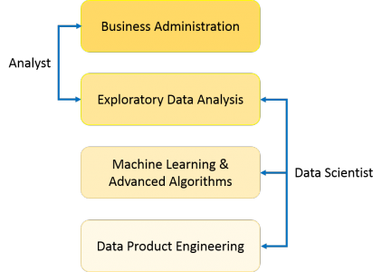
… or …

… or …
… or …

Our take? These are useful, interesting, and to some degree accurate but data science is too new, and too fluid, to be fixed into some static definition. 15 years ago, data science was “dashboards” and “predictive analytics.” 10 years ago, data science was “big data” and “data mining.” Since then, machine learning and artificial intelligence have taken up an ever-larger chunk of what most people consider data science. And in 5 or 10 years? Who knows.
So, to keep our definition accurate, we’ll keep it broad. Data science is simply “doing science with data.” And for our purposes, the only difference between our definition and the definition of science itself is not in the word “data” (since nowadays all scientists are, to some degree, “data scientists”), but rather in the word “doing.” Data science is about doing stuff with data. And that’s what this course is going to be about. DOING.
Data scientist vs data analysist vs data engineer
There is a lot of fuss out there about what constitutes data science and what doesn’t. Our definition is broad enough to encompass lots of things. So, we consider an “analyst” working in business intelligence to be a data scientist; and so too do we think that a data scientist could be an engineer who is processing large amounts of data to extract basic trends. Again, data scientists are those who do science with data. That’s a lot of people.
What is the data life cycle?
There is a misperception about data science work that it is largely or even exclusively interpretative: that is, a data scientist looks at a big set of data, a light bulb goes off in her head, she has some insight, and then acts on that insight.
The reality is data science is much more than that. And most of data science is a combination of (a) getting data ready for analysis, (b) hypothesis testing, and (c) figuring out what to do with the results of a and b. That is, data science in practice is generally not some artesenal genius staring at a table of numbers until “insight” magically occurs, but rather a lot of work, a lot of structured theories which can be confirmed or falsified, and a lot of imagination applied to the task of implementation. Good, effective data scientists, in practice, are often not those with the most cutting-edge algorithm, but rather those who are able to get the right data and ask the right questions.
In other words, data goes through a whole lifecycle of which analysis is just a small part. What is the data lifecycle?
Here’s how we conceptualize it:
- Observation
- Problem identification and definition
- Question formation
- Hypothesis generation
- Data collection
- Data processing
- Model building / hypothesis testing
- Operationalization
- Communication / dissemination
- Action
- Observation
Does the above look a lot like the sceintific method? That’s because it basically is. The main differences are (a) “data processing” (which in reality takes up most of any data scientist’s time), (b) the bias towards action, and (c) the iterative / looped nature of the lifecycle.
Data science ‘in the wild’
Enough theory - let’s talk about what data scientists are actually doing in the real world.
Data scientists are working on a ton of problems. Some examples include:
- Targeted advertising
- Dynamic airline pricing
- Social media feed optimization
- Making video games more fun / addictive
- Identifying and filtering inappropriate content on the internet
- Search autocomplete
- Automating identification of credit card fraud
- Facial recognition
- Voice recognition
- Filtering spam
- Autocorrect
- Virtual assistants
- Preventive maintenance at nuclear facilities
- Identifying tax evaders
- Identifying disease through imagery
- Improving chemotherapy dosage
- Quantifying the likelihood of recedivism to prevent over-incarceration
- Surveilling emergency rooms to predict disease outbreaks
- Improve matchmaking systems (liver transplants, love, etc.)
- Detecting fake news
- Predictive policing
Why R?
This course if largely about learning to do, and will largely use R. R is not the only tool in the data scientists’ toolbox, but it’s a good one, is extremely popular, has a larger community and user base, and can be applied to many fields.
What are some of the other tools and languages used by data scientists? There are plenty (and we won’t cover them here). But the main reason we choose R for this course is the fact that it is open-source and free. This matters because…
The reproducibility crisis
There is a crisis in science (and data science): the reproducitibility crisis (also known as the replication crisis). This refers to the fact that many scientific studies have been impossible to reproduce, calling into question the validity of those studies’ findings. This is a big deal: if a significant part of science is wrong then what do we know, how can we be sure what we know is right, and how can we separate the wheat from the chaff?
Because of this crisis, there has emerged a much needed move to make all science “reproducible.” This means making sure that someone else can copy what you did, and get the same results. This is important for identifying scientific fraud, of course, but also for helping us to overcome human bias, mistakes, wishful thinking, etc. Reproducibility is not just a “nice-to-have”; in modern science (and data science), it’s a “must.”
Good data science must be reproducible. And reproducible science means using tools that others can easily use, and methods that others can easily copy. Programming languages like R and Python are ideal for this.
In this course, we’ll focus on reproducible research, literate programming, documentation, and other components of data science (and research in general) which ensure that (a) our methods and findings can be easily sanity-tested by others, and (b) we set ourselves and our projects’ up for future collaborations, hand-offs, and expansion.
3 Visualizing data
3.1 The importance of visualization
Much of the next few weeks is going to focus on visualization. The reason why is that data visualization is a powerful, quick, and clear tool for communicating data, exploring it, and understanding it. With that in mind, let’s get started with some data viz.
3.2 Bad examples


3.3 Good exaples


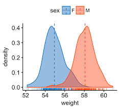


3.4 Quick video
Let’s watch a quick video on data visualization here.
(PART) Getting started
4 Setting up RStudio
First, download and install R:
Go to the following website, click the Download button, and follow the website’s instructions from there. https://mirrors.nics.utk.edu/cran/
Second, download and install RStudio:
Go to the following website and choose the free Desktop version: https://rstudio.com/products/rstudio/download/
Third, make sure RStudio opens successfully:
Open the RStudio app. A window should appear that looks like this:

Fourth, make sure R is running correctly in the background:
In RStudio, in the pane on the left (the “Console”), type 2+2 and hit Enter.
If R is working properly, the number “4” will be printed in the next line down.
Finally, some minor adjustments to make rstudio run smoother (and look cooler):
Tools > Global Options:

Cooler themes!

Boom!
5 Running R code
Learning goals
- Learn how to run code in R
- Learn how to use R as a calculator
- Learn how to use mathematical and logical operators in R
RStudio’s Console
When you open RStudio, you see several different panes within the program’s window. You will get a tour of RStudio in the next module. For now, look at the left half of the screen. You should see a large pane entitled the Console.
RStudio’s Console is your window into R, the engine under the hood. The Console is where you type commands for R to run, and where R prints back the results of what you have told it to do.
Running code in the Console
Type your first command into the Console, then press Enter:
1 + 1
[1] 2When you press Enter, R processes the command you fed it, then returns its result (2) just below your command.
Note that spaces don’t matter. Both of the following two commands are legible to R and return the same thing:
4 + 4
[1] 8
4+4
[1] 8However, it is better to make your code as easy to read as possible, which usually means using spaces.
Exercise 1
Type a command in the Console to determine the sum of 596 and 198.
Re-running code in the Console
If you want to re-run the code you just ran, or if you want to recall the code so that you can adjust it slightly, click anywhere in the Console then press your keyboard’s Up arrow.
If you keep pressing your Up arrow, R will present you with sequentially older commands.
If you accidentally recalled an old command without meaning to, you can reset the Console’s command line by pressing Escape.
Exercise 2
A. Re-run the sum of 596 and 198 without re-typing it.
B. Recall the command again, but this time adjust the code to find the sum of 596 and 298.
C. Practice escaping an accidentally called command: recall your most recent command, then clear the Console’s command line.
Incomplete commands in R
R gets confused when you enter an incomplete command, and will wait for you to write the remainder of your command on the next line in the Console before doing anything.
For example, try running this code in your Console:
45 +You will find that R gives you a little + sign on the line under your command, which means it is waiting for you to complete your command.
If you want to complete your command, add a number (e.g., 3) and hit Enter. You should now be given an answer (e.g., 48).
If instead you want R to stop waiting and stop running, hit the Escape key.
Getting errors in R
R only understands your commands if they follow the rules of the R language (often referred to as its syntax). If R does not understand your code, it will throw an error and give up on trying to execute that line of code.
For example, try running this code in your Console:
4 + 6pYou probably received a message in red font stating Error: unexpected symbol in "4 + 6p". That is because R did know how to interpret the symbol p in this case.
Get used to errors! They happen all the time, even (especially?) to professionals, and it is essential that you get used to reading your own code to find and fix its errors.
Exercise 3
Type a command in R that throws an error, then recall the command and revise so that R can understand it.
Use R like a calculator
As you can tell from those commands you just ran, R is, at heart, a fancy calculator.
Some calculations are straightforward, like addition and subtraction:
490 + 1000
[1] 1490
490 - 1000
[1] -510Division is pretty straightfoward too:
24 / 2
[1] 12For multiplication, use an asterisk (*):
24 * 2
[1] 48R is usually great about following classic rules for Order of Operations, and you can use parentheses to exert control over that order. For example, these two commands produce different results:
2*7 - 2*5 / 2
[1] 9
(2*7 - 2*5) / 2
[1] 2You denote exponents like this:
2 ^2
[1] 4
2 ^3
[1] 8
2 ^4
[1] 16Finally, note that R is fine with negative numbers:
9 + -100
[1] -91Exercise 4
A. Find the sum of the ages of everyone in your immediate family.
B. Now recall that command and adjust it to determine the average age of the members of your family.
Using operators in R
You can get R to evaluate logical tests using operators.
For example, you can ask whether two values are equal to each other.
96 == 95
[1] FALSE
95 + 2 == 95 + 2
[1] TRUER is telling you that the first statement is FALSE (96 is not, in fact, equal to 95) and that the second statement is TRUE (95 + 2 is, in fact, equal to itself).
Note the use of double equal signs here. You must use two of them in order for R to understand that you are asking for this logical test.
You can also ask if two values are NOT equal to each other:
96 != 95
[1] TRUE
95 + 2 != 95 + 2
[1] FALSEThis test is a bit more difficult to understand: In the first statement, R is telling you that it is TRUE that 96 is different from 95. In the second statement, R is saying that it is FALSE that 95 + 2 is not the same as itself.
Note that R lets you write these tests another, even more confusing way:
! 96 == 95
[1] TRUE
! 95 + 2 == 95 + 2
[1] FALSEThe first line of code is asking R whether it is not true that 96 and 95 are equal to each other, which is TRUE. The second line of code is asking R whether it is not true that 95 + 2 is the same as itself, which is of course FALSE.
Other commonly used operators in R include greater than / less than (> and <), and greater/less than or equal to (>= and <=).
100 > 100
[1] FALSE
100 >= 100
[1] TRUEExercise 5
A. Write and run a line of code that asks whether these two calculations return the same result:
2*7 - 2*5 / 2
(2*7 - 2*5) / 2B. Now write and run a line of code that asks whether the first calculation is larger than the second:
Use built-in functions within R
R has some built-in “functions” for common calculations, such as finding square roots and logarithms. Functions are packages of code that take a given value, transform it according to some internal code instructions, and provide an output. You will learn more about functions in a few modules.
sqrt(16)
[1] 4
log(4)
[1] 1.386294Note that the function log() is the natural log function (i.e., the value that e must be raised to in order to equal 4). To calculate a base-10 logarithm, use log10( ).
log(10)
[1] 2.302585
log10(10)
[1] 1Another handy function is round(), for rounding numbers to a specific number of decimal places.
100/3
[1] 33.33333
round(100/3)
[1] 33
round(100/3,digits=1)
[1] 33.3
round(100/3,digits=2)
[1] 33.33
round(100/3,digits=3)
[1] 33.333Finally, R also comes with some built-in values, such as pi:
pi
[1] 3.141593Exercise 6
Find the square root of pi and round the answer to the 2 decimal places.
Review assignment:
Show that the following statements are TRUE:
A. pi is greater than the square root of 9
B. It is FALSE that the square root of 9 is greater than pi
C. pi rounded to the nearest whole number equals the square root of 9
Other Resources
Hobbes Primer, Table 1 (Math Operators, pg. 18) and Table 2 (Logical operators, pg. 22)
6 Using RStudio and R scripts
Learning goals
- Understand the difference between
RandRStudio - Understand the
RStudioworking environment and window panes
- Understand what
Rscripts are, and how to create and save them - Understand how to add comments to your code, and why doing so is important
- Understand what a working directory is, and how to use it
- Learn basic project work flow
R and RStudio: what’s the difference?
These two entities are similar, but it is important to understand how they are different.
In short, R is a open-source (i.e., free) coding language: a powerful programming engine that can be used to do really cool things with data.
R Studio, in contrast, is a free user interface that helps you interact with R. If you think of R as an engine, then it helps to think of RStudio as the car that contains it. Like a car,RStudio makes it easier and more comfortable to use the engine to get where you want to go.
R Studio needs R in order to function, but R can technically be used on its own outside of RStudio if you want. However, just as a good car mechanic can get an engine to run without being installed within a car, using R on its own is a bit clunky and requires some expertise. For beginners (and everyone else, really), R is just so much more pleasant to use when you are operating it from within RStudio.
RStudio also has increasingly powerful extensions that make R even more useful and versatile in data science. These extensions allow you to use R to make interactive data dashboards, beautiful and reproducible data reports, presentations, websites, and even books. And new features like these are regularly being added to RStudio by its all-star team of data scientists.
That is why this book always uses RStudio when working with R.
Two-minute tour of RStudio
When you open RStudio for the first time, you will see a window that looks like the screenshot below.

Console
You are already acquainted with RStudio’s Console, the window pane on the left that you use to “talk” to R. (See the previous module.)
Environment
In the top right pane, the Environment, RStudio will maintain a list of all the datasets, variables, and functions that you are using as you work. The next modules will explain what variables and functions are.
This is the pane that is used the least often, and if you wish it can simplify your workspace to minimize it.
Files, Plots, Packages, & Help
You will use the bottom right pane very often.
- The Files tab lets you see all the files within your working directory, which will be explained in the section below.
- The Plots tab lets you see the plots you are producing with your code.
- The Packages tab lets you see the packages you currently have installed on your computer. Packages are bundles of
Rfunctions downloaded from the internet; they will be explained in detail a few modules down the road.
- The Help tab is very important! It lets you see documentation (i.e., user’s guides) for the functions you use in your code. Functions will also be explained in detail a few modules down the road.
These three panes are useful, but the most useful window pane of all is actually missing when you first open RStudio. This important pane is where you work with scripts.
Scripts
Before explaining what scripts are and why they are awesome, let’s start a new script.
To start a new script, go to the top left icon in the RStudio window, and click on the green plus sign with a blank page behind it:

A dropdown window will appear. Select “R Script.”
A new window pane will then appear in the top left quadrant of your RStudio window:
 You now have a blank script to work in!
You now have a blank script to work in!
Now type some simple commands into your script:
2 + 10
16 * 32Notice that when you press Enter after each line of code, nothing happens in the Console. In order to send this code to the Console, press Enter + Command at the same time (or Enter + Control, if you are on Windows) for each line of code.
To send both lines of code to the Console at once, select both lines of code and hit Enter + Command.
(To select multiple lines of code, you can (1) click and drag with your mouse or (2) hold down your Shift key while clicking your down arrow key. To select all lines of code, press Command + A.)
Exercise 1
Add a few more lines to your script, such that your script now looks like this.
2 + 10
16 * 32
1080 / 360
500 - 600- Run all of these lines of code at once.
- Now add
10to the first number in each row, and re-run all of the code.
Think about how much more efficient part (B) was thanks to your script! If you had typed all of that directly into your Console, you would have to recall or retype each line individually. That difference builds up when your number of commands grows into the hundreds.
What is an R script, and why are scripts so awesome?
An R script is a file where you can keep a record of your code. Just as a script tells actors exactly what to say and when to say it, an R script tells R exactly what code to run, and in what order to run it.
When working with R, you will almost always type your code into a script first, then send it to the Console. You can run your code immediately using Enter + Command, but you also have a script of what you have done so that you can run the exact same code at a later time
To understand why R scripts are so awesome, consider a typical workflow in Excel of GoogleSheets. You open a big complicated spreadsheet, spend hours making changes, and save your changes frequently throughout your work session.
The main disadvantages of this workflow are that:
There is no detailed record of the changes you have made. You cannot prove that you have made changes correctly. You cannot pass the original dataset to someone else and ask them to revise it in the same way you have. (Nor would you want to, since making all those changes was so time-consuming!) Nor could you take a different dataset and guarantee that you are able to apply the exact same changes that you applied to the first. In other words, your work is not reproducible.
Making those changes is labor-intensive! Rather than spend time manually making changes to a single spreadsheet, it would be better to devote that energy to writing
Rcode that makes those changes for you. That code could be run in this one case, but it could also be run at any later time, or easily modified to make similar changes to other spreadsheets.Unless you are an advanced Excel programmer, you are probably modifying your original dataset, which is always dangerous and a big No-No in data science. Each time you save your work in Excel or GoogleSheets (which automatically saves each change you make), the original spreadsheet file gets replaced by the updated version. But if you brought your dataset into
Rinstead, and modified it using anRscript, then you leave the raw data alone and keep it safe. (Sure, you can always save different versions of your Excel file, but then you run the risk of mixing up versions and getting confused.)
Working with R scripts allows you to avoid all of these pitfalls. When you write an R script, you are making your work ….
Efficient. Once you get comfortable writing
Rcode, you will be able to write scripts in a few minutes. Those scripts can modify datasets within seconds (or less) in ways that would take hours (or years) to carry out manually in Excel or GoogleSheets.Reproducible. Once you have written an
Rscript, you can reproduce your own work whenever you want to. You can send your script to a colleague so that they can reproduct your work as well. Reproducible work is defensible work.Low-risk. Since your R script does not make any changes to the original data, you are keeping your data safe. It is essential to preserve the sanctity of raw data!
Note that there is nothing fancy or special about an R script. An R script is a simple text file; that is, it only accepts basic text; you can’t add images or change font style or font size in an R script; just letters, numbers, and your other keyboard keys. The file’s extension, .R tells your computer to interpret that text as R code.
Commenting your code
Another advantage of scripts is that you can include comments throughout your code to explain what you are doing and why. A comment is just a part of your script that is useful to you but that is ignored by R.
To add comments to your code, use the hashtag symbol (#). Any text following a # will be ignored by R.
Here is the script above, now with comments added:
# Define variable x
x <- 2
x
# Make a new variable, y, based on x
y <- x*56
z <- y / 23 # Make a third variable, z, based on y
x + y + z # Now get the sum of all three variablesAdding comments can be more work, but in the end it saves you time and makes your code more effective. Comments might not seem necessary in the moment, but it is amazing how helpful they are when you come back to your code the next day. Frequent and helpful comments make the difference between good and great code. Comment early, comment often!
You can also use lines of hashtags to visually organize your code. For example:
##############################################
# Setup
##############################################
# Define variable x
x <- 2
x
# Make a new variable, y, based on x
y <- x*56
z <- y / 23 # Make a third variable, z, based on y
##############################################
# Get result
##############################################
x + y + z # Now get the sum of all three variablesThis might not seem necessary with a 5-line script, but adding visual breaks to your code becomes immensely helpful when your code grows to be hundreds of lines long.
Saving your work
R scripts are only useful if you save them! Unlike working with GoogleDocs or GoogleSheets, R will not automatically save your changes; you have to do that yourself. (This is inconvenient, but it is also safer; most of coding is trial and error, and sometimes you want to be careful about what is saved.)
Where to save your work? The folder in which you save your R script will be referred to as your working directory (see the next section). For the sake of these tutorials, it will be most convenient to save all of your scripts in a single folder that is in an easily accessed location. We suggest making a new folder on your Desktop and naming it databoom, but you can name it whatever you want and place it wherever you want.
How to save your script? To save the script you have opened and typed a few lines of code into, press Command + S (or Control + S). Alternatively, go to File > Save. Navigate to the folder you just created and type in a file name that is simple but descriptive. We suggest making a new R script for each module, and naming those scripts according to each module’s name. In this case, we recommend naming your script 09_intro_to_rstudio.
(It is good practice to avoid spaces in your file names; it will be essential later on, so good to begin the correct habit now. Start using an underscore, _, instead of a space.)
Your working directory
When you work with data in R, R will need to know where in your computer to look for that data. The folder it looks in is known as your working directory.
To find out which folder R is currently using as your working directory, use the function getwd():
getwd()
[1] "/home/joebrew/Documents/intro-to-data-science"Almost always, you want to set your working directory to the folder your R script is in.
How to set your working directory
Whenever you begin a new R script, setting your working directory will be one of the first things you do.
There are three ways to set your working directory:
- Manually without code. On the top banner in
RStudio, go to Session > Set Working Directory > To Source File Location:
 This action sets your working directory to the same folder that your
This action sets your working directory to the same folder that your R script is in. When you do this, you will see that a command has been entered into your Console:
(Note that the filepath may be different on your machine.) This code is using the function setwd(), which is also used in the next option.
Manually with code, using
setwd(): You can manually provide the filepath you want to set as your working directory. This option allows you to set yourwdto whatever folder you want. The character string within thesetwd()command is the path to a folder. The formatting of this string must be exact, otherwiseRwill throw an error. Use option 1 at first to get a sense of how your computer formats its folder paths. Copy, paste, and modify the output from option 1 in order to type your path correctly.Automatically with code: There is a command you can run that automatically sets your working directory to the folder that your
Rscript is in. This is the most efficient and useful method, in our experience.
To use this command, you must first install a new package. Run this code:
install.packages("rstudioapi")
library(rstudioapi)For now, you do not need to understand what this code is doing. We will explain packages and the library() function in a later module.
You can now copy, paste, and run this code to set your working directory automatically:
setwd(dirname(rstudioapi::getActiveDocumentContext()$path))This is a complicated line of code that you need not understand. As long as it works, it works! Confirm that R is using the correct working directory with the command getwd().
Typical workflows
Now that you know how to create a script and set your working directory, you are prepared to work on data projects in RStudio.
The workflow for beginning a new data project typically goes like this:
In your file explorer…
Create a folder for your project somewhere on your computer. This will become your working directory.
Create subfolders within your working directory, if you want. We recommend creating a
datasubfolder, for keeping data, and azsubfolder, for keeping miscellaneous documents. The goal is to keep your working directory visually simple and organized; ideally, the only files not within subfolders are yourRscripts.Add data to your working directory, if you have any.
In RStudio …
Create a new
Rscript.Save it inside your intended working directory.
At the top of your script, use comments to add a title, author info, and brief description.
Add the code to set your working directory.
Begin coding!
Template R script
Here is a template you can use to copy and paste into each new script you create:
################################################################################
# < Add title here >
################################################################################
#
# < Add brief description here >
#
# < Author >
# Created on <add date here >
#
################################################################################
# Set working directory
setwd(dirname(rstudioapi::getActiveDocumentContext()$path))
################################################################################
################################################################################
# Code goes here
################################################################################
# (end of file)Review assignment:
Part 1 (if not already complete). Create a working directory for this course. Call it whatever you like, but databoom could work great. Place it somewhere convenient on your computer, such as your Desktop.
Part 2. Within this working directory, create three new folders: (1) a data folder, which is where you will store the data files we will be using in subsequent modules; (2) a modules folder, which is where you will keep the code you use to work on the material in these modules, and (3) a project folder, which is where you will keep all your work associated with your summer project.
Part 3. Now follow the Typical Workflow instructions above to create a script. Save it within your modules folder. Name it template.R. Copy and paste the template R code provided above into this file, and save it. This is now a template that you can use to easily create new scripts for this course.
Part 4. Now make a copy of template.R to stage a script that you can use in the next module. To do so, in RStudio go to the top banner and click File > Save As. Save this new script as 10_variables.R (because the next module is called Module 10: Variables in R).
Part 5. Modify the code in 10-variables.R so that you are prepared to begin the next module. Change the title, and look ahead to Module 10 to fill in a brief description. Don’t forget to add your name as the author and specify today’s date.
Boom!
Other Resources
7 Variables in R
Learning goals
- How to define variables and work with them in
R
- Learn the various possible classes of data in
R
Introducing variables
So far we have strictly been using R as a calculator, with commands such as:
3 + 5
[1] 8Of course, R can do much, much more than these basic computations. Your first step in uncovering the potential of R is learning how to use variables.
In R, a variable is a convenient way of referring to an underlying value. That value can be as simple as a single number (e.g., 6), or as complex as a spreadsheet that is many Gigabytes in size. It may be useful to think of a variable as a cup; just as cups make it easy to hold your coffee and carry it from the kitchen to the couch, variables make it easy to contain and work with data.
Declaring variables
To assign numbers or other types of data to a variable, you use the < and - characters to make the arrow symbol <-.
x <- 3+5As the direction of the <- arrow suggests, this command stores the result of 3 + 5 into the variable x.
Unlike before, you did not see 8 printed to the Console. That is because the result was stored into x.
Calling variables
If you wanted R to tell you what x is, just type the variable name into the Console and run that command:
x
[1] 8Want to create a variable but also see its value at the same time? Here’s a handy trick:
x <- 3*12 ; x
[1] 36The semicolon simulates hitting Enter. It says: first run x <- 3*12, then run x.
You can also update variables.
x <- x * 3 ; x
[1] 108
x <- x * 3 ; x
[1] 324You can also add variables together.
x <- 8
y <- 4.5
x + y
[1] 12.5Naming variables
Variables are case-sensitive! If you misspell a variable name, you will confuse R and get an error.
For example, ask R to tell you the value of capital X. The error message will be Error: object 'X' not found, which means R looked in its memory for an object (i.e., a variable) named X and could not find one.
You can make variable names as complicated or simple as you want.
supercalifragilistic.expialidocious <- 5
supercalifragilistic.expialidocious # still works
[1] 5Note that periods and underscores can be used in variable names:
my.variable <- 5 # periods can be used
my_variable <- 5 # underscores can be usedHowever, hyphens cannot be used since that symbol is used for subtraction.
Also note that variables are case-sensitive! If you name a variable My_variable, R will not recognize it if you refer to it as My_Variable.
Naming theory
Naming variables is a bit of an art. The trick is using names that are clear but are not so complicated that typing them is tedious or prone to errors.
Some names need to be avoided, since R uses them for special purposes. For example, data should be avoided, as should mean, since both are functions built-in to R and R is liable to interpret them as such instead of as a variable containing your data.
Note that R uses a feature called ‘Tab complete’ to help you type variable names. Begin typing a variable name, such as supercalifragilistic.expialidocious from the example above, but after the first few letters press the Tab key. R will then give you options for auto-completing your word. Press Tab again, or Enter, to accept the auto-complete. This is a handy way to avoid typos.
Exercise 1
A. Estimate how many bananas you’ve eaten in your lifetime and store that value in a variable (choose whatever name you wish).
B. Now estimate how many ice cream sandwiches you’ve eaten in your lifetime and store that in a different variable.
C. Now use these variables to calculate your Banana-to-ICS ratio. Store your result in a third variable, then call that variable in the Console to see your ratio.
D. Who in the class has the highest ratio? Who has the lowest?
Types of data in R
So far we have been working exclusively with numeric data. But there are many different data types in R. We call these “types” of data classes:
- Decimal values like 4.5 are called numeric data.
- Natural numbers like 4 are called integers. Integers are also numerics.
- Boolean values (TRUE or FALSE) are called logical data.
- Text (or string) values are called character data.
In order to be combined, data have to be the same class.
R is able to compute the following commands …
x <- 6
y <- 4
x + y
[1] 10… but not these:
x <- 6
y <- "4"
x + yThat’s because the quotation marks used in naming y causes R to interpret y as a character class.
To see how R is interpreting variables, you can use the class() function:
x <- 100
class(x)
[1] "numeric"
x <- "100"
class(x)
[1] "character"
x <- 100 == 101
class(x)
[1] "logical"Another data type to be aware of is factors, but we will deal with them later.
Exercise 2
A. Assign a FALSE statement of your choosing to a variable of whatever name you wish.
B. Confirm that the class of this variable is “logical.”
C. Confirm that the variable equals FALSE.
Exercise 3
A. Create a variable x that is a list of numbers of any size. Create a variable y with the same criteria.
B. Check to see if each values of x is greater than each value of y
C. Check to see if the smallest value of x is greater than or equal to the average value of y.
Review assignment
Converting Farenheit to Celsius:
A. Assign a variable farenheit the numerical value of 32.
B. Assign a variable celsius to equal the conversion from Fahrenheit to Celsius. Unless your a meteorology nerd, you may need to Google equation for this conversion.
C. Print the value of celsius to the Console.
D. Now use this code to determine the Celsius equivalent of 212 degrees Farenheit.
8 Structures for data in R
Learning goals
- Learn the various structures of data in
R
- How to work with vectors in
R
Introducing data structures
Data belong to different classes, as explained in the previous module, and they can be arranged into various structures.
So far we have been dealing only with variables that contain a single value, but the real value of R comes from assigning entire sets of data to a variable.
Vectors
The simplest data structure in R is a vector. A vector is simply a set of values. A vector can contain only a single value, as we have been working with thus far, or it can contain many millions of values.
Declaring and using vectors
To build up a vector in R, use the function c(), which is short for “concatenate.”
x <- c(5,6,7,8)
x
[1] 5 6 7 8You can use the c() function to concatenate two vectors together:
x <- c(5,6,7,8)
y <- c(9,10,11,12)
z <- c(x,y)
z
[1] 5 6 7 8 9 10 11 12You can also use c() to add values to a vector:
x <- c(5,6,7,8)
x <- c(x,9)
x
[1] 5 6 7 8 9When two vectors are of the same length, you can do arithmetic with them:
x <- c(5,6,7,8)
y <- c(9,10,11,12)
x + y
[1] 14 16 18 20
x - y
[1] -4 -4 -4 -4
x * y
[1] 45 60 77 96
x / y
[1] 0.5555556 0.6000000 0.6363636 0.6666667You can also put vectors through logical tests:
x <- 1:5
4 == x
[1] FALSE FALSE FALSE TRUE FALSEThis command is asking R to tell you whether each element in x is equal to 4.
You can create vectors of any data class (i.e., data type).
x <- c("Ben","Joe","Eric")
x
[1] "Ben" "Joe" "Eric"
y <- c(TRUE,TRUE,FALSE)
y
[1] TRUE TRUE FALSENote that all values within a vector must be of the same class. You can’t combine numerics and characters into the same vector. If you did, R would try to convert the numbers to characters. For example:
x <- 4
y <- "6"
z <- c(x,y)
z
[1] "4" "6"Exercise 1
A. Create a vector with at least one number, character (string) and logical value
B. Identify the class of each element of the vector
Useful functions for handling vectors
length() tells you the number of elements in a vector:
x <- c(5,6)
y <- c(9,10,11,12)
length(x)
[1] 2
length(y)
[1] 4The colon symbol : creates a vector with every integer occurring between a min and max:
x <- 1:10
x
[1] 1 2 3 4 5 6 7 8 9 10seq() allows you to build a vector using evenly spaced sequence of values between a min and max:
seq(0,100,length=11)
[1] 0 10 20 30 40 50 60 70 80 90 100In this command, you are telling R to give you a sequence of values from 0 to 100, and you want the length of that vector to be 11. R then figures out the spacing required between each value in order to make that happen.
Alternatively, you can prescribe the interval between values instead of the length:
seq(0,100,by=7)
[1] 0 7 14 21 28 35 42 49 56 63 70 77 84 91 98rep() allows you to repeat a single value a specified number of times:
rep("Hey!",times=5)
[1] "Hey!" "Hey!" "Hey!" "Hey!" "Hey!"head() and tail() can be used to retrieve the first 6 or last 6 elements in a vector, respectively.
x <- 1:1000
head(x)
[1] 1 2 3 4 5 6
tail(x)
[1] 995 996 997 998 999 1000You can also adjust how many elements to return:
head(x,2)
[1] 1 2
tail(x,10)
[1] 991 992 993 994 995 996 997 998 999 1000sort() allows you to order a vector from its smallest value to its largest:
x <- c(4,8,1,6,9,2,7,5,3)
sort(x)
[1] 1 2 3 4 5 6 7 8 9rev() lets you reverse the order of elements within a vector:
x <- c(4,8,1,6,9,2,7,5,3)
rev(x)
[1] 3 5 7 2 9 6 1 8 4
rev(sort(x))
[1] 9 8 7 6 5 4 3 2 1which() allows you to ask, “For which elements of a vector is the following statement true?”
x <- 1:10
which(x==4)
[1] 4If no values within the vector meet the condition, a vector of length zero will be returned:
x <- 1:10
which(x == 11)
integer(0)%in% is a handy operator that allows you to ask whether a value occurs within a vector:
x <- 1:10
4 %in% x
[1] TRUE
11 %in% x
[1] FALSEExercise 2
A. Use the colon symbol to create a vector of length 5 between a minimum and a maximum value of your choosing.
B. Create a second vector of length 5 using the seq() function.
C. Create a third vector of length 5 using the rep() function.
D. Finally, concatenate the three vectors and check that the length makes sense.
Subsetting vectors
Since you will eventually be working with vectors that contain thousands of data points, it will be useful to have some tools for subsetting them – that is, looking at only a few select elements at a time.
You can subset a vector using square brackets [ ].
x <- 50:100
x[10]
[1] 59This command is asking R to return the 10th element in the vector x.
x[10:20]
[1] 59 60 61 62 63 64 65 66 67 68 69This command is asking R to return elements 10:20 in the vector x.
Exercise 2
A. Figure out how to replicate the head() function using your new vector subsetting skills.
B. Now replicate the tail() function, using those same skills as well as the length() function you just learned.
Review assignment
A. Create a vector called “sleep_time” with the number of hours you slept for each day in the last week.
B. Check if you slept more on day 3 than day 7
C. Get the total number of hours slept in the last week
D. Get the average number of hours slept in the last week
E. Check if the total number of hours in the first 3 days is less than the total number of hours in the last 4 days
F. Create an object named over_under. This should be the difference between how much you slept each night and 8 hours (ie, 1.5 means you slept 9.5 hours and -2 means you slept 8 hours)
G. Write code to use over_under to calculate your sleep deficit / surplus this week (ie, the total hours over/under the amount of sleep you would have gotten had you slept 8 hours every night)
H. Write code to get the minimum number of hours you slept this week.
I. Write code to calculate how many hours of sleep you would have gotten had you sleep the minimum number of hours every night.
J. Write code to calculate the average of the hours of sleep you got on the 3rd through 6th days of the week.
K. Write code to calculate how many hours of sleep you would get in a year if you were to sleep the same amount every night as the average amount you slept from the 3rd to 6th days of the week.
L. Write code to calculate how many hours of sleep per year someone who sleeps 8 hours a night gets.
M. How many hours more/less than the 8 hours per night sleeper do you get in a year, assuming you sleep every night the average of the amount you slept on the first and last day of this week?
9 Calling functions
Learning goals
- Understand what functions are, and why they are awesome
- Understand how functions work
- Understand how to read function documentation
Introducing R functions
You have already worked with many R functions; commands like getwd(), length(), and unique() are all functions. You know a command is a function because it has parentheses, (), attached at its end.
Just as variables are convenient names used for calling objects such as vectors or dataframes, functions are convenient names for calling processes or actions. An R function is just a batch of code that performs a certain action.
Variables represent data, while functions represent code.
Most functions have three key components: (1) one or more inputs, (2) a process that is applied to those inputs, and (3) an output of the result. When you call a function in R, you are saying, “Hey R, take this information, do something to it, and return the result to me.” You supply the function with the inputs, and the function takes care of the rest.
Take the function mean(), for example. mean() finds the arithmetic mean (i.e., the average) of a set of values.
x <- c(4,6,3,2,6,8,5,3) # create a vector of numbers
mean(x) # find their mean
[1] 4.625In this command, you are feeding the function mean() with the input x.
Base functions in R
There are hundreds of functions already built-in to R. These functions are called “base functions”. Throughout these modules, we have been – and will continue – introducing you to the most commonly used base functions.
You can access other functions through bundles of external code known as packages, which we explain in an upcoming module.
You can also write your own functions (and you will!). We provide an entire module on how to do this.
Note that not all functions require an input. The function getwd(), for example, does not need anything in its parentheses to find and return current your working directory.
Saving function output
You will almost always want to save the result of a function in a new variable. Otherwise the function just prints its result to the Console and R forgets about it.
You can store a function result the same way you store any value:
x <- c(4,6,3,2,6,8,5,3)
x_mean <- mean(x)
x_mean
[1] 4.625Functions with multiple inputs
Note that mean() accepts a second input that is called na.rm. This is short for NA.remove. When this is set to TRUE, R will remove broken or missing values from the vector before calculating the mean.
x <- c(4,6,3,2,NA,8,5,3) # note the NA
mean(x,na.rm=TRUE)
[1] 4.428571If you tried to run these commands with na.rm set to FALSE, R would throw an error and give up.
Note that you provided the function mean() with two inputs, x and na.rm, and that you separated each input with a comma. This is how you pass multiple inputs to a function.
Function defaults
Note that many functions have default values for their inputs. If you do not specify the input’s value yourself, R will assume you just want to use the default. In the case of mean(), the default value for na.rm is FALSE. This means that the following code would throw an error …
x <- c(4,6,3,2,NA,8,5,3) # note the NA
mean(x)
[1] NABecause R will assume you are using the default value for na.rm, which is FALSE, which means you do not want to remove missing values before trying to calculate the mean.
Function documentation (i.e., getting help)
Functions are designed to accept only a certain number of inputs with only certain names. To figure out what a function expects in terms of inputs, and what you can expect in terms of output, you can call up the function’s help page:
When you enter this command, the help documentation for mean() will appear in the bottom right pane of your RStudio window:
Learning how to read this documentation is essential to becoming competent in using R.
Be warned: not all documentation is easy to understand! You will come to really resent poorly written documentation and really appreciate well-written documentation; the few extra minutes taken by the function’s author to write good documentation saves users around the world hours of frustration and confusion.
The
TitleandDescriptionhelp you understand what this function does.The
Usagesection shows you how type out the function.The
Argumentssection lists out each possible argument (which inRlingo is another word for input or parameter), explains what that input is asking for, and details any formatting requirements.The
Valuesection describes what the function returns as output.At the bottom of the help page, example code is provided to show you how the function works. You can copy and paste this code into your own script of Console and check out the results.
Note that more complex functions may also include a Details section in their documentation, which gives more explanation about what the function does, what kinds of inputs it requires, and what it returns.
Function examples
R comes with a set of base functions for descriptive statistics, which provide good examples of how functions work and why they are valuable.
We can use the same vector as the input for all of these functions:
x <- c(4,6,3,2,NA,8,9,5,6,1,9,2,6,3,0,3,2,5,3,3) # note the NAmean() has been explained above.
result <- mean(x,na.rm=TRUE)
result
[1] 4.210526median() returns the median value in the supplied vector:
result <- median(x,na.rm=TRUE)
result
[1] 3sd() returns the standard deviation of the supplied vector:
result <- sd(x,na.rm=TRUE)
result
[1] 2.594416summary() returns a vector that describes several aspects of the vector’s distribution:
result <- summary(x,na.rm=TRUE)
result
Min. 1st Qu. Median Mean 3rd Qu. Max. NA's
0.000 2.500 3.000 4.211 6.000 9.000 1 Review assignment
A. Create a vector named years with the years of birth of everyone in the room.
B. What is the average year of birth?
C. What is the median year of birth?
D. Create a vector called ages which is the (approximate) age of each person.
E. What is the minimum age?
F. What is the maximum age?
G. What is the median age?
H. What is the average age?
I. “Summarize” ages.
J. What is the range of ages?
K. What is the standard deviation of ages?
L. Look up help on the function sort.
M. Created a vector called sorted_ages. It should be, well, sorted ages.
N. Look up the length function.
O. How many people are the group?
P. Create an object called old. Assign to this object a number (such as 36) at which someone becomes “old.”
Q. Create an object called old_people. This should be a boolean/logical vector indicating if each person is old or not.
R. Is person 7 old?
S. How many years from being old/young is person 12?
10 Subsetting and filtering
Learning goals
- Understand how to subset / filter
A quick review of booleans
Recall that a boolean / logical data type is either TRUE or FALSE. For example:
joes_age <- 35
old_age <- 36
joe_is_old <- joes_age >= old_age
joe_is_old[1] FALSERecall also that you can calculate whether a condition is true or false on multiple elements of a vector. For example:
ages <- c(10, 20, 30, 40, 50, 60)
old_age <- 36
people_are_old <- ages >= old_age
people_are_old[1] FALSE FALSE FALSE TRUE TRUE TRUEBoolean vectors are useful for subsetting, ie keeping those elements of a vector for which a condition is TRUE. You have already done this using indexes, for example:
ages[3][1] 30But you can also do this using booleans. For example:
foo <- 1:4
foo[2:4][1] 2 3 4foo[c(2,3,4)][1] 2 3 4foo[c(FALSE, TRUE, TRUE, TRUE)][1] 2 3 4foo[foo >= 2][1] 2 3 4Review assignment
A. Create a vector named nummies of all numbers from 1 to 100
B. Create another vector named little_nummies which consists of all those numbers which are less than or equal to 30
C. Create a boolean vector named these_are_big which indicates whether each element of nummies is greater than or equal to 70
D. Use these_are_big to subset nummies into a vector named big_nummies
E. Create a new vector named these_are_not_that_big which indicates whether each element of nummies is greater than 30 and less than 70. You’ll need to use the & symbol.
F. Create a new vector named meh_nummies which consists of all nummies which are greater than 30 and less than 70.
G. How many numbers are greater than 30 and less than 70?
H. What is the sum of all those numbers in meh_nummies
11 Base plots
Learning goals
- Make basic plots in
R - Basic adjustments to plot formatting
Introduction
To learn how to plot, let’s first create a dataset to work with:
country <- c("USA","Tanzania","Japan","Ctr. Africa Rep.","China","Norway","India")
lifespan <- c(79,65,84,53,77,82,69)
gdp <- c(55335,2875,38674,623,13102,84500,6807)These data come from this publicly available database that compares health and economic indices across countries in 2011.
The lifespan column presents the average life expectancy for each country.
The gdp column presents the average GDP per capita within that country, which is a common index for the income and wealth of average citizens.
Let’s see if there is a relationship between life expectancy and income.
Create a basic plot
The simplest way to make a basic plot in R is to use its built-in plot() function:
plot(lifespan ~ gdp)
This syntax is saying this: plot column lifespan as a function of gdp. The symbol ~ denotes “as a function of”. This frames lifespan as a dependent variable (y axis) that is affected by the independent variable (x axis), which in this case is gdp.
Note that R uses the variable names you provided as the x- and y-axes. You can adjust these labels however you wish (see formatting section below).
You can also produce this exact same plot using the following syntax:
plot(y=lifespan, x=gdp)Choose whichever one is most intuitive to you.
Most common types of plots
The plot above is a scatter plot, and is one of the most common types of plots in data science.
You can turn this into a line plot by adding a parameter to the plot() function:
plot(lifespan ~ gdp, type="l")
What a mess! Rather than connecting these values in the order you might expect, R connects them in the order that they are listed in their source vectors. This is why line plots tend to be more useful in scenarios such as time series, which are inherently ordered.
Another common plot is the bar plot, which uses a different R function:
barplot(height=lifespan,names.arg=country)In this command, the parameter height determines the height of the bars, and names.arg provides the labels to place beneath each bar.
There are many more plot types out there, but let’s stop here now.
Exercise 1
Produce a bar plot that shows the GDP for each country.
Basic plot formatting
You can adjust the default formatting of plots by adding other inputs to your plot() command. To understand all the parameters you can adjust, bring up the help page for this function:
?plotIf multiple help page options are returned, select the Generiz X-Y Plotting page from the base package. This is the plot function that comes built-in to R.
Here we demonstrate just a few of the most common formatting adjustments you are likely to use:
Set plot range using xlim (for the x axis) and ylim (for the y axis):
plot(lifespan ~ gdp,xlim=c(0,60000),ylim=c(40,100))
In this command, you are defining axis limits using a 2-element vector (i.e., c(min,max)).
Note that it can be easier to read your code if you put each input on a new line, like this:
plot(lifespan ~ gdp,
xlim=c(0,60000),
ylim=c(40,100))Make sure each input line within the function ends with a comma, otherwise you R will get confused and throw an error.
Set dot type using the input pch:
plot(lifespan ~ gdp,pch=16)
Set dot color using the input col (the default is col="black")
plot(lifespan ~ gdp,col="red")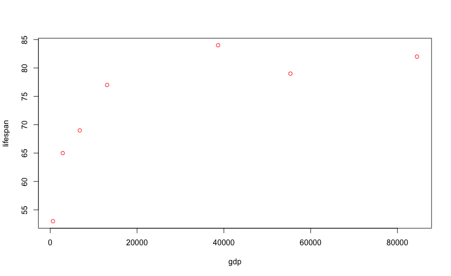
Here is a great resource for color names in R.
Set dot size using the input cex (the default is cex=1):
plot(lifespan ~ gdp,cex=3)
Set axis labels using the inputs xlab and ylab:
plot(lifespan ~ gdp, xlab="Gross Domestic Product (GDP)",ylab="Life Expectancy")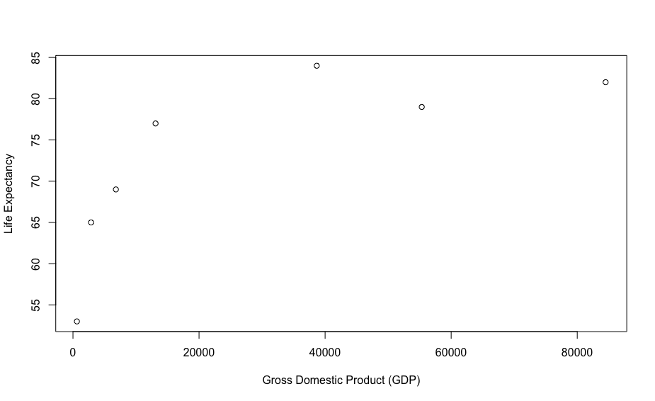
Set axis number size using the input cex.axis (the default is cex.axis=1):
plot(lifespan ~ gdp,cex.axis=.5)
Set axis label size using the input cex.label (the default is cex.lab=1):
plot(lifespan ~ gdp,cex.lab=.5)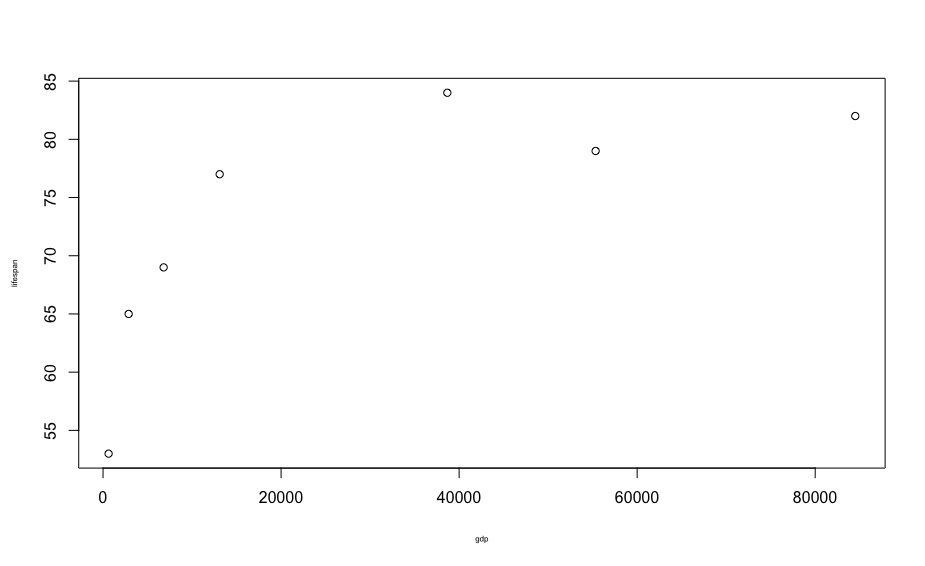
Set plot margins using the function par(mar=c()) before you call plot():
par(mar=c(5,5,0.5,0.5))
plot(lifespan ~ gdp)In this command, the four numbers in the vector used to define mar correspond to the margin for the bottom, left, top, and right sides of the plot, respectively.
Create a multi-pane plot using the function par(mfrow=c()) before you call plot():
par(mfrow=c(1,2))
plot(lifespan ~ gdp,col="red",pch=16)
plot(lifespan ~ gdp,col="blue",pch=16)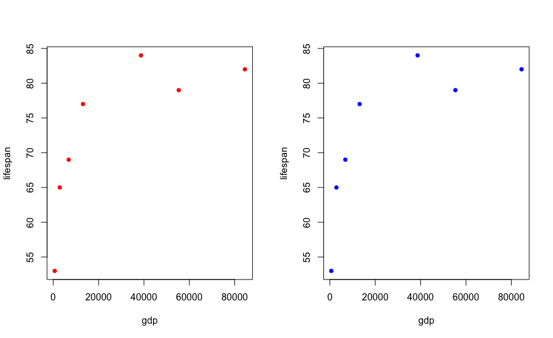
In this command, the two numbers in the vector used to define mfrow correspond to the number of rows and columns, respectively, on the entire plot. In this case, you have 1 row of plots with two columns.
Note that you will need to reset the number of panes when you are done with your multi-pane plot!
par(mfrow=c(1,1))Plot dots and lines at once using the input type:
par(mfrow=c(1,2))
plot(lifespan ~ gdp,type="b")
plot(lifespan ~ gdp,type="o")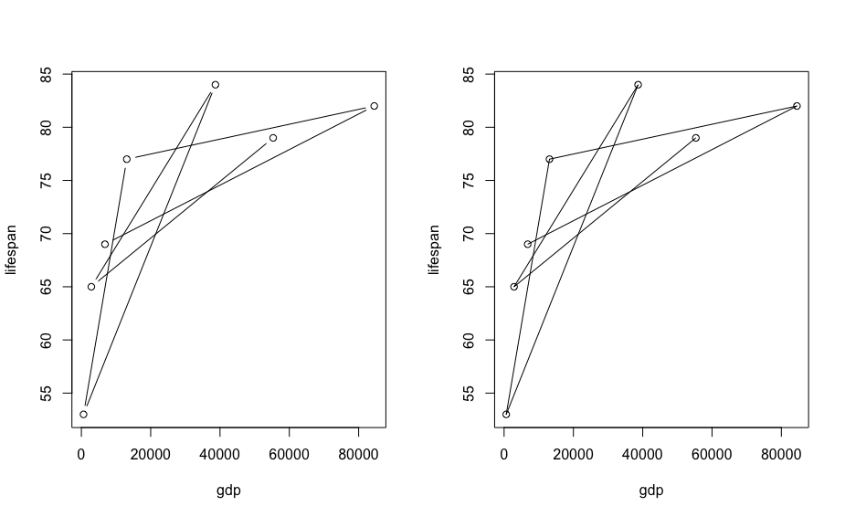
par(mfrow=c(1,1))Note the two slightly different formats here.
Use a logarithmic scale for one or of your axes using the input log
plot(lifespan ~ gdp,log="x")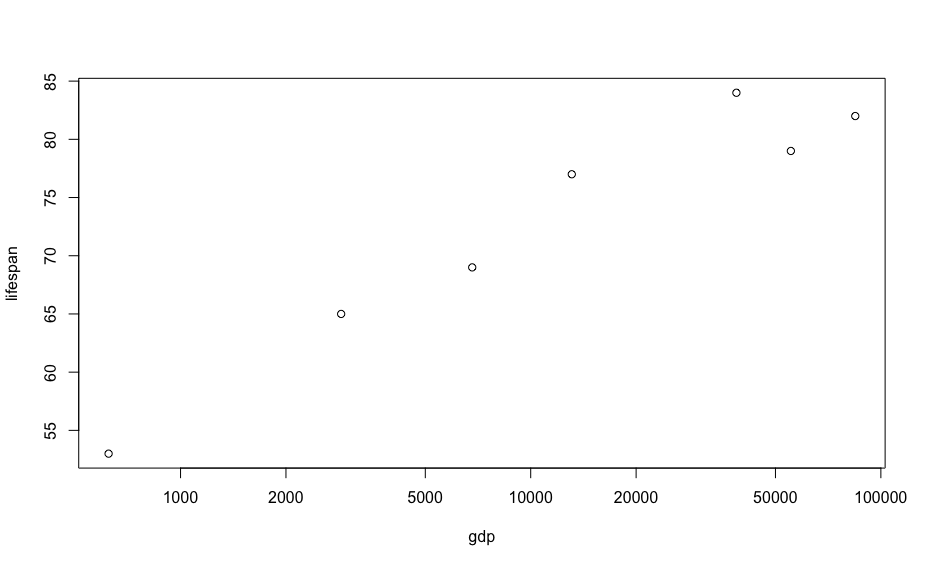
Exercise 2
Produce a beautifully formatted plot that incorporates all of these customization inputs explained above into a multi-paned plot.
Plotting with data frames
So far in this tutorial we have been using vectors to produce plots. This is nice for learning, but does not represent the real world very well. You will almost always be producing plots using dataframes.
Let’s turn these vectors into a dataframe:
df <- data.frame(country,lifespan,gdp)
df
country lifespan gdp
1 USA 79 55335
2 Tanzania 65 2875
3 Japan 84 38674
4 Ctr. Africa Rep. 53 623
5 China 77 13102
6 Norway 82 84500
7 India 69 6807To plot data within a dataframe, your plot() syntax changes slightly:
plot(lifespan ~ gdp, data=df)
This syntax is saying this: using the dataframe named df as a source, plot column lifespan as a function of column gdp. The symbol ~ denotes “as a function of”. This frames lifespan as a dependent variable (y axis) that is affected by the independent variable (x axis), which in this case is gdp.
Another way to write this command is as follows:
plot(df$lifespan ~ df$gdp)In this command, the $ symbol is saying, “give me the column in df named lifespan.” It is a handy way of referring to a column within a dataframe by name. You will learn more about working with dataframes in an upcoming module.
Exercise 2
A. Use the df dataframe to produce a bar plot that shows life expectancy for each country.
B. Use the df dataframe to produce a jumbled line plot of life expectancy as a function of GDP. Reference the plot() documentation to figure out how to change the thickness of the line.
Next-level plotting
The possibilities for data visualization in R are pretty much limitless, and over time you will become fluent in making gorgeous plots. Here are a few common tools that can take your plots to the next level.
Adding lines
In some cases it is useful to add reference lines to your plot. For example, what if we wanted to be able to quickly see which countries had life expectancies below 75 years?
You can add a line at lifespan = 75 using the function abline().
plot(df$lifespan ~ df$gdp)
abline(h=75)
In this command, the h input means “place a horizontal line at this y value.”
Similarly, you can use v to specify vertical lines at certain x values.
plot(df$lifespan ~ df$gdp)
abline(v=c(25000,35000),lty=3)Note here that another input, lty, was used to change the type of line printed. (Refer to ?abline() for more details).
Exercise 4
Produce a plot of life expectancy as a function of GDP per capita. Then add a line to your plot that indicates which countries have per-capita GDPs that fall below (or above) the average per-capita GDP for the whole dataset. Make your line dashed and color it red.
Adding text
Use the text() function to add labels to your plot:
plot(df$lifespan ~ df$gdp)
text(x=30000,y=75,labels="My text went here")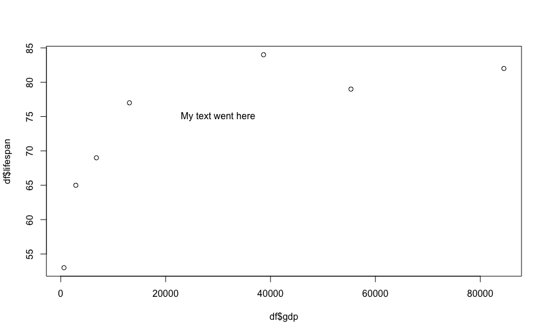
Exercise 5
Produce a plot of life expectancy as a function of GDP per capita, then label each point by country. Make the labels small and place them to the right of their associated dot (Hint: use ?text for help).
Highlighting certain data points
It can be helpful to highlight a certain data point (or group of data points) using a different dot size, format, or color.
To highlight a single data point, here is one approach you can take: first, plot all points, then re-plot the point of interest using the points() function:
plot(df$lifespan ~ df$gdp)
points(x=df$gdp[5],y=df$lifespan[5],col="red",pch=16,cex=1.5)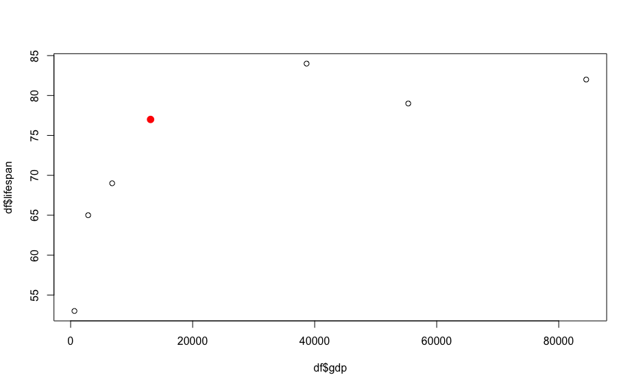
In this example, we re-plotted the data for the fifth row in the dataframe (in this case, China).
To highlight a group of data points, try this approach:
First, create a vector that will contain the color for each data point.
Second, determine the color for each data point using a logical test.
Third, use your vector of colors within your
plot()command.
For example, let’s highlight all countries whose life expectancy is greater than 75.
# First
cols <- rep("grey",times=length(lifespan)) # create a vector of colors the length of vector `lifespan`
cols
[1] "grey" "grey" "grey" "grey" "grey" "grey" "grey"
# Second
change_these <- which(lifespan > 75)
change_these # these are the elements that we want to highlight
[1] 1 3 5 6
cols[change_these] <- "red" # change the color for these elements to a highlight color
# Third
plot(lifespan ~ gdp,pch=16,col=cols,log="x")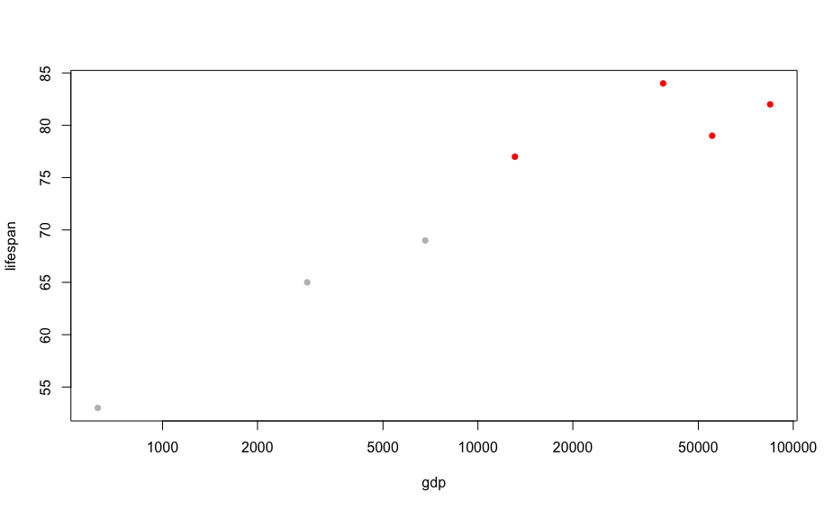
Exercise 6
Produce a plot of life expectancy as a function of GDP per capita, in which all countries with GDPs below $10,000 have larger dots of a different color.
Building a plot from the ground up
In many applications it can be helpful to have complete control over the way your plot is built. To do so, you can build your plot from the very bottom up in multiple steps.
The steps for building up your own plot are as follows:
Stage a blank canvas: A plot begins with a blank canvas that covers a certain range of values for
xandy. To stage a blank canvas, add this parameters to yourplot()function:type="n", axes=FALSE, ann=FALSE, xlim=c(__, __), ylim=c(__, __)". These commands tellRto plot a blank space, not to print axes, not to print annotations like x- or y-axis labels, and to limit your canvas to a certain coordinate range. Be sure to add numbers to thexlim()andylim()commands.Add your axes, if you want, using the function
axis(). The commandaxis(1)prints the x-axis, andaxis(2)prints the y-axis. This function allows you to define where tick marks occur and other details (see?axis).Add axis titles using the function
title().Add reference lines, if you want, using
abline(). Do this before adding data, since it is usually nice for data points to be superimposed on top of your reference lines.Add your data using either
points()orlines().Add text labels, if you want, using
text().
Here is an example of this process:
# 1. Stage a blank canvas
par(mar=c(4.5,4.5,1,1))
plot(1,type="n",axes=FALSE,ann=FALSE,xlim=c(0,100000),ylim=c(40,100))
# 2. Add axes
axis(1,at=c(0,20000,40000,60000,80000,100000),labels=c("$0", "$20","$40","$60","$80","$100"))
axis(2,at=seq(40,100,by=10),las=2)
# 3. Add axis titles
title(xlab="Gross Domestic Product (GDP, in thousands) per Capita ",cex.lab=.9)
title(ylab="Average Life Expectancy",cex.lab=.9)
# 4. Add reference lines
abline(h=70,v=50000,lty=3,col="grey")
# 5. Add data
points(x=gdp,y=lifespan,pch=16,col="firebrick")
# 6. Add text
text(x=gdp[6],y=lifespan[6],labels="Norway",pos=3)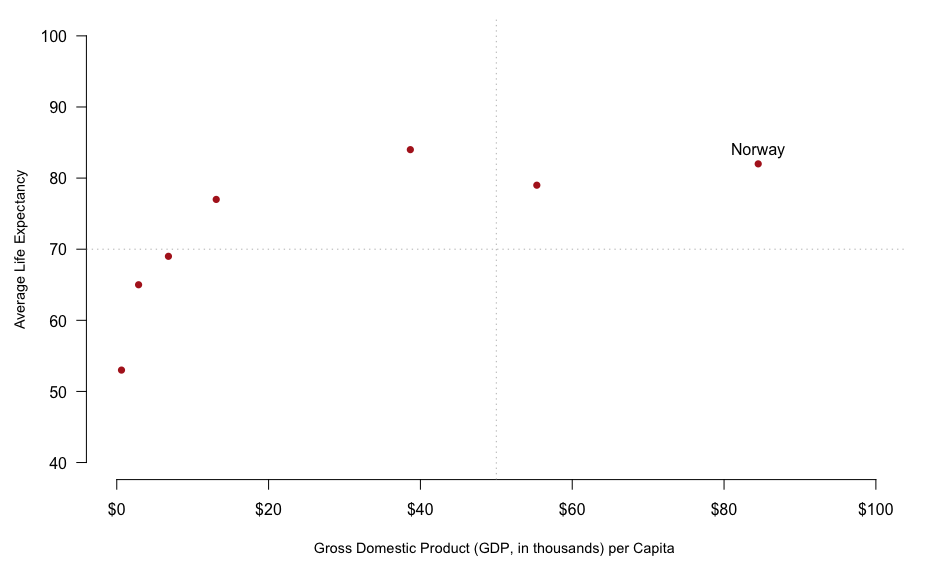
Review assignment
Create a vector of the names of 5 people who are sitting near you. Call it
people.Create a vector of those same 5 people’s shoe sizes (in the same order!). Call it
shoe_size.Create another vector of those same 5 people’s height. Call it
height.Create another vector of those same 5 people’s sex. Call it
sex.Make a scatterplot of height and shoe size. Is there a correlation?
Look up help for
boxplot. Make aboxplot.Make a dataframe named
df. It should contain columns of all the vectors created so far.Make a side by side
boxplotwith shoe sizes of males vs females.Try to find documentation for making a “histogram” (hint: use text autocomplete).
Make a histogram of people’s height.
Other Resources
12 Packages
Learning goals
- Learn what
Rpackages are and why they are awesome - Learn how to find and read about the packages installed on your machine
- Learn how to install
Rpackages fromCRAN - Learn how to install
Rpackages fromGitHub
Introducing R packages
As established in the Calling functions module, R comes with hundreds of built-in base functions and datasets ready for use. You can also write your own functions, which we will cover in an upcoming module.
You can also access thousands of other functions and datasets through bundles of external code known as packages. Packages are developed and shared by R users around the world – a global community working together to increase R’s versatility and impact.
Some packages are designed to be broadly useful for almost any application, such as the packages you will be learning in this course (ggplot, dplyr, stringr, etc.). Such packages make it easier and more efficient to do your work with R.
Others are designed for niche problems that can be made much more doable with specialized functions or datasets. For example, the package PBSmapping contains shoreline, seafloor, and oceanographic datasets and custom mapping functions that make it easier for marine scientists at the Pacific Biological Station (PBS) in British Columbia, Canada, to carry out their work.
Finding the packages already on your computer
In RStudio, look to the pane in the bottom right and click on the Packages tab. You should see something like this:
 This is displaying all the packages already installed in your system.
This is displaying all the packages already installed in your system.
If you click on one of these packages (try the base package, for example), you will be taken to a list of all the functions and datasets contained within it.

When you click on one of these functions, you will be taken to the help page for that function. This is the equivalent of typing ? <function_name> into the Console.
Installing a new package
There are a couple ways to download and install a new R packae on your computer. Most packages are available from an open-source repository known as CRAN (which stands for Comprehensive R Archive Network). However, an increasingly common practice is to release packages on a public repository such as GitHub.
Installing from CRAN
You can install CRAN packages one of two ways:
Through clicks:
In RStudio, in the bottom-right pane, return to the Packages tab. Click on the “Install” button.

You can then search for the package you wish to install then click Install.
Through code:
You can download packages from the Console using the install.packages() function.
install.packages('fun')Note that the package name must be in quotation marks.
Installing from GitHub
To install packages from GitHub, you must first download a CRAN package that makes it easy to do so:
install.packages("devtools")Most packages on GitHub include instructions for downloading it on its GitHub page.
For example, visit this GitHub page to see the documentation for the package wesanderson, which provides color palette themes based upon Wes Anderson’s films. On this site, scroll down and you will find instructions for downloading the package. These instructions show you how to install this package from your R Console:
devtools::install_github("karthik/wesanderson")Now go to your Packages tab in the bottom-right pane of RStudio, scroll down to find the wesanderson package, and click on it to check out its functions.
Loading an installed package
There is a difference between installed and loaded packages. Go back to your Packages tab. Notice that some of the packages have a checked box next to their names, while others don’t.
These checked boxes indicate which packages are currently loaded. All packages in the list are installed on your computer, but only the checked packages are loaded, i.e., ready for use.
To load a package, use the library() function.
library(fun)
library(wesanderson)Now that your new packages are loaded, you can actually use their functions.
Calling functions from a package
Most functions from external packages can be used by simply typing the name of the function. For example, the package fun contains a function for generating a random password:
random_password(length=24)
[1] "}9=xj)Kq_M$4?]zaDA2@R'Uh"Sometimes, however, R can get confused if a new package contains a function that has the same name of some function from a different package. If R seems confused about a function you are calling, it can help to specify which package the function can be found in. This is done using the syntax <package_name>::<function_name>. For example, the following command is a fine alternative to the command above:
fun::random_password(length=24)
[1] "-%t(~]XsdRJ7`\\&8!$+T1AM2"Note that this was done in the example above using the devtools package.
Review: the workflow for using a package
To review how to use functions from a non-base package in R, follow these steps (examples provided:)
- Install the package
# Example from CRAN
install.packages("wesanderson")
# Example from GitHub
devtools::install_github("karthik/wesanderson")- Load the package
# Example
library(wesanderson)- Call the function.
wes_palette("Royal1")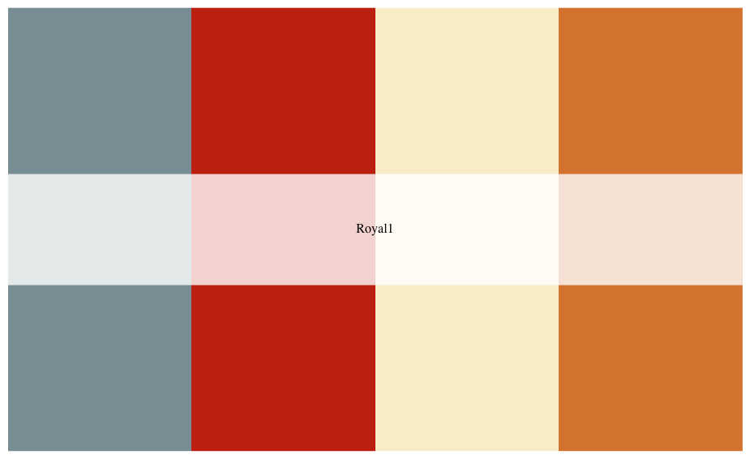
wesanderson::wes_palette("Zissou1")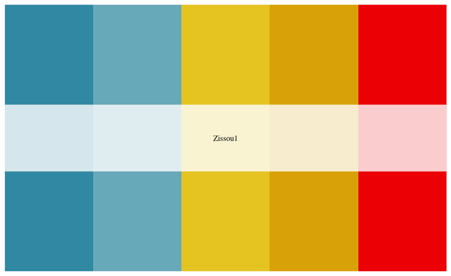
(This function creates a plot displaying the different colors contained within the specified palette.)
A note on package dependencies
Most packages contain functions that are built using functions built from other packages. Those new functions depend on the functions from those other packages, and that’s why those other packages are known as dependencies. When you install one function, you will notice that R typically has to install several other packages at the same time; these are the dependencies that allow the package of interest to function.
A note on package versions
Packages are updated regularly, and sometimes new versions can break the functions that use it as a dependency. Sometimes you may have to install a new version (or sometimes an older version!) of a dependency in order to get your package of interest to work as desired.
Quick overview
You install them from CRAN with install.packages(“x”). You use them in R with library(“x”). You get help on them with help(package = “x”).
Review assigment: let’s install some packages
Install the
babynamespackage.Install
ggplot2.Install
dplyr.Install
RColorBrewer.Install
tidyr.Install
gapminder.Install
readr.Write 7 lines of code which load the above packages.
13 Basics of ggplot
(Refer heavily to https://ggplot2-book.org/introduction.html)
Learning goals
- Understand what
ggplot2is and why it’s used - Be able to think conceptually in the framework of the “grammar of graphics”
- Learn the syntax for creating different plots using using
ggplot2
13.1 Thinking about data visualization
Let’s start with a video: https://youtu.be/5Zg-C8AAIGg.
And one by Hans Rosling too: https://www.youtube.com/watch?v=FACK2knC08E
What is ggplot?
ggplot2 is an R package. It’s one of the most downloaded packages in the R universe, and has become the gold standard for data visualization. It’s extremely powerful and flexible, and allows for creating lots of visualizations of different types, ranging from maps to bare-bones academic publications, to complex, paneled charts with labeling, etc. Because the syntax is so different from “base” R, it can give the impression of having a somewhat steep learning curve. But in reality, because the principles are so conceptually simple, learning is fairly fast. Generally those who choose to learn it stick with it; that is, once you go gg, you don’t go back.
The name and concept
“GG” stands for “grammar of graphics,” with “grammar” meaning “the fundamental principles or rules of an art or science” (Wickham 2010). The most well-known “grammar of graphics” was written in 2005 and laid out some abstract principles for describing statistical graphics (Wilkinson 2005). The basic idea is that all graphs can be described using a layered grammar, and that all graphs have the same general elements…
- data
- aesthetics (mapping) of variables to objects
- geometric objects
… whereas some graphs have additional elements…
- statistical transformations
- labs
- facets
- themes
Practice
Titanice data set
library(ggplot2)
library(readr)
library(ggthemes)
library(dplyr)
titanic<- read_csv("https://raw.githubusercontent.com/databrew/intro-to-data-science/main/data/deaths.csv")Scatter plot
Call the plot
ggplot()Aesthetics (mapping variables to the x y plane)
ggplot(data = titanic, aes(x = Age, y = Fare))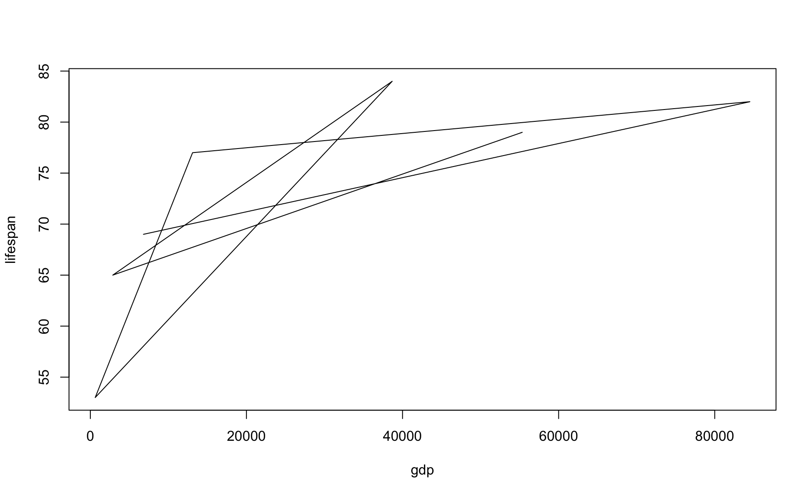
Geometry
ggplot(data = titanic, aes(x = Age, y = Fare)) + geom_point()
Statistics
ggplot(data = titanic, aes(x = Age, y = Fare)) + geom_point() + geom_smooth(method = 'lm')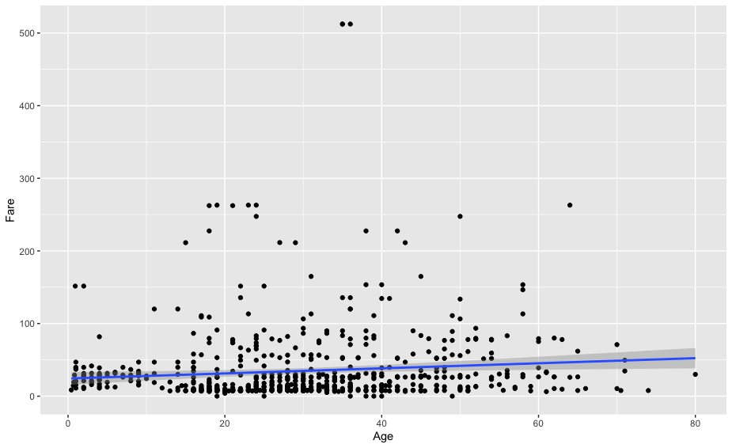
Labs
ggplot(data = titanic, aes(x = Age, y = Fare)) + geom_point() + geom_smooth(method = 'lm') + labs(title = 'Relationship between Age and Fare')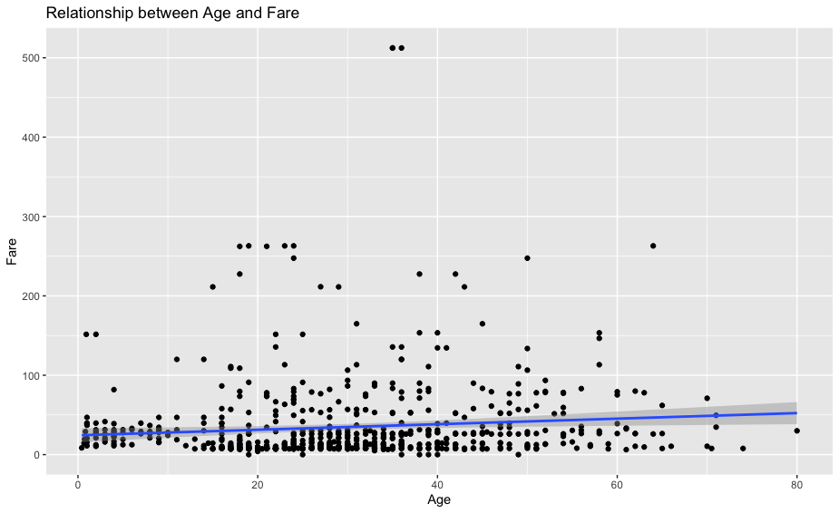
Facets
ggplot(data = titanic, aes(x = Age, y = Fare)) + geom_point() + geom_smooth(method = 'lm') + labs(title = 'Relationship between Age and Fare') +
facet_wrap(~Sex)
Themes
ggplot(data = titanic, aes(x = Age, y = Fare)) + geom_point() + geom_smooth(method = 'lm') + labs(title = 'Relationship between Age and Fare') +
facet_wrap(~Sex) + theme_fivethirtyeight()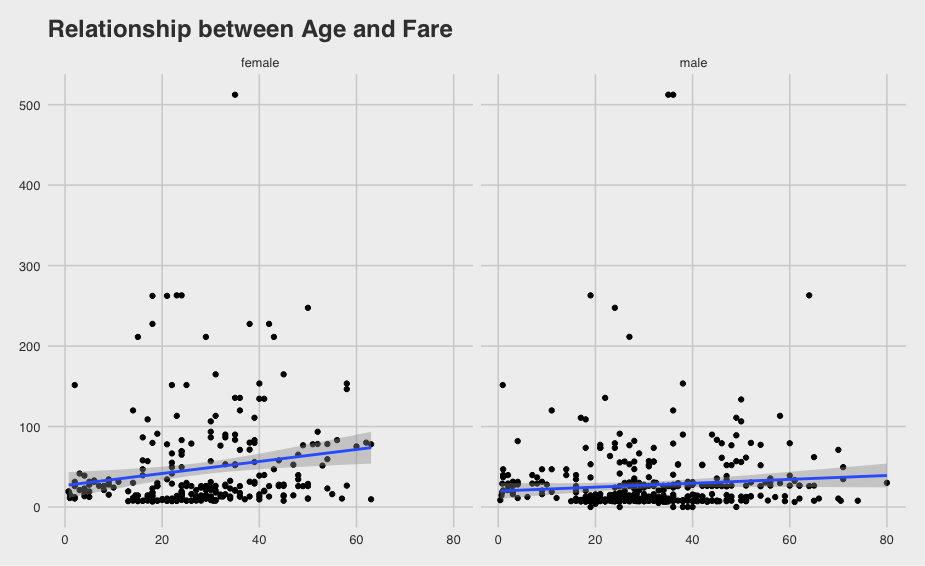
Barplot
Get counts for sex
ggplot(data = titanic, aes(x = Sex)) + geom_bar(stat='count')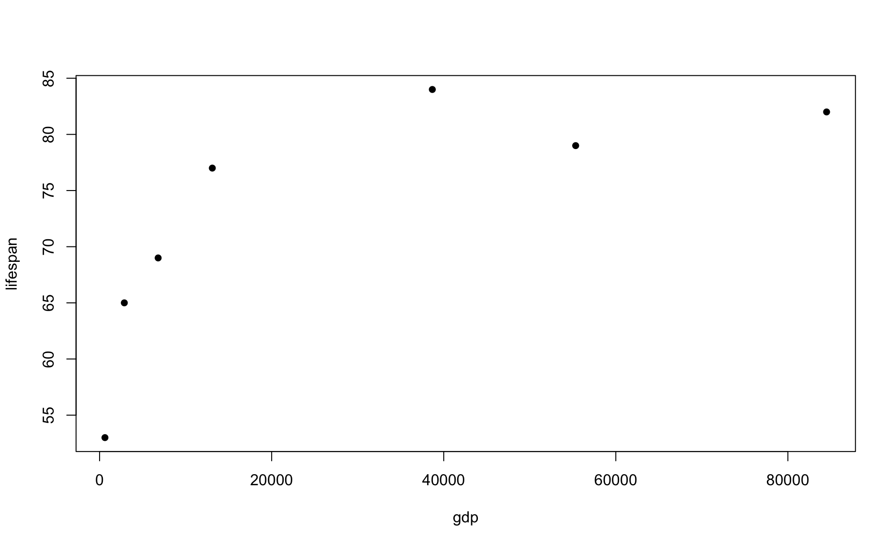
Explicitly set y to another variable
titanic_age <- titanic %>% group_by(Sex) %>% summarise(mean_age = mean(Age, na.rm= TRUE))
ggplot(data = titanic_age, aes(x = Sex,y= mean_age)) + geom_bar(stat = 'identity')
Fill
ggplot(data = titanic_age, aes(x = Sex,y= mean_age)) + geom_bar(stat = 'identity', fill = 'blue', alpha = 0.5) 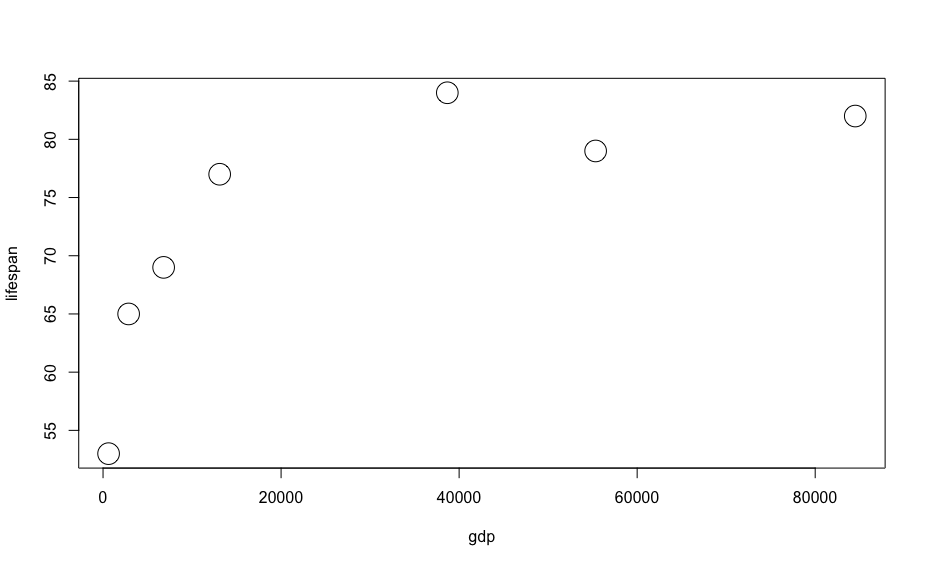
Labs
ggplot(data = titanic_age, aes(x = Sex,y= mean_age)) + geom_bar(stat = 'identity', fill = 'blue', alpha = 0.5) + labs(y = 'Mean age', title = 'Average age by sex')
Add another variable
titanic_em <- titanic %>% group_by(Sex, Survived) %>% summarise(mean_age= mean(Age, na.rm = TRUE))
titanic_em <- titanic_em %>% mutate(Survived = ifelse(Survived == 1, 'Survived','Dead' ))
ggplot(data = titanic_em, aes(x=Sex, y=mean_age, fill = Survived)) + geom_bar(stat='identity')Dodge
ggplot(data = titanic_em, aes(x=Sex, y=mean_age, fill = Survived)) + geom_bar(stat='identity', position = 'dodge') 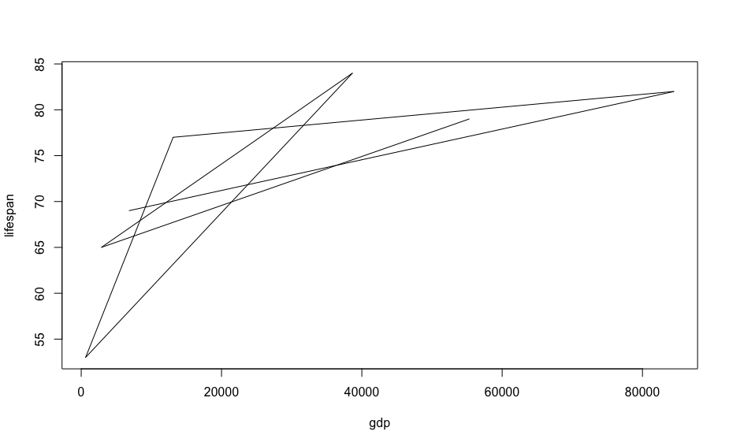
Scales
ggplot(data = titanic_em, aes(x=Sex, y=mean_age, fill = Survived)) + geom_bar(stat='identity', position = 'dodge', alpha = 0.7) + scale_fill_manual(values = c('blue', 'grey'))
Practice 1
library(babynames)
library(dplyr)
library(ggplot2)
bn <- babynames
# subset by the name Francis
francis <- bn %>% filter(name == 'Francis', sex == 'M')
# line plot
ggplot(data=francis, aes(x = year, y =n )) + geom_line() + labs(x = 'Year', y = 'Number of boys named Francis')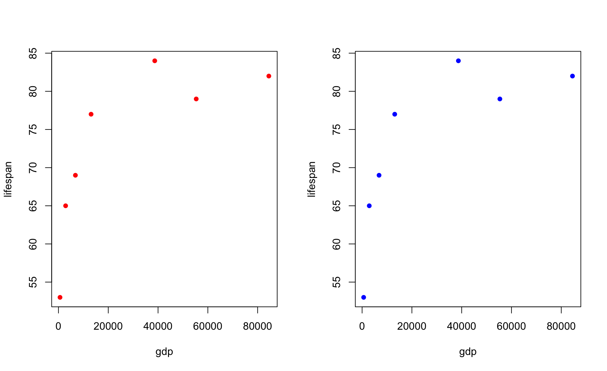
# layer with points
ggplot(data=francis, aes(x = year, y =n )) + geom_line() + geom_point() + labs(x = 'Year', y = 'Number of boys named Francis')
ggplot(data=francis, aes(x = year, y =n )) + geom_line() + geom_point() + labs(x = 'Year', y = 'Number of boys named Francis')
Practice exercises 1
Create a line chart showing the number of girls named Mary over time
Change the color of the line to blue
Add a title to the plot “The name Mary over time”
Create a bar chart showing the number of girls named Emma, Olivia, Ava, Sophia, and Emily in 2010
Change the X label to “Names” and the y label to “Total”
Change the color of the bar to grey and make it more transparent
Create a bar chart showing the number of people named Emma, Olivia, Ava, Sophia, and Emily in 2010, colored by sex
Create a cool-looking chart showing your name over time
Practice exercises 2
First, let’s read in some data on health from the World Bank:
library(readr)
library(dplyr)
library(gapminder)
gm <- gapminder::gapminderHow many rows are in the dataset?
How many clumns are in the dataset?
What are the names of the columns?
What is the oldest year in the dataset?
What is the country/year with the greatest population in the dataset?
Get the average GDP per capita for each continent in 1952.
Get the average GDP per capita for each continent for the most recent year in the dataset.
Average GDP is a bit misleading, since it does not take into account the relative size (in population) of the different countries (ie, China is a lot bigger than Cambodia). Look up the function
weighted.mean. Use it to get the average life expectancy by continent for the most recent year in the dataset, weighted by population.Make a barplot of the above table (ie, average life expectancy by continent, weighted by population).
Make a point plot in which the x-axis is country, and the y-axis is GDP. Add the line
theme(axis.text.x = element_text(angle = 90))in order to make the x-axis text vertically aligned. What’s the problem with this plot? How many points are there per country?Make a new version of the above, but filter down to just the earliest year in the dataset.
Make a scatterplot of life expectancy and GDP per capita, just for 1972.
Make the same plot as above, but for the most recent year in the data.
Make the same plot as the above, but have the size of the points reflect the population.
Make the same plot as the above, but have the color of te points reflect the continent.
Filter the data down to just the most recent year in the data, and make a histogram (
geom_histogram) showing the distribution of GDP per capita.Get the average GDP per capita for each continent/year, weighted by the population of each country.
Using the data created above, make a plot in which the x-axis is year, the y-axis is (weighted) average GDP per capita, and the color of the lines reflects the content.
Make the same plot as the above, but facet the plot by continent.
Make the same plot as the above, but remove the coloring by continent.
Make a plot showing France’s population over time.
Make a plot showing all European countries’ population over time, with color reflecting the name of the country.
Create a variable called
status. If GDP per capita is over 20,000, this should be “rich”; if between 5,000 and 20,000, this should be “middle”; if this is less than 5,000, this should be “poor.”Create an object with the number of rich countries per year.
Create an object with the percentage of countries that were rich each year.
Create a plot showing the percentage of countries which were rich each year.
Create an object with the number of people living in poor countries each year.
Create a chart showing the number of people living in rich, medium, and poor countries per year (line chart, coloring by
status).Create a chart showing the life expectancy in Somalia over time.
Create a chart showing GDP per capita in Somalia over time.
Create a histogram of life expectancy for the most recent year in the data. Facet this chart by continent.
Create a barchart showing average continent-level GDP over time, weighted for population, with one bar for each year, stacked bars with the color of the bars indicating continent (
geom_bar(position = 'stack')).Create the same chart as above, but with bars side-by-side (
geom_bar(position = 'dodge'))Generate 3-5 more charts / tables that show interesting things about the data.
Make the above charts as aesthetically pleasing as possible.
(PART) Basic R workflow
14 Importing data
Learning goals
- Understand what a
.csvfile is, and why they are important in data science - How to format your data for easily importing data in
R - How to load, or “read,” your data into
R - How to set up your project directory and read data from other folders
To work with your own data in R, you need to load your data in R’s memory. This is called reading in your data.
Reading in data is simple and easy if your data are saved as a .csv, a comma-separated file. You can find functions for reading all sorts of file types into R, but the quickest way to begin working with your own data in R is to maintain that data in .csv’s.
.csv files
When you preview a .csv, it looks something like this:
 A neat spreadsheet of rows and columns.
A neat spreadsheet of rows and columns.
When you open up this same dataset in a simple text editor, it looks like this:
 This looks scary, but it is actually really simple. A
This looks scary, but it is actually really simple. A .csv is a simple text file in which each row is on a new line and columns of data are separated by commas. As a simple text file, there is no fancy formatting. There are no “Sheets” or “Tabs,” as you would find in GoogleSheets or Excel; it is a simple ‘flat’ file.
One of the major advantages of working with .csv’s is that the format is cross-platform and non-proprietary. That is, they work on Windows, Mac, Linux, and any other common type of computer, and they do not require special software to open.
Data format requirements
For those of us used to working in Excel or Numbers, it will take some adjustment to get into the habit of formatting your data for R. We are used to seeing spreadsheets that look something like this:
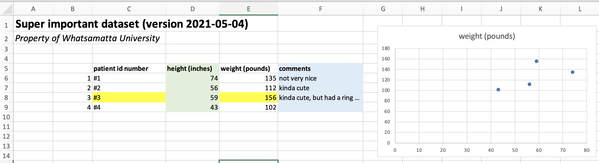
To read a .csv into R without issues or fancy code, this spreadsheet will need to be simplified to look like this:

Workflow for formatting your data
Below is the general worfklow for preparing your data for R is the following:
1. Get your data into .csv format. In Excel and Numbers, you can use ‘Save As’ to change the file format. In GoogleSheets, you can ‘Download As’ a .csv. This will remove any colors, thick lines, special fonts, bold or italicized font styles, and any other special formatting. All that will be left is your data, and that’s the way R likes it.
2. Remove blank columns before and in the middle of your data.
3. Remove elements such as graphs.
4. Simplify your ‘header.’ The space above your data is your spreadsheet’s header. It includes column names and metadata like title, author, measurement units, etc. It is possible to read data with complex headers into R, but again we are going for simplicity here, so we suggest (1) simplifying your header to contain column names only, and (2) moving metadata to a README.txt file that lives in the same folder as your data.
5. Simplify column names. Remove spaces, or replace them with ., - or _. Make your column names as simple and brief as possible while still being informative. Include units in the column names, as in the screenshot above. Be sure that each column has a name.
6. Remove all commas and hashtags from your dataset. You can do this with the ‘Find & Replace’ feature built-into in most spreadsheet editors.
Reading in data
The general workflow for reading in data is as follows:
- In
RStudio, set your working directory. - Place your data file in your working directory. (See the section below if you want to keep your data somewhere else.)
- In your
Rscript, read in your data file with one of the core functions below.
You can use this simple data file, super_data.csv, to practice.
Core functions for reading data
To become agile in reading various types of data into R, there are three key functions you should know:
read.csv()
This is the base function for reading in a .csv.
df <- read.csv("super_data.csv")This function reads in your data file as a dataframe. Save your dataset into R’s memory using a variable (in this case, df).
df
patient_id height_in weight_lb comment
1 1 74 135 not very nice
2 2 56 112 kinda cute
3 3 59 156 kinda cute but had a ring
4 4 43 102 so small!The read.csv() function has plenty of other inputs in the event that your data file is unable to follow the formatting rules outlined above (see ?read.csv()). The three most common inputs you may want to use are header, skip, and stringsAsFactors.
Use the
headerinput when your data does not contain column names. For example,header=FALSEindicates that your datafile does not have any column names.Use the
skipinput when you want to skip some lines of metadata at the top of your file. This is handy if you really don’t want to get rid of your metadata in your header. For example,skip=2skips the first two rows of the datafile beforeRbegins reading data.Use the
stringsAsFactorsinput when you want to make absolutely sure thatRinterprets any non-numeric fields as characters rather than factors. We have not focused on factors yet, but it can be frustrating whenRmistakes a column of character strings as a column factors. To avoid any possible confusion, usestringsAsFactors=TRUEas an input.
For example, here is how to read in this data without column names:
df <- read.csv("super_data.csv",skip=1,header=FALSE)
df
V1 V2 V3 V4
1 1 74 135 not very nice
2 2 56 112 kinda cute
3 3 59 156 kinda cute but had a ring
4 4 43 102 so small!If you do this without setting header to FALSE, your first row of data gets used as column names and it becomes a big ole mess:
df <- read.csv("super_data.csv",skip=1)
df
X1 X74 X135 not.very.nice
1 2 56 112 kinda cute
2 3 59 156 kinda cute but had a ring
3 4 43 102 so small!readr::read_csv()
This function, from a package named readr, becomes useful when you begin working with (1) data within the tidyverse, which you will be introduced to in the next module, and/or (2) very large datasete, since it reads data much more quickly and provides progress updates along the way.
When you use read_csv() instead of read.csv(), your data are read in as a tibble instead of a dataframe. You will be introduced to tibbles in the next module on dataframes; for the time being, think of a tibble as a fancy version of a dataframe that can be treated exactly as a regular dataframe.
df <- readr::read_csv("super_data.csv")
df
# A tibble: 4 x 4
patient_id height_in weight_lb comment
<dbl> <dbl> <dbl> <chr>
1 1 74 135 not very nice
2 2 56 112 kinda cute
3 3 59 156 kinda cute but had a ring
4 4 43 102 so small! readRDS()
Another niche function for reading data is readRDS(). This function allows you to read in R data objects, which have the file extension .rds. These data objects need not be in the same format as a .csv or even a dataframe, and that is what makes them so handy. A colleague could send you an .rds object of a vector, a list, a plotting function, or any other kind of R object, and you can read it in with readRDS().
For example, super_data.rdscontains a tibble version of the dataframe above. When you read in that .rds file, it is already formatted as a tibble:
df <- readRDS("super_data.rds")
df
# A tibble: 4 x 4
patient_id height_in weight_lb comment
<dbl> <dbl> <dbl> <chr>
1 1 74 135 not very nice
2 2 56 112 kinda cute
3 3 59 156 kinda cute but had a ring
4 4 43 102 so small! Reading data from other folders
The data-reading functions above require only a single input: the path to your data file. This path is relative to the location of your working directory. When your data file is inside your working directory, the path simplifies to be the same as the filename of your data:
df <- read.csv("super_data.csv")Sometimes, though, you will want to keep your data somewhere nearby but not necessarily within your working directory. Consider the following scenario, in which three versions of the “super_data.csv” dataset occur near a working directory being used for this module:

We have a version within the same directory as our R file (i.e., our working directory), another version within a child folder within the directory (i.e., a subfolder), and another version in the parent folder of the working directory.
To read a file from a child folder, add the prefix, ./<child name>/, to your command:
df <- read.csv("./data/super_data.csv")To read a file from a parent folder, add the prefix, ../, to your command:
df <- read.csv("./data/super_data.csv")Managing files
Now consider the following scenario, in which your project folder structure looks like this:
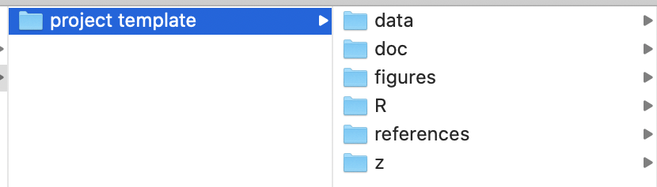
This structure can be a effective and simple way of organizing your files for a project, and we recommend using it.
Here’s what these child folders should contain.
./data/contains data, of course../doc/contains documents, such as manuscript drafts../figures/contains files for graphs and figures../R/containsRscripts, of course../references/contains journal articles and other resources you are using in your research.
Since your R code is going into the R child folder, that is what you should set your working directory for those R scripts to. In that case, how to read data from the data folder, which is a separate child folder of your parent folder?
Here’s how:
df <- read.csv("../data/super_data.csv")Review exercise
NOTE: Under construction!
15 Dataframes
Dataframes & other data structures
Learning goals
- Practice exploring, summarizing, and filtering dataframes
- Understand the importance of tidy datasets
- Understand what the
tidyverseis and why it is awesome
A vector is the most basic data structure in R, and the other structures are built out of vectors.
As a data scientist, the most common data structure you will be working with is a dataframe, which is essentially a spreadsheet: a dataset with rows and columns, in which each column represents is a vector of the same class of data.
We will explore dataframes in detail later, but here is a sneak peak at what they look like:
df <- data.frame(x=300:310,
y=600:610)
df
x y
1 300 600
2 301 601
3 302 602
4 303 603
5 304 604
6 305 605
7 306 606
8 307 607
9 308 608
10 309 609
11 310 610In this command, we used the data.frame() function to combine two vectors into a dataframe with two columns named x and y. R then saved this result in a new variable named df. When we call df, R shows us the dataframe.
The great thing about dataframes is that they allow you to relate different data types to each other.
df <- data.frame(name=c("Ben","Joe","Eric"),
height=c(75,73,80))
df
name height
1 Ben 75
2 Joe 73
3 Eric 80This dataframe has one column of class character and another of class numeric.
Typically you will “read” data into Rstudio from a folder on your computer (to be covered later). However, R (and many R packages) come with built-in, clean data
To see what’s available
data()The two other most common data structures are matrices and lists, but we will wait on learning about those. For now, focus on becoming comfortable using vectors and dataframes.
Exercise 4
Let’s create a new object named animals. This is going to be a dataframe with 4 different columns: species, height, color, veg (whether or not the animal is a vegetarian).
15.0.1 More on dataframes
In data science, the most common data structure you will be using – by far – is the dataframe. You were introduced to this data structure in Module 10, but a more familiar and detailed orientation is worthwhile.
Subsetting & exploring dataframes
To explore dataframes, let’s use a dataset on fuel mileage for all cars sold from 1985 to 2014.
# need to install first install.packages('fueleconomy')
library(fueleconomy)
data(vehicles)
head(vehicles)
# A tibble: 6 x 12
id make model year class trans drive cyl displ fuel hwy cty
<dbl> <chr> <chr> <dbl> <chr> <chr> <chr> <dbl> <dbl> <chr> <dbl> <dbl>
1 13309 Acura 2.2CL/… 1997 Subcom… Autom… Front-… 4 2.2 Regu… 26 20
2 13310 Acura 2.2CL/… 1997 Subcom… Manua… Front-… 4 2.2 Regu… 28 22
3 13311 Acura 2.2CL/… 1997 Subcom… Autom… Front-… 6 3 Regu… 26 18
4 14038 Acura 2.3CL/… 1998 Subcom… Autom… Front-… 4 2.3 Regu… 27 19
5 14039 Acura 2.3CL/… 1998 Subcom… Manua… Front-… 4 2.3 Regu… 29 21
6 14040 Acura 2.3CL/… 1998 Subcom… Autom… Front-… 6 3 Regu… 26 17
# View(vehicles)A dataframe has rows of data organized into columns. In this dataframe, each row pertains to a single vehicle make/model – i.e., a single observation. Each column pertains to a single type of data. Columns are named in the header of the dataframe.
All the same useful exploration and subsetting functions that applied to vectors now apply to dataframes (see module 10 for a refreshers). In addition to those functions you already know, we’ve added some new functions to your inventory of useful functions.
Exploration
tail(vehicles) # head() and tail() summarize the beginning and end of the object
# A tibble: 6 x 12
id make model year class trans drive cyl displ fuel hwy cty
<dbl> <chr> <chr> <dbl> <chr> <chr> <chr> <dbl> <dbl> <chr> <dbl> <dbl>
1 28868 Yugo GV Plu… 1990 Minico… Manual… Front… 4 1.3 Regu… 27 21
2 6635 Yugo GV Plu… 1990 Subcom… Manual… Front… 4 1.3 Regu… 28 23
3 3157 Yugo GV/GVX 1987 Subcom… Manual… Front… 4 1.1 Regu… 29 24
4 5497 Yugo GV/GVX 1989 Subcom… Manual… Front… 4 1.1 Regu… 29 24
5 5498 Yugo GV/GVX 1989 Subcom… Manual… Front… 4 1.3 Regu… 28 23
6 1745 Yugo Gy/yug… 1986 Minico… Manual… Front… 4 1.1 Regu… 29 22
names(vehicles) # get names of columns
[1] "id" "make" "model" "year" "class" "trans" "drive" "cyl" "displ"
[10] "fuel" "hwy" "cty"
nrow(vehicles) # get number of rows
[1] 33442
ncol(vehicles) # get number of columns
[1] 12Note that length() does not work the same on dataframes as it does with vectors. In dataframes, length() is the equivalent of ncol(); it will not give you the number of rows in a dataset.
Checking for NAs
# is.na(vehicles)
any(is.na(vehicles)) # at least one!
# Find the NA
any(is.na(vehicles$id))
any(is.na(vehicles$make))Subsetting
Recall that dataframes are filtered by row and/or column using this format: dataframe[rows,columns]. To get the third element of the second column, for example, you type dataframe[3,2].
vehicles[3,2]
# A tibble: 1 x 1
make
<chr>
1 AcuraNote that the comma is necessary even if you do not want to specify columns. If you try to type this …
vehicles[3]…R will assume you are asking for the third column, not the third row.
To filter a dataframe to multiple values, you can specify vectors for the row and column
vehicles[1:3,11:12] # can use colons
# A tibble: 3 x 2
hwy cty
<dbl> <dbl>
1 26 20
2 28 22
3 26 18
vehicles[1:3,c(1,11:12)] # can use c()
# A tibble: 3 x 3
id hwy cty
<dbl> <dbl> <dbl>
1 13309 26 20
2 13310 28 22
3 13311 26 18Columns can also be called according to their names. Use the $ sign to specify a column.
vehicles$hwy[1:5]
[1] 26 28 26 27 29Note that when you use a $, you will not need to use a comma within your brackets. If you try to run this …
vehicles$hwy[1:5,]…R will throw a fit.
You can use logical tests to filter dataframes to rows that meet certain conditions. For example, to filter to only the rows for cars with better than 100 mpg, you can use this syntax:
keeps <- which(vehicles$hwy > 100)
keeps
[1] 6533 10613 10614 16429 16430 24487 24488 24489 28628
vehicles[keeps,]
# A tibble: 9 x 12
id make model year class trans drive cyl displ fuel hwy cty
<dbl> <chr> <chr> <dbl> <chr> <chr> <chr> <dbl> <dbl> <chr> <dbl> <dbl>
1 33640 Chevr… Spark… 2014 Subcom… Automa… Front… NA NA Elec… 109 128
2 33396 Fiat 500e 2013 Minico… Automa… Front… NA NA Elec… 108 122
3 34392 Fiat 500e 2014 Minico… Automa… Front… NA NA Elec… 108 122
4 33265 Honda Fit EV 2013 Small … Automa… Front… NA NA Elec… 105 132
5 33905 Honda Fit EV 2014 Small … Automa… Front… NA NA Elec… 105 132
6 33558 Nissan Leaf 2013 Midsiz… Automa… Front… NA NA Elec… 102 129
7 34699 Nissan Leaf 2014 Midsiz… Automa… Front… NA NA Elec… 101 126
8 34918 Nissan Leaf 2015 Midsiz… Automa… Front… NA NA Elec… 101 126
9 33307 Scion iQ EV 2013 Minico… Automa… Front… NA NA Elec… 105 138But the above is a long-winded way of doing this. You can also achieve this result as follows:
vehicles[which(vehicles$hwy > 100),]You can also get the same result without the which() function:
vehicles[vehicles$hwy > 100,]The logical test is returning a bunch of TRUEs and FALSEs, one for each row of vehicles. Only the TRUE rows will be returned.
Exercise 1: Reading for errors
What is wrong with these commands? Why will each of them throw an error if you run them, and how can you fix them?
# 1
vehicles[1,15,]
# 2
vecihles[1:5,]
# 3
vehicles$hwy[1:5,]
# 4
vehicles[1:5,1:13]Summarizing
The same summary functions that you have used for vectors work for dataframes, such as:
min(vehicles$hwy)
[1] 9
max(vehicles$hwy)
[1] 109
mean(vehicles$cty)
[1] 17.491
sd(vehicles$cty)
[1] 5.582174
str(vehicles$make)
chr [1:33442] "Acura" "Acura" "Acura" "Acura" "Acura" "Acura" "Acura" ...
class(vehicles$hwy)
[1] "numeric"You can also use the summary() function, which provides summary statistics for each column in your dataframe:
summary(vehicles)
id make model year
Min. : 1 Length:33442 Length:33442 Min. :1984
1st Qu.: 8361 Class :character Class :character 1st Qu.:1991
Median :16724 Mode :character Mode :character Median :1999
Mean :17038 Mean :1999
3rd Qu.:25265 3rd Qu.:2008
Max. :34932 Max. :2015
class trans drive cyl
Length:33442 Length:33442 Length:33442 Min. : 2.000
Class :character Class :character Class :character 1st Qu.: 4.000
Mode :character Mode :character Mode :character Median : 6.000
Mean : 5.772
3rd Qu.: 6.000
Max. :16.000
NA's :58
displ fuel hwy cty
Min. :0.000 Length:33442 Min. : 9.00 Min. : 6.00
1st Qu.:2.300 Class :character 1st Qu.: 19.00 1st Qu.: 15.00
Median :3.000 Mode :character Median : 23.00 Median : 17.00
Mean :3.353 Mean : 23.55 Mean : 17.49
3rd Qu.:4.300 3rd Qu.: 27.00 3rd Qu.: 20.00
Max. :8.400 Max. :109.00 Max. :138.00
NA's :57 The function unique() returns unique values within a column:
unique(vehicles$fuel)
[1] "Regular" "Premium"
[3] "Diesel" "Premium or E85"
[5] "Electricity" "Gasoline or E85"
[7] "Premium Gas or Electricity" "Gasoline or natural gas"
[9] "CNG" "Midgrade"
[11] "Regular Gas and Electricity" "Gasoline or propane"
[13] "Premium and Electricity" Finally, the order() function helps you sort a dataframe according to the values in one of its columns.
vehicles_sorted <- vehicles[order(vehicles$hwy), #sort dataframe by highway mileage
c(2,3,4,10:12)] # only keep certain columns
head(vehicles_sorted)
# A tibble: 6 x 6
make model year fuel hwy cty
<chr> <chr> <dbl> <chr> <dbl> <dbl>
1 Aston Martin Lagonda 1985 Regular 9 7
2 Aston Martin Lagonda 1985 Regular 9 7
3 Aston Martin Saloon/Vantage/Volante 1985 Regular 9 7
4 Aston Martin Saloon/Vantage/Volante 1985 Regular 9 7
5 Rolls-Royce Camargue 1987 Regular 9 7
6 Rolls-Royce Continental 1987 Regular 9 7Reverse the order by wrapping rev() around the order() call:
vehicles_sorted <- vehicles[rev(order(vehicles$hwy)),
c(2,3,4,10:12)]
head(vehicles_sorted)
# A tibble: 6 x 6
make model year fuel hwy cty
<chr> <chr> <dbl> <chr> <dbl> <dbl>
1 Chevrolet Spark EV 2014 Electricity 109 128
2 Fiat 500e 2014 Electricity 108 122
3 Fiat 500e 2013 Electricity 108 122
4 Scion iQ EV 2013 Electricity 105 138
5 Honda Fit EV 2014 Electricity 105 132
6 Honda Fit EV 2013 Electricity 105 132Building dataframes
To create a new dataframe, use the data.frame() function.
car mgp_hwy mpg_city
100 Acura Legend 23 15
101 Acura Legend 22 17
102 Acura Legend 23 16
103 Acura Legend 21 16
104 Acura Legend 22 17
105 Acura Legend 23 16
106 Acura Legend 24 16Note how the columns were named in the data.frame() call, and that each column is separated by a comma.
You can also stage an empty dataframe, which sounds useless but will become very useful as you start working with for loops and other higher-order R tools.
df <- data.frame()
df
data frame with 0 columns and 0 rowsTo coerce an object into a format that R interprets as a dataframe, use as.dataframe():
df <- as.data.frame(vehicles)
df[1:4,1:4]
id make model year
1 13309 Acura 2.2CL/3.0CL 1997
2 13310 Acura 2.2CL/3.0CL 1997
3 13311 Acura 2.2CL/3.0CL 1997
4 14038 Acura 2.3CL/3.0CL 1998You can bind multiple dataframes together using rbind():
df1 <- data.frame(name=c("Ben","Joe","Eric","Isabelle"),instrument=c("Nose harp","Concertina","Ukelele","Drums"))
df1
name instrument
1 Ben Nose harp
2 Joe Concertina
3 Eric Ukelele
4 Isabelle Drums
df2 <- data.frame(name=c("Matthew"),instrument=c("Washboard"))
rbind(df1,df2)
name instrument
1 Ben Nose harp
2 Joe Concertina
3 Eric Ukelele
4 Isabelle Drums
5 Matthew WashboardNote that to be combined, two dataframes have to have the exact same number of columns and the exact same column names.
The only exception to this is adding a dataframe with content an empty dataframe. That can work, and that will be helpful in the R Toolbag modules ahead.
df <- data.frame() # stage empty dataframe
df1 <- data.frame(name=c("Ben","Joe","Eric","Isabelle"),instrument=c("Nose harp","Concertina","Ukelele","Drums"))
df <- rbind(df,df1)
df
name instrument
1 Ben Nose harp
2 Joe Concertina
3 Eric Ukelele
4 Isabelle DrumsYou can also bind multiple dataframes together using cbind():
df1 <- data.frame(name=c("Ben","Joe","Eric","Isabelle"),instrument=c("Nose harp","Concertina","Ukelele","Drums"))
df <- data.frame(age=c(33,35,35,20), home=c("Canada","Spain","USA","USA"))
df <- cbind(df,df1)
df
age home name instrument
1 33 Canada Ben Nose harp
2 35 Spain Joe Concertina
3 35 USA Eric Ukelele
4 20 USA Isabelle DrumsNote that to be combined, two dataframes have to have the exact same number of rows and the exact same column names.
Exercise 2: Subsetting and filtering
A. Subset one field according to a logical test
With no more than two lines of code, get the number of Honda cars in the vehicles dataset.
B. Subset one field according to a logical test for a different field.
In a single line of code, show the mileages of all the Toyotas in the dataset.
C. Subset a dataframe to a single subgroup
In a single line of code, determine how many differet car makes/models were produced in 1995.
D. Get the mean value for a subgroup of data
What is the average city mileage for Subaru cars in the dataset?
E. Subset a dataframe to only data from between two values
According to this dataset, how many different car makes/models have been produced with highway mileages between 30 and 40 mpg?
Review assignment
Create a vector called
peopleof 5 peoples names from the class.Show with code how many people are in your vector
Create another vector called
heightwhich is the number of centimeters tall each of those 5 people are.Combine these two vectors into a data frame.
dplyr
Data scientists largely work in data frames and do things to data. This is what dplyr is optimized for. It consists of a series of “verbs” which cover 95% of what you need to do for most basic data processing tasks.
The verbs
filter()
arrange()
select()
rename()
distinct()
mutate()
summarise()
sample_n() (and sample_frac())
15.0.1.1 The pipe
%>% is a “pipe.” It is a way to write code without so many parenthesis. For example, what if I want to find the square root of the sum of a sample of two integers from a sequence of 10 to 20 by 2:
sqrt(sum(sample(seq(10, 20, 2), 2)))
[1] 5.477226The above could also be written as:
library(dplyr)
seq(10, 20, 2) %>% sample(2) %>% sum %>% sqrt
[1] 5.477226Similarly the below:
mean(sd(log(1:100)))
[1] 0.9280532Could also be written as:
1:100 %>% log %>% sd %>% mean
[1] 0.9280532It can be read as “then.”
Filtering
The filter() function is used to subset a data frame, retaining all rows that satisfy your conditions. To be retained, the row must produce a value of TRUE for all conditions. Note that when a condition evaluates to NA the row will be dropped, unlike base subsetting with [.
library(dplyr)
people <- data.frame(who = c('Joe', 'Ben', 'Xing', 'Coloma'),
sex = c('Male', 'Male', 'Female', 'Female'),
age = c(35, 33, 32, 34))
men <- people %>%
filter(sex == 'Male')
women <- people %>%
filter(sex == 'Male')Arranging
Arrange means putting things in order. That is, arrange() orders the rows of a data frame by the values of selected columns.
Unlike other dplyr verbs, arrange() largely ignores grouping; you need to explicitly mention grouping variables (or use .by_group = TRUE) in order to group by them, and functions of variables are evaluated once per data frame, not once per group. For example:
people %>% arrange(age)
who sex age
1 Xing Female 32
2 Ben Male 33
3 Coloma Female 34
4 Joe Male 35
people %>% arrange(sex)
who sex age
1 Xing Female 32
2 Coloma Female 34
3 Joe Male 35
4 Ben Male 33
people %>% arrange(who)
who sex age
1 Ben Male 33
2 Coloma Female 34
3 Joe Male 35
4 Xing Female 32
people %>% arrange(desc(age))
who sex age
1 Joe Male 35
2 Coloma Female 34
3 Ben Male 33
4 Xing Female 32Selecting
Select (and optionally rename) variables in a data frame, using a concise mini-language that makes it easy to refer to variables based on their name (e.g. a:f selects all columns from a on the left to f on the right). You can also use predicate functions like is.numeric to select variables based on their properties.
people %>% select(age)
age
1 35
2 33
3 32
4 34
people %>% select(sex, age)
sex age
1 Male 35
2 Male 33
3 Female 32
4 Female 34
people %>% select(sex, years = age)
sex years
1 Male 35
2 Male 33
3 Female 32
4 Female 34Renaming
rename() changes the names of individual variables using new_name = old_name syntax; rename_with() renames columns using a function.
people %>% rename(gender = sex, years = age, first_name = who)
first_name gender years
1 Joe Male 35
2 Ben Male 33
3 Xing Female 32
4 Coloma Female 34Mutating
mutate() adds new variables and preserves existing ones; transmute() adds new variables and drops existing ones. New variables overwrite existing variables of the same name. Variables can be removed by setting their value to NULL.
people %>% mutate(agein2020 = age - 1)
who sex age agein2020
1 Joe Male 35 34
2 Ben Male 33 32
3 Xing Female 32 31
4 Coloma Female 34 33
people %>% mutate(is_male = sex == 'Male')
who sex age is_male
1 Joe Male 35 TRUE
2 Ben Male 33 TRUE
3 Xing Female 32 FALSE
4 Coloma Female 34 FALSE
people %>% mutate(who = NULL)
sex age
1 Male 35
2 Male 33
3 Female 32
4 Female 34
people %>% mutate(average_age = mean(age))
who sex age average_age
1 Joe Male 35 33.5
2 Ben Male 33 33.5
3 Xing Female 32 33.5
4 Coloma Female 34 33.5
people %>% mutate(average_age = mean(age)) %>%
mutate(diff_from_avg = age - average_age)
who sex age average_age diff_from_avg
1 Joe Male 35 33.5 1.5
2 Ben Male 33 33.5 -0.5
3 Xing Female 32 33.5 -1.5
4 Coloma Female 34 33.5 0.5Grouping
Most data operations are done on groups defined by variables. group_by() takes an existing tbl and converts it into a grouped tbl where operations are performed “by group.” ungroup() removes grouping.
people %>%
group_by(sex) %>%
mutate(average_age_for_sex = mean(age))
# A tibble: 4 x 4
# Groups: sex [2]
who sex age average_age_for_sex
<fct> <fct> <dbl> <dbl>
1 Joe Male 35 34
2 Ben Male 33 34
3 Xing Female 32 33
4 Coloma Female 34 33
people %>%
group_by(sex) %>%
mutate(average_age_for_sex = mean(age)) %>%
mutate(diff_from_avg_for_sex = age - average_age_for_sex)
# A tibble: 4 x 5
# Groups: sex [2]
who sex age average_age_for_sex diff_from_avg_for_sex
<fct> <fct> <dbl> <dbl> <dbl>
1 Joe Male 35 34 1
2 Ben Male 33 34 -1
3 Xing Female 32 33 -1
4 Coloma Female 34 33 1Summarizing
summarise() or summarize() creates a new data frame. It will have one (or more) rows for each combination of grouping variables; if there are no grouping variables, the output will have a single row summarising all observations in the input. It will contain one column for each grouping variable and one column for each of the summary statistics that you have specified.
people %>%
summarise(average_age = mean(age))
average_age
1 33.5
people %>%
summarise(average_age = mean(age),
standard_dev_of_age = sd(age),
oldest_age = max(age),
youngest_age = min(age))
average_age standard_dev_of_age oldest_age youngest_age
1 33.5 1.290994 35 32
people %>%
group_by(sex) %>%
summarise(avg_age = mean(age),
oldest_age = max(age),
total_years = sum(age))
# A tibble: 2 x 4
sex avg_age oldest_age total_years
<fct> <dbl> <dbl> <dbl>
1 Female 33 34 66
2 Male 34 35 68
people %>%
group_by(sex) %>%
summarise(sample_size = n())
# A tibble: 2 x 2
sex sample_size
<fct> <int>
1 Female 2
2 Male 2Review exercise
- Run the below code.
library(dplyr)
library(babynames)
bn <- babynamesCrete a dataframe named `turn_of_century. This should be data on baby names for the year 1900
Create a dataframe named
boys. This should be only malesCreate a dataframe named
moms_gen. This should be females born in the year of birth of your mom.Order
moms_genbyn, in ascending order (ie, the least popular name at top). Look at the result; what is the least popular name among women the year your mom was born?Reverse the order and save the result into an object named
moms_gen_ordered.Create an object named
boys2k. This should be all males born in the year 2000.Arrange
boys2kfrom most to least popular. What was the most popular boys name in 2000?What percentage of boys were named
Josephin 2000?Were there more Jims or Matthews in 2020?
How many people were born with your name in 2020.
Group activity
Using the deaths data, we’re going to answer some questions together. Start with:
library(readr)
library(dplyr)
df <- read_csv('https://raw.githubusercontent.com/databrew/intro-to-data-science/main/data/deaths.csv')How many people are in the dataset.
Use
summarizeto count the number of men and women.Use
summarizeto count the number of people in each class.Use
summarizeto count the number of men and women in each class.Use
mutateto create a variable calleddied. This should be a boolean based on theSurvivedcolumn (in which 1 means the person survived, and 0 means the person died).Use
mutateto create a variable calledchild. This should be a boolean based on theAgecolumn, indicating if someone was less than 18 years old.Create a different dataframe for men vs. women. Name them accordingly.
Create a different dataframe for class 1, class 2, and class 3. Name them accordingly.
For each of the 5 datasets you’ve just created, what is the death rate?
For each of the 5 datasets, how many children died?
Now, using the full dataset, calculate the child-specific death rate for each combination of class and sex (ie, “first class females,” “third class males,” etc.).
What did you find? What might explain that?
Team exercises
Before getting started, start a new script (ctrl + shift + n), name it survey_exercises.R, and copy-paste the following code at the top.
# Load library
library(gsheet)
library(dplyr)
# Read in data
survey <- gsheet::gsheet2tbl('https://docs.google.com/spreadsheets/d/1iVt9FX9J2iv3QFKBM7Gzb9dgva70XrW1lxMV4hpekeo/edit?resourcekey#gid=204634767')
# remake the names
names(survey) <- c('time', 'sex', 'age','sib', 'dad_mus', 'person_mus', 'joe_mus_is', 'eyesight', 'height', 'shoe_size', 'bday', 'money_or_love', 'rps_skill', 'num_pan', 'cats_dogs', 'name')Create a dataframe called
old_people. This should include only people older than 20. Write code to calculate the number rows in your new dataframe.Create a dataframe called
captivated. This should include all those people who find Joe’s moustache to be “deeply captivating.” Write code to calculate the number rows in your new dataframe.Create a dataframe called
special_people. This should be people who are taller than 175cm, prefer cats over dogs, and consider themselves to be average at rock, paper, scissors.In the full dataset (survey), do more people like cats or dogs? What about among “special” people?
Create a new variable in
surveycalled “std_shoes” that standardizes shoe sizes by converting men’s shoe size to women’s (There is an approximate 1.5 size difference between Men’s and Women’s sizing (e.g., a men’s size 7 is roughly equivalent to a women’s size 8.5)Get the avg shoe size by sex (Male, Female, Prefer not to say)
Get Average age, height, & number of siblings, by the sex
Do people that have ever had a mustache think there will be more pandemics on average than those who have never had a mustache?
Do people that prefer cats have smaller feet on average than those who prefer dogs?
Is eyesight associated with moustache perception?
What percentage of people think they are better than average at rock scissors paper?
What percentage of men and women think they are better than average at rock scissors paper?
How many people think money matters more than love?
Create a dataframe, grouped by whether or not people’s dads had moustaches, with variables showing each of the following: the maximum age, maximum height,minimum number of pandemics, and average number of siblings
What percentage of men have terrible eyesight?
How many women have a shoe size of 9 or more?
Create a variable in the
surveydataset nameddays_old. Use thebdayvariable and subtract it fromSys.Date().What is the standard deviation of age?
Create a one-column dataset which contains the name(s) of the person(s) with the most number of siblings (hint: use the following dplyr verbs in this order:
filter,select).Tell me something interesting about this dataset.
16 Exporting data & plots
Learning goals
- How to save dataframes as
.csv’s - How to save
Rdata objects as.rds’s - How to save plots as
.pdf’s and.png’s
To practice exporting data, let’s use the built-in dataset from package babynames.
install.packages("babynames")
library(babynames)
data(babynames)write.csv()
To write a dataframe to a .csv, use the function write.csv().
write.csv(babynames,file="my_babynames.csv",quote=FALSE,row.names=FALSE)This dataset will be saved as the file, my_babynames.csv within your parent directory. You can set other destinations using the same rules for child paths, parent paths, and absolute paths from the module on Importing Data.
The code above sets a couple parameters that preserves the neat formatting of your dataframe. We recommend using these inputs each time you use write.csv() to save a dataframe.
saveRDS()
The saveRDS() function saves R objects in the .rds format, which makes them easier and faster to read into R later on.
saveRDS(babynames,file="my_babynames.rds")pdf() and png()
Let’s say you want to plot the prevalence of the name “Barack” in recent U.S history:
head(babynames)
# A tibble: 6 x 5
year sex name n prop
<dbl> <chr> <chr> <int> <dbl>
1 1880 F Mary 7065 0.0724
2 1880 F Anna 2604 0.0267
3 1880 F Emma 2003 0.0205
4 1880 F Elizabeth 1939 0.0199
5 1880 F Minnie 1746 0.0179
6 1880 F Margaret 1578 0.0162
baracks <- babynames[babynames$name=="Barack",]
plot(prop~year,data=baracks,
type="b",pch=16,
xlim=c(2000,2018),
xlab="Year",ylab="Proportion of names",main="Barack")
To save this as a figure as a pdf, preface these lines of code with a pdf() command and add dev.off() below those lines. This opens up a pdf ‘device’ (i.e., an engine for creating a PDF file), prints the plot to that new file, then closes the device and saves the file.
Saving a pdf:
pdf("barack-years.pdf",width-6,height=4)
plot(prop~year,data=baracks,
type="b",pch=16,
xlim=c(2000,2018),
xlab="Year",ylab="Proportion of names",main="Barack")
dev.off()Make sure you add ‘.pdf’ to the end of your filename, and try not to run the dev.off() command when you have not first run the pdf command. If you do, R will think you are turning off the plotting feature in RStudio and you will have to restart your R session in order to see any more plots.
17 Exploring data
Learning goals
- How to go about exploring a dataset and understanding the distribution of your data
- How to produce beautiful histograms and violin plots
Once you get your dataset into R, the first thing you will probably want to do is explore. Until you understand what your data look like, it is difficult to know how to analyze it. Exploratory data analysis is the process of becoming familiar with your data - its sample size, its distribution, its central tendencies, and its variation. This module shows you how.
To practice exploring datasets, we will use one of AirBnB listings in Amsterdam (go here and download listings.csv.gz under the Amsterdam section).
# Checkout what the data look like
# use t() to make it easier to read (t = transpose)
t(head(df,1))
1
id "2818"
name "Quiet Garden View Room & Super Fast WiFi"
host_id "3159"
host_name "Daniel"
neighbourhood_group NA
neighbourhood "Oostelijk Havengebied - Indische Buurt"
latitude "52.36435"
longitude "4.94358"
room_type "Private room"
price "59"
minimum_nights "3"
number_of_reviews "278"
last_review "2020-02-14"
reviews_per_month "1.9"
calculated_host_listings_count "1"
availability_365 "152"
# How much data do we have?
nrow(df)
[1] 17825Exploring distributions
One of the first steps in your data exploration will be to visualize your dataset. There are two main plot types for doing so: histograms and violin plots.
Histograms
A histogram sorts your data into bins and counts the number of data points in each bin.
Make histograms in R using the hist() function:
hist(df$availability_365)
This is a histogram of the number of nights the listings are available for reservation. In a quick glance, you can see that most listings are available for only a few nights, while a small portion have a wide variety of availabilities.
Think about how much more helpul this image is than a simple sample mean. To illustrate that value, let’s plot the mean onto this histogram.
hist(df$availability_365)
abline(v= mean(df$availability_365),col="red")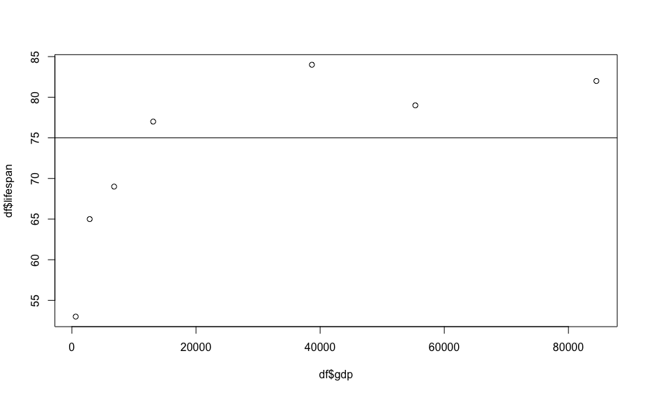
The average value of this dataset is nowhere near the most common values (1 - 20 nights), nor does it capture the fact that there are some listings available for the entire year. Punchline: a lot of rich insight is lost when taking an average, which is why a histogram is more useful for displaying distributions than bar graphs (which only show the mean).
Prettifying histograms
Let’s take a look at another variable: the price of lodging per night.
hist(df$price)
Not a very pretty plot. Since the range in prices is so wide, the default parameters for the hist() will need some tweaking.
To make this histogram prettier, first let’s manually set the number of “breaks,” i.e., the cutoff values for each bin along the x-axis.
# Calculate breaks -- make each bin one day
breaks <- seq(0,max(df$price),by=5)
hist(df$price,
breaks=breaks)
That’s better. Let’s zoom in on the most common values using xlim().
hist(df$price,
breaks=breaks,
xlim=c(0,500))
Finally, let’s improve the labels and colors.
par(mar=c(4.2,4.2,.5,.5))
hist(df$price,
breaks=breaks,
xlim=c(0,500),
xlab="Listing price ($)",
main=NULL,
col=adjustcolor("darkblue",alpha.f=.6),
border=adjustcolor("white",alpha.f=.1),
)
Interesting spikes in the histogram. Why do you think those are occurring? That is a really interesting feature of the dataset that you might never have discovered if you had not plotted your histogram.
Histograms in ggplot2
To produce a histogram of the same data in ggplot2, use the following code:
library(ggplot2)
ggplot(df, aes(x=price)) +
xlim(0,500) +
geom_histogram(binwidth=5,
fill=adjustcolor("darkblue",alpha.f=.6),
color=adjustcolor("white",alpha.f=.1)) 
ggplot2 allows you to add some other nice features to histograms, such as a smoothed “density” line:
ggplot(df, aes(x=price)) +
xlim(0,500) +
geom_histogram(binwidth=5,
fill=adjustcolor("darkblue",alpha.f=.6),
color=adjustcolor("white",alpha.f=.1),
aes(y=..density..)) +
geom_density(alpha=.1,lwd=1.5,col=adjustcolor("firebrick",alpha.f=.5))
Violin Plots
The second most valuable plot for exploring distributions is the violin plot.
ggplot(df, aes(x=room_type,
y=price)) +
geom_violin()
Violin plots are like vertical histograms. Their width indicates where most of your data are clustered, and the shapes also take the shape of a violin – hence the name. Their height shows you your data’s range. Think of a violin plot as the beautiful child of bar graphs and histograms: the best of both worlds.
A major advantage of violin plots is that they allow you two compare multiple distributions with ease. Let’s adjust our ylim() to zoom in:
ggplot(df,
aes(x=room_type,
y=price)) +
ylim(0,500) +
geom_violin()If your research question were, “Which type of listing tends to be most affordable?” think about how easy that is to answer using a plot like this!
Descriptive statistics
In the Module on Calling Functions, you have already seen some functions for summarizing the trends and variation in your data:
mean()median()sd()(standard deviation)summary()provides descriptive statistics for each column in a dataframe.
Here are a few more:
var() provides the sample variance, which is related to standard deviation:
var(df$price)
[1] 23766.1MeanCI(), from the package DescTools, provides 95% confidence intervals for the most common data distributions.
install.packages("DescTools")library(DescTools)
MeanCI(df$price)
mean lwr.ci upr.ci
154.4959 152.2326 156.7592 And here are some other useful functions that need not be introduced in detail now. You will encounter them soon.
table()Counts the number of instances of each unique value in a vector.quantile()Provides the quantiles of a dataset.ecdf()Plots the empirical cumulative distribution function for a dataset.
Review exercise
For this exercise, use this dataset on the sale prices of homes in the United States. You can download that dataset directly into R using the following code:
library(readr)
df <- readr::read_csv("https://raw.githubusercontent.com/rashida048/Datasets/master/home_data.csv")Task 1
Create a beautiful histogram of home prices included in this dataset. Only show houses that sold for less than $2 million USD.
Task 2
Create a violin plot that shows the distribution of sale prices for homes with different numbers of bedrooms.
Task 3
This task is a bit of review, and a bit of a preview to the next module.
First, create a scatter plot that depicts the relationship between the square footage of a home’s living space and its sale price. Do the same for the square footage of the home’s lot. Which square footage appears to be a better predictor of sale price?
18 Significance statistics
Learning goals
- How to interpret p-values
- How to decide which statistical test to apply to your data
- How to conduct basic significant tests in
R - How to interpret the results of those tests
p-values
We won’t go into statistical theory here. But every statistical test, at the basic level, is asking whether the patterns we observe in our data are actually meaningful. Are those perceived patterns reflecting real patterns, or is it possible to perceive those patterns when the underlying process is purely random chance?
That is what a p-value tells you: the probability that the pattern you see in your data is actually the product of random, meaningless chance. The lower the p-value, the less likely it is that the pattern is a product of chance, and the higher the chances that the pattern is real.
Researchers tend to use a p-value of 0.05 as the threshold for a meaningful, or “significant” pattern. When a statistical test returns a p-value of 0.05 or less, we consider the pattern to be statistically significant. A p-value of 0.05 means that there is a 5% chance (one in twenty) that the pattern in your data is the product of chance alone.
Please note that there is nothing magical about this number – a p-value of 0.049 is practically the same as 0.051, but only the former would be considered significant. The 0.05 threshold is just a simple heuristic – a way of simplifying your statistical results into a binary concept: significant or not.
Finally, please also note that statistical significance is a tricky thing because it is influenced by both the patterns in your data as well as by the amount of data you are working with. A larger sample size is going to allow you to identify more nuanced patterns in your data, and those patterns will achieve a lower p-value thanks simply to the number of samples you have.
Conversely, a pattern driven by meaningful real-world processes can be obscured by low sample sizes. If your sample size is too small, you may not be able to produce significant p-values even though the pattern is real.
Tests for different data types
Most data come in two general forms:
1. Categorical data represent categories. For example, we could have a variable named pet with a few discrete levels: “dog,” “cat,” etc. The types, or levels, of categorical data are also referred to as treatments. In R, categorical variables are usually referred to as factors.
2. Continuous data represent numerical values. For example, let height be a variable representing numerical values for people’s height. Note that, for the time being, we will consider integers and count data to fall within this category.
Whenever you plot data or ask a statistical question, you are combining data types in a specific way: a bar graph, for example, compares two categories (i.e., the individual bars) of numerical data (i.e., bar height). And, by grouping the data by category, you are implying that the category to which a data point belongs has some impact on its value. In other words, the value is dependent upon the category. Conversely, the value is assumed to have no impact on category. Category, therefore is the independent variable.
Each combination of data types calls for a certain type of plot and a certain type of statistical test.
Here is an overview of what we will cover below:
| Question | Independent | Dependent | Test | Plot |
|---|---|---|---|---|
| Comparing 2 datasets | Categorical | Numerical | t-test | Bar graph or histograms |
| Comparing 3 or more datasets | Categorical | ANOVA + Tukey HSD | ||
| Categorical | Categorical | Chi-square | ||
| Association / Relationship | Numerical | Numerical | Regression | Scatterplot |
Comparison tests
To practice basic statistics, we will create our own fake data.
Scenario: You are the lead author on a landmark study that investigates the portion sizes in fast food restaurants. You place 50 orders of large fries from one franchise and 50 orders from another, then weigh each order.
We can create a fake dataset by drawing numbers from random distributions:
# Set starting point for random number generator
set.seed(2)
# Franchise 1
sample1 <- rnorm(n=50, mean=1, sd=.15)
# Franchise 2
sample2 <- rnorm(n=50, mean=1.1, sd=.15)You can see that we have made these two datasets using slightly different distributions: the mean for Franchise 1 is 1.0 and the mean for Franchise 2 is 1.1. So we know the truth: that these two distributions are, in fact, slightly different. The question is whether we can conclude that they are different given the relatively small sample sizes (n=50) we are working with.
So for now, let’s pretend we don’t know what the true means of these two sample sets are. Let’s pretend that all we have done is weighed and eaten a ton of french fries, and now we want to ask some research questions about our sample data.
First, we want to know if there a difference in the amount of food you get from these two franchises? Do the two franchises give you the same amount of food (by weight)? This is a comparison question. We are asking: based on our samples, can we conclude that two things (Franchise 1 and Franchise 2) are meaningfully different?
First, Let’s look at our data with some histograms.
par(mfrow=c(2,1))
hist(sample1,
breaks=seq(0,10,by=.05),
col=adjustcolor("dark orange",alpha.f=.3),
border=NA,
main=NULL,xlab="French fries (kg)",xlim=c(0,2))
hist(sample2,
breaks=seq(0,10,by=.05),
col=adjustcolor("darkblue",alpha.f=.3),
border=NA,
main=NULL,xlab="French fries (kg)",xlim=c(0,2))
Comparison tests ask whether two distributions are different. It is often easier to gauge that difference when you superimpose one distribution on top of another (we do this by adding add=TRUE as an input in the second histogram).
hist(sample1,
breaks=seq(0,10,by=.05),
col=adjustcolor("dark orange",alpha.f=.3),
border=NA,
main=NULL,xlab="French fries (kg)",xlim=c(0,2))
hist(sample2,
breaks=seq(0,10,by=.05),
col=adjustcolor("darkblue",alpha.f=.3),
border=NA,
main=NULL,xlab="Price",xlim=c(0,2),
add=TRUE)
Okay, these two distributions certainly look a bit different, but there is also a high degree of overlap. If we lumped these data together and randomly picked a value from the pile, it would be hard to predict which franchise the data point belongs to.
To add to our uncertainty, maybe the pattern we are seeing here is just a vestige of our relatively low sample size. What if we sampled another 200 restaurants? Are we confident that we would find this same pattern?
Better do a statistical test.
Since these data are normally distributed, the test to use in this scenario is the t-test.
t.test(sample1,
sample2)
Welch Two Sample t-test
data: sample1 and sample2
t = -2.0099, df = 97.711, p-value = 0.0472
alternative hypothesis: true difference in means is not equal to 0
95 percent confidence interval:
-0.139213875 -0.000884483
sample estimates:
mean of x mean of y
1.010371 1.080420 This function provides you with a p-value. Based on this p-value, what is your answer to the research question?
Influence of sample size
To highlight the influence of sample size on your statistical results, let’s re-do the analysis above, this time with a larger sample size.
# Use same starting point as above
set.seed(2)
# Franchise 1
sample1 <- rnorm(n=500, mean=1, sd=.15)
# Franchise 2
sample2 <- rnorm(n=500, mean=1.1, sd=.15)
hist(sample1,
breaks=seq(0,10,by=.025),
col=adjustcolor("dark orange",alpha.f=.3),
border=NA,
main=NULL,xlab="French fries (kg)",xlim=c(0,2))
hist(sample2,
breaks=seq(0,10,by=.025),
col=adjustcolor("darkblue",alpha.f=.3),
border=NA,
main=NULL,xlab="Price",xlim=c(0,2),
add=TRUE)
t.test(sample1,
sample2)
Welch Two Sample t-test
data: sample1 and sample2
t = -10.39, df = 996.87, p-value < 0.00000000000000022
alternative hypothesis: true difference in means is not equal to 0
95 percent confidence interval:
-0.11899609 -0.08118775
sample estimates:
mean of x mean of y
1.009254 1.109346 The p-value is now much lower! Note that we drew our samples from the exact same underlying distributions. But, since we drew many more samples in this second round, the t-test was better able to assess the significance of the differences we were seeing between the two sample sets.
Comparing more than two groups
When you are comparing numerical data in more than two categories, you need to use an ANOVA.
Let’s say you go out and sample a third fast food franchise:
# Set starting point for random number generator
set.seed(2)
# Franchise 1
sample1 <- rnorm(n=50, mean=1, sd=.15)
# Franchise 2
sample2 <- rnorm(n=50, mean=1.1, sd=.15)
# Franchise 3
sample3 <- rnorm(n=50, mean=0.9, sd=.15)
hist(sample1,
breaks=seq(0,10,by=.025),
col=adjustcolor("dark orange",alpha.f=.3),
border=NA,
main=NULL,xlab="French fries (kg)",xlim=c(0,2))
hist(sample2,
breaks=seq(0,10,by=.025),
col=adjustcolor("darkblue",alpha.f=.3),
border=NA,
main=NULL,xlab="Price",xlim=c(0,2),
add=TRUE)
hist(sample3,
breaks=seq(0,10,by=.025),
col=adjustcolor("forestgreen",alpha.f=.3),
border=NA,
main=NULL,xlab="Price",xlim=c(0,2),
add=TRUE)
What a mess! This might be easier to read if we use a bar graph instead of layered histograms. (We will add 95% confidence intervals for each bar using the package DescTools – be sure to install this package before running this code).
install.packages("DescTools")# Get vector of bar heights
means <- c(mean(sample1),mean(sample2),mean(sample3))
# Get vector of 95% confidence intervals
library(DescTools)
lower_ci <- c(MeanCI(sample1)[2],
MeanCI(sample2)[2],
MeanCI(sample3)[2])
upper_ci <- c(MeanCI(sample1)[3],
MeanCI(sample2)[3],
MeanCI(sample3)[3])
# Create dataframe
df <- data.frame(name=paste("Franchise",1:3),
means,
lower_ci,
upper_ci)
# Most basic error bar
library(ggplot2)
ggplot(df) +
geom_bar( aes(x=name, y=means), stat="identity", fill="grey50", alpha=0.7) +
geom_errorbar( aes(x=name, ymin=lower_ci, ymax=upper_ci),
width=0.4, colour="grey30", alpha=0.9, size=1.3) +
ylab("Mean French Fries weight (kg)") +
xlab(NULL)Bar graphs are easier to read, but they do throw about a lot of information. By reducing your samples to a single number (i.e., the sample mean), you are missing out on a lot of interesting detail. Which means that, even though these bars do seem to be of different heights, we better use a statistical test to be sure that these differences are significant.
When we are comparing more than two groups, our question becomes, “Are any of these groups different from one another?”
In R, the function for conducting an ANOVA test is aov():
Df Sum Sq Mean Sq F value Pr(>F)
as.factor(franchise) 2 0.592 0.29581 10.51 0.0000542 ***
Residuals 147 4.138 0.02815
---
Signif. codes: 0 '***' 0.001 '**' 0.01 '*' 0.05 '.' 0.1 ' ' 1Our p-value is low, which means there are differences between groups. But the ANOVA doesn’t actually tell us which of the pairwise (i.e., two-way) differences are significant. For that we need a follow up test: a Tukey’s HSD test.
TukeyHSD(my_ANOVA)
Tukey multiple comparisons of means
95% family-wise confidence level
Fit: aov(formula = fries ~ as.factor(franchise), data = df_all)
$`as.factor(franchise)`
diff lwr upr p adj
2-1 0.07004918 -0.009396617 0.149494974 0.0958929
3-1 -0.08358643 -0.163032225 -0.004140635 0.0366717
3-2 -0.15363561 -0.233081404 -0.074189813 0.0000293According to this result, the only sample sets that are statistically different from each other are samples 2 and 3. This makes sense, given our low sample sizes and the innately small differences among the three underlying distributions.
Comparing categorical counts
Your colleagues have taken an interest in your fast food analyses. One of them wishes to work on an extension study regarding rates of Ketchip packet hand-outs. Is one franchise more likely to give you free Ketchup with your fries than another?
You go back to your notes and realize that you do indeed have data on ketchip handouts!
# (Well, let's fake the data here)
# Setup sample 1
# Create a list of random values between 0 and 1, the same length as sample1
set.seed(2)
randoms <- runif(n=length(sample1),min=0,max=1)
# Stage a `ketchup` vector, the same length as sample1, of all No's
ketchup <- rep("No",times=length(sample1))
# For all indices whose random number is above 0.55, change Ketchup status to Yes.
ketchup[which(randoms > .55)] <- "Yes"
df1 <- data.frame(franchise=1,ketchup)
head(df1)
franchise ketchup
1 1 No
2 1 Yes
3 1 Yes
4 1 No
5 1 Yes
6 1 Yes
# Repeat for sample 2
set.seed(3)
randoms <- runif(n=length(sample1),min=0,max=1)
ketchup <- rep("No",times=length(sample2))
ketchup[which(randoms > .65)] <- "Yes"
df2 <- data.frame(franchise=2,ketchup)
head(df2)
franchise ketchup
1 2 No
2 2 Yes
3 2 No
4 2 No
5 2 No
6 2 No
# Combine into single dataframe
study <- rbind(df1,df2)So you pass these data to your colleague and she uses them to produce this summary table:
table(study)
ketchup
franchise No Yes
1 28 22
2 39 11This 2x2 table is known as a contingency table. It summarizes the interaction of two categorical variables (Franchise ID and Ketchip status). To test for differences in ketchup handout rates with these data, we would use a different test called a Chi-squared test.
# Use the contingency table as input
cst <- chisq.test(table(study))
# Check out results
cst$p.value
[1] 0.03344526
cst$residuals
ketchup
franchise No Yes
1 -0.9502553 1.3540064
2 0.9502553 -1.3540064How to interpret:
Sincee the p-value of our test is less the 0.05, we conclude that there is indeed a difference in the ketchup handout rates between these two franchies.
The positive residuals indicate positive association: Franchise 1 is less likely to give ketchup.
The negative residuals indicate negative association: Franchise 2 is more likely to give out ketchup.
Tests of association
Another colleague of yours wants to conduct a separate follow-up study: she suspects there might be a relationship between how many fries are included in an order and the perceived saltiness of the order. Her hypothesis is that each order is given the same volume of salt. When that salt is distributed across more fries, the perceived saltiness of each individual fry declines.
You go back to your notes and realize that you do indeed have data on perceived saltiness!
# (Well, let's fake the data here)
variability <- rnorm(n=length(sample1),mean=0,sd=.2)
saltiness <- -0.25*sample1 + .6 + variability # y = mx + b + eYou pass your colleague the saltiness data associated with each sample you collected from Franchise 1. Saltiness is scored from 0 to 1.
Let’s check out this data. Since we are now exploring the relationship between two numerical variables, we visualize them with a scatter plot.
plot(saltiness ~ sample1,
ylab="French fries (kg) per order",
xlab="Hourly sales",
xlim=c(0.7,1.3),ylim=c(0,1))
This plot, with French fries on the x-axis, visually implies that saltiness is a function of French Fries weight. Therefore, saltiness is treated as the dependent variable.
Is there a significant relationship between these two variables? We can test that using a linear regression, also known as a linear model. In R, the function for computing a linear model is lm().
salt_lm <- lm(saltiness ~ sample1)Huzzah! First, let’s add this trend line to our plot:
plot(saltiness ~ sample1,
xlab="French fries (kg) per order",
ylab="Perceived saltiness",
xlim=c(0.7,1.3),ylim=c(0,1))
abline(salt_lm,col="blue",lwd=2)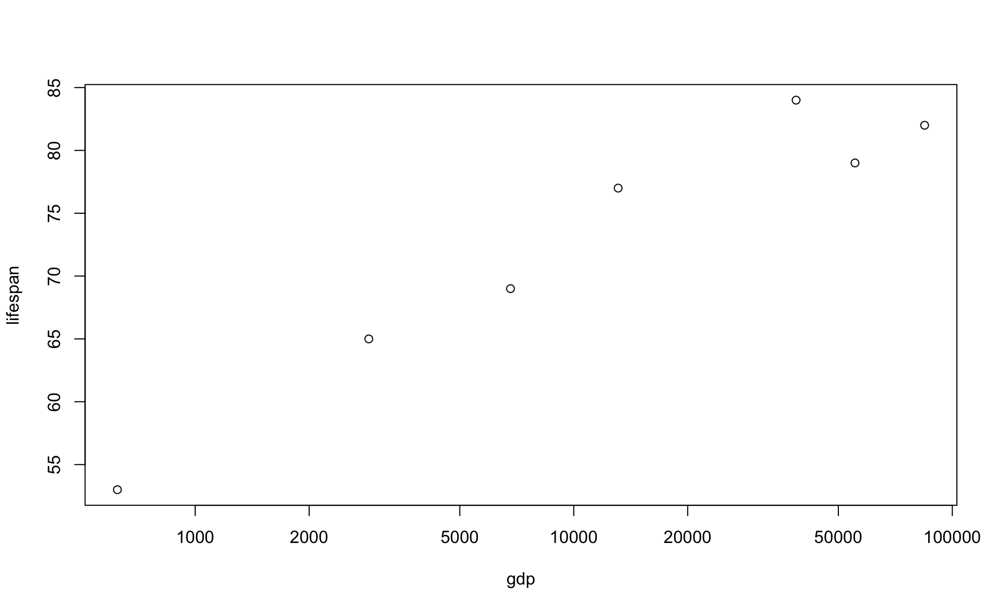
Let’s interpret the outcome of this linear regression:
summary(salt_lm)
Call:
lm(formula = saltiness ~ sample1)
Residuals:
Min 1Q Median 3Q Max
-0.43303 -0.14105 0.02311 0.15437 0.31810
Coefficients:
Estimate Std. Error t value Pr(>|t|)
(Intercept) 0.7578 0.1564 4.847 0.0000136 ***
sample1 -0.3854 0.1527 -2.524 0.015 *
---
Signif. codes: 0 '***' 0.001 '**' 0.01 '*' 0.05 '.' 0.1 ' ' 1
Residual standard error: 0.1811 on 48 degrees of freedom
Multiple R-squared: 0.1172, Adjusted R-squared: 0.09881
F-statistic: 6.373 on 1 and 48 DF, p-value: 0.01495The
CoefficientEstimateofsampleis the slope of the trendline. If that estimate were 0.00, the linear model is indicating that there is no relationship between the dependent and independent variables.Adjusted R-squaredindicates the percent of the data’s variation “explained” by the trendline. Essentially, this metric compares the average distance of each data point from the trend line to their average distance from a flat line, with a slope of 0.00.p-valueindicates the probability that there is no relationship (i.e., a slope of 0.00).
Reporting results
When you report the results of your statistical tests within your reports and figure captions, be sure to include the following information:
t-tests:
- Type of test used (i.e., t-test)
- Sample sizes of each category
- p-value
ANOVAs:
- Type of test used (i.e., ANOVA)
- Sample sizes of each category
- df (i.e., degrees of freedom)
- p-value
Chi-square tests:
- Type of test used (i.e., Chi-square)
- Sample sizes of each category
- df (i.e., degrees of freedom)
- p-value
Linear regressions:
- Type of test used (i.e., linear regression)
- Sample size
- p-value
- R-squared coefficient
For tips on writing these results statements, see the Module on Writing Style for Reports.
Review exercise
To review these concepts, we will use the same dataset from the previous module: AirBNB hosts in Amsterdam.
df <- read.csv("./data/airbnb-amsterdam.csv")Task 1
Two neighborhoods in Amsterdam, “Bos en Lommer” and “Centrum-Oost,” are among the most popular AirBnB destinations in the city. But are these two neighbourhoods equally affordable, or does one neighborhood tend to be more expensive?
(a) First, produce a single histogram with the price distributions of listings from these two neighborhoods superimposed upon one another.
library(dplyr)
hood1 <- df %>% filter(neighbourhood == "Bos en Lommer")
hood2 <- df %>% filter(neighbourhood == "Centrum-Oost")
hist(hood1$price,
breaks=seq(0,3000,by=10),
col=adjustcolor("dark orange",alpha.f=.3),
border=NA,probability=TRUE,
main=NULL,xlab="Price",xlim=c(0,1000))
hist(hood2$price,
breaks=seq(0,3000,by=10),
col=adjustcolor("darkblue",alpha.f=.3),
border=NA,probability=TRUE,
main=NULL,xlab="Price",xlim=c(0,1000),
add=TRUE)
(b) Then conduct a statistical test to answer the task’s question.
t.test(hood1$price,hood2$price)
Welch Two Sample t-test
data: hood1$price and hood2$price
t = -13.331, df = 2226.1, p-value < 0.00000000000000022
alternative hypothesis: true difference in means is not equal to 0
95 percent confidence interval:
-65.10065 -48.40420
sample estimates:
mean of x mean of y
123.2717 180.0242 (c) Now properly interpret the test, and write a complete results statement.
Task 2
Which neighborhood is more likely to offer a Private room instead of an Entire home/apt?
(a) First, produce a single bar graph with the number of room types offered in each neighborhood.
(b) Then conduct a statistical test to answer the task’s question.
df1 <-data.frame(hood=hood1$neighbourhood,room=hood1$room_type)
df2 <-data.frame(hood=hood2$neighbourhood,room=hood2$room_type)
df_all <- rbind(df1,df2)
df_all <- df_all %>% filter(room %in% c("Private room","Entire home/apt"))
table(df_all)
room
hood Entire home/apt Hotel room
Bijlmer-Centrum 0 0
Bijlmer-Oost 0 0
Bos en Lommer 876 0
Buitenveldert - Zuidas 0 0
Centrum-Oost 1071 0
Centrum-West 0 0
De Aker - Nieuw Sloten 0 0
De Baarsjes - Oud-West 0 0
De Pijp - Rivierenbuurt 0 0
Gaasperdam - Driemond 0 0
Geuzenveld - Slotermeer 0 0
IJburg - Zeeburgereiland 0 0
Noord-Oost 0 0
Noord-West 0 0
Oostelijk Havengebied - Indische Buurt 0 0
Osdorp 0 0
Oud-Noord 0 0
Oud-Oost 0 0
Slotervaart 0 0
Watergraafsmeer 0 0
Westerpark 0 0
Zuid 0 0
room
hood Private room Shared room
Bijlmer-Centrum 0 0
Bijlmer-Oost 0 0
Bos en Lommer 133 0
Buitenveldert - Zuidas 0 0
Centrum-Oost 402 0
Centrum-West 0 0
De Aker - Nieuw Sloten 0 0
De Baarsjes - Oud-West 0 0
De Pijp - Rivierenbuurt 0 0
Gaasperdam - Driemond 0 0
Geuzenveld - Slotermeer 0 0
IJburg - Zeeburgereiland 0 0
Noord-Oost 0 0
Noord-West 0 0
Oostelijk Havengebied - Indische Buurt 0 0
Osdorp 0 0
Oud-Noord 0 0
Oud-Oost 0 0
Slotervaart 0 0
Watergraafsmeer 0 0
Westerpark 0 0
Zuid 0 0
cst <- chisq.test(table(df_all))
cst$p.value
[1] NaN
cst$residuals
room
hood Entire home/apt Hotel room
Bijlmer-Centrum
Bijlmer-Oost
Bos en Lommer 3.003223
Buitenveldert - Zuidas
Centrum-Oost -2.485603
Centrum-West
De Aker - Nieuw Sloten
De Baarsjes - Oud-West
De Pijp - Rivierenbuurt
Gaasperdam - Driemond
Geuzenveld - Slotermeer
IJburg - Zeeburgereiland
Noord-Oost
Noord-West
Oostelijk Havengebied - Indische Buurt
Osdorp
Oud-Noord
Oud-Oost
Slotervaart
Watergraafsmeer
Westerpark
Zuid
room
hood Private room Shared room
Bijlmer-Centrum
Bijlmer-Oost
Bos en Lommer -5.729196
Buitenveldert - Zuidas
Centrum-Oost 4.741742
Centrum-West
De Aker - Nieuw Sloten
De Baarsjes - Oud-West
De Pijp - Rivierenbuurt
Gaasperdam - Driemond
Geuzenveld - Slotermeer
IJburg - Zeeburgereiland
Noord-Oost
Noord-West
Oostelijk Havengebied - Indische Buurt
Osdorp
Oud-Noord
Oud-Oost
Slotervaart
Watergraafsmeer
Westerpark
Zuid (c) Now properly interpret the test, and write a complete results statement.
Task 3
Do listings with more reviews tend to be more expensive? For this analysis, focus on listings priced less than $500 and less than 400 reviews.
(a) First, produce a single plot that properly visualizes the data.
dfsub <- df[df$price <= 500,]
dfsub <- dfsub[dfsub$number_of_reviews <= 400,]
plot(price ~ number_of_reviews,
data=dfsub,
cex=.4,pch=16,
col=adjustcolor("darkblue",alpha.f=.3),
ylim=c(0,500))
(b) Then conduct a statistical test to answer the task’s question.
price_lm <- lm(dfsub$price ~ dfsub$number_of_reviews)(c) Add this trendline to your plot.
plot(price ~ number_of_reviews,
data=dfsub,
cex=.4,pch=16,
col=adjustcolor("darkblue",alpha.f=.3),
ylim=c(0,500))
abline(price_lm,col=adjustcolor("dark orange",alpha.f=.6),lwd=4)(d) Now properly interpret the test, and write a complete results statement.
summary(price_lm)
Call:
lm(formula = dfsub$price ~ dfsub$number_of_reviews)
Residuals:
Min 1Q Median 3Q Max
-150.69 -50.69 -18.84 31.53 387.92
Coefficients:
Estimate Std. Error t value Pr(>|t|)
(Intercept) 150.69465 0.65775 229.10 <0.0000000000000002 ***
dfsub$number_of_reviews -0.20649 0.01334 -15.48 <0.0000000000000002 ***
---
Signif. codes: 0 '***' 0.001 '**' 0.01 '*' 0.05 '.' 0.1 ' ' 1
Residual standard error: 78.02 on 17552 degrees of freedom
Multiple R-squared: 0.01347, Adjusted R-squared: 0.01341
F-statistic: 239.6 on 1 and 17552 DF, p-value: < 0.0000000000000002218.0.1 Group activity using the titanic dataset
library(readr)
library(dplyr)
df <- read_csv('https://raw.githubusercontent.com/databrew/intro-to-data-science/main/data/deaths.csv')
Error in open.connection(con, "rb"): Timeout was reached: [raw.githubusercontent.com] Resolving timed out after 10000 millisecondsDid women pay more than men (t-test)?
Make a variable called
rich. It should indicate (boolean) whether someone was first class or not.How many rich people were there?
Did rich people pay more than poor people (t.test)?
Is there an association between being rich and sex (chi-squared test)?
Adjusting for passenger class, did women pay more than men?
Use
dplyrverbs to get the number of survivors and total people among both men and women. With the result, run a chi-squared test.Make a basic linear model in which the outcome “Survived” is a function of “Sex.”
Adjusting for passenger class, did women die more than men?
(PART) Essential R skills
19 Joining datasets
Learning goals
- How to join together two related datasets efficiently in
R
Joining: the basics
It’s not unusual to have data for a project spread out across multiple datasets. The data are all related, but the fact that they are ‘packaged’ separately into different files can things difficult. To work with such relational data in R, you eventually need to merge – or join – them into a single dataframe.
For example, say you are studying the economics of professional basketball. In one dataframe, df1, you have the net worth of famous players, in millions USD…
player <- c("LeBron","Mugsy","Shaq","Jordan","Hakeem","Kobe","Stockton")
worth <- c(500, 14, 400, 1600, 200, 600,40)
df1 <- data.frame(player,worth)
df1
player worth
1 LeBron 500
2 Mugsy 14
3 Shaq 400
4 Jordan 1600
5 Hakeem 200
6 Kobe 600
7 Stockton 40…and in a second dataframe, df2, you have their height.
player <- c("Jordan","Shaq","Magic","Hakeem","Stockton","Mugsy","LeBron")
height <- c(78,85,81,84,73,63,81)
df2 <- data.frame(player,height)
df2
player height
1 Jordan 78
2 Shaq 85
3 Magic 81
4 Hakeem 84
5 Stockton 73
6 Mugsy 63
7 LeBron 81Is there a correlation between these players’ net worth and their height? To answer this question you need to join these two datasets together. But the two datasets don’t contain the exact same roster of players, and the players are not in the same order. Hmm. Is there an efficient way to join these two datasets?
Yes! Thanks to the family of join() functions from the package dplyr.
install.packages("dplyr")These join() functions relate two dataframes together according to a common column name. In order for these functions to work, each dataframe has to have a column of the same name. In the case of df1 and df2, that shared column is player.
There are four join() functions you should know how to use:
left_join() joins the two datasets together, keeping all rows in the first dataframe you feed it.
left_join(df1,df2,by="player")
player worth height
1 LeBron 500 81
2 Mugsy 14 63
3 Shaq 400 85
4 Jordan 1600 78
5 Hakeem 200 84
6 Kobe 600 NA
7 Stockton 40 73Notice that none of the players unique to df2 made it into this output; only players in df1 (i.e., the left of the two dataframes listed) remain. Also notice that any player from df1 who was not in df2 has an NA under the column worth. That is how these join() functions work: it fills in the data where it can, and leaves NAs where it can’t.
right_join() keeps all rows in the second dataframe you feed it:
right_join(df1,df2,by="player")
player worth height
1 LeBron 500 81
2 Mugsy 14 63
3 Shaq 400 85
4 Jordan 1600 78
5 Hakeem 200 84
6 Stockton 40 73
7 Magic NA 81full_join() keeping all rows in both dataframes:
full_join(df1,df2,by="player")
player worth height
1 LeBron 500 81
2 Mugsy 14 63
3 Shaq 400 85
4 Jordan 1600 78
5 Hakeem 200 84
6 Kobe 600 NA
7 Stockton 40 73
8 Magic NA 81Finally, inner_join() keeps only the rows that are common to both dataframes:
inner_join(df1,df2,by="player")
player worth height
1 LeBron 500 81
2 Mugsy 14 63
3 Shaq 400 85
4 Jordan 1600 78
5 Hakeem 200 84
6 Stockton 40 73So, to answer our research question about the relationship between player height and net worth, we can now join these data sets and make a nice plot:
df3 <- full_join(df1,df2,by="player")
plot(df3$worth ~ df3$height,
ylim=c(0,1700),xlim=c(60,90),
pch=16,col="dark orange",
xlab="Height (inches)",
ylab="Net worth (millions USD)")Hmm. Looks like we have an outlier!
Review exercise
This review exercise will involve both the joining skills you learned above as well as many of the skills learned in prior modules. But don’t worry: as with every exercise in this book, every puzzle here can be solved using the skills you have learned in prior modules.
Scenario: A sailing expedition conducted a survey of the whales in the fjords of British Columbia, Canada. That research produced two datasets:
env <- read.csv("./data/whales-environment.csv") ; head(env)
id species year distance seafloor temperature salinity thermocline
1 20140811103 HW 2014 44.1021 352.881 13.49104 25.75687 9.6325
2 20140811104 HW 2014 44.2729 363.563 13.49104 25.75687 9.6325
3 20140811106 HW 2014 46.7883 361.660 13.97642 25.14305 9.7859
4 20140812102 HW 2014 44.9049 317.864 14.11392 22.26935 9.7689
5 20140812104 HW 2014 44.8370 327.717 14.12843 22.21240 9.7689
6 20140812103 HW 2014 44.6589 353.749 14.17754 22.08326 9.7426
stratification euphotic.depth chlorophyll
1 5.0603 18.2951 81.8442
2 5.0603 18.2951 81.8442
3 5.5067 17.2179 66.1236
4 5.2032 18.0307 76.0000
5 5.2032 18.0307 76.0000
6 5.2039 18.0093 75.9543
dive <-read.csv("./data/whales-dives.csv") ; head(dive)
id species behavior prey.volume prey.depth dive.time surface.time
1 20140811106 HW FEED 6.914610 120.76 351.00 237
2 20140812104 HW FEED 7.854762 79.02 281.00 87
3 20140812107 HW FEED 7.385667 96.92 300.25 80
4 20140812109 FW FEED 6.626298 105.87 366.00 189
5 20140812131 HW OTHER 6.356474 123.95 357.00 112
6 20140812140 FW FEED 3.820782 125.51 408.00 182
blow.interval blow.number
1 26.833 10.000
2 14.412 6.667
3 16.000 6.000
4 16.273 12.000
5 25.250 6.000
6 18.789 11.000Each row in these dataframes represent a close encounter with a whale (either a humpback whale, HW, or a fin whale, FW).
The env dataset provides details about the habitat in which the whale was found, such as seafloor depth and the amount of chlorophyll in the water (a proxy for productivity).
The dive dataset provides measurements of whale foraging behaviors, such as dive.time and the number of breaths at the surface (blow.number), as well as the quality of prey in the area (prey.volume and prey.depth).
Note that these two dataframes are linked by the id column, which is a unique code for each whale encounter.
head(dive$id)
[1] 20140811106 20140812104 20140812107 20140812109 20140812131 20140812140head(env$id)
[1] 20140811103 20140811104 20140811106 20140812102 20140812104 20140812103Also note that some ids can be found in both dataframes. These are the encounters for which we have both foraging behavior data as well as environmental data.
Task 1. Summarize your dataset.
Write the necessary code and fill in the
A total of BLANK whale encounters were recorded on BLANK separate days in the years BLANK - BLANK. BLANK encounters were with humpback whales (BLANK % of all encounters), and BLANK were with fin whales (BLANK %). Foraging behavior was recorded in BLANK % of encounters (BLANK % of humpback whale encounters, and BLANK % of fin whale encounters).
Task 2. Research question: Do these two species prefer different seafloor depths?
First, create a nicely formatted histogram that portrays the data relevant to this question.
par(mar=c(4.5,4.5,3,1))
hist(env$seafloor[env$species=="FW"],
xlab="Seafloor depth",
main=NULL,
prob=TRUE,
xlim=c(0,800),
breaks=seq(0,800,length=30),
border=NA,
col=adjustcolor("firebrick",alpha.f=.4))
hist(env$seafloor[env$species=="HW"],
xlim=c(0,800),
breaks=seq(0,800,length=30),
border=NA,
col=adjustcolor("darkblue",alpha.f=.4),
prob=TRUE,
add=TRUE)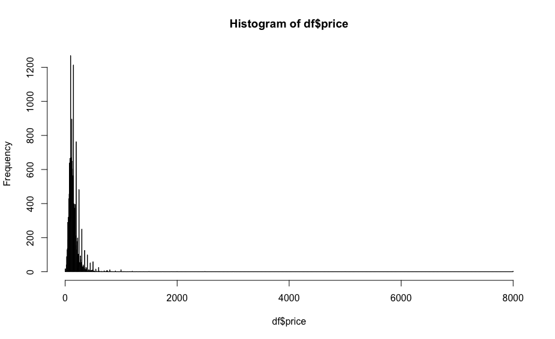
Provide the code to test this research question statistically, then write a results statement below.
t.test(x=env$seafloor[env$species=="FW"],
y=env$seafloor[env$species=="HW"])
Welch Two Sample t-test
data: env$seafloor[env$species == "FW"] and env$seafloor[env$species == "HW"]
t = 4.7677, df = 78.011, p-value = 0.000008493
alternative hypothesis: true difference in means is not equal to 0
95 percent confidence interval:
52.84081 128.60877
sample estimates:
mean of x mean of y
445.7157 354.9909 Task 3. Another research question: Is prey volume correlated to chlorophyll concentration?
Whales eat tiny shrimp-like critters named krill, and krill eat tiny organisms called phytoplankton. Chlorophyll is a proxy measurement for the amount of phytoplankton in the area. Based on these datasets, how good are krill at congregating in areas of high chlorophyll concentration?
First, prepare a plot to visualize what you will be comparing:
hwe <- env[env$species=="HW",] ; head(hwe)
id species year distance seafloor temperature salinity thermocline
1 20140811103 HW 2014 44.1021 352.881 13.49104 25.75687 9.6325
2 20140811104 HW 2014 44.2729 363.563 13.49104 25.75687 9.6325
3 20140811106 HW 2014 46.7883 361.660 13.97642 25.14305 9.7859
4 20140812102 HW 2014 44.9049 317.864 14.11392 22.26935 9.7689
5 20140812104 HW 2014 44.8370 327.717 14.12843 22.21240 9.7689
6 20140812103 HW 2014 44.6589 353.749 14.17754 22.08326 9.7426
stratification euphotic.depth chlorophyll
1 5.0603 18.2951 81.8442
2 5.0603 18.2951 81.8442
3 5.5067 17.2179 66.1236
4 5.2032 18.0307 76.0000
5 5.2032 18.0307 76.0000
6 5.2039 18.0093 75.9543
hwd <- dive[dive$species=="HW",] ; head(hwd)
id species behavior prey.volume prey.depth dive.time surface.time
1 20140811106 HW FEED 6.914610 120.76 351.00 237
2 20140812104 HW FEED 7.854762 79.02 281.00 87
3 20140812107 HW FEED 7.385667 96.92 300.25 80
5 20140812131 HW OTHER 6.356474 123.95 357.00 112
7 20140813105 HW FEED 7.472343 104.13 365.00 52
8 20140813107 HW FEED 3.261088 100.19 338.00 20
blow.interval blow.number
1 26.833 10.000
2 14.412 6.667
3 16.000 6.000
5 25.250 6.000
7 18.610 4.500
8 33.322 1.000
nrow(hwe)
[1] 446
hwe <- hwe[hwe$id %in% hwd$id,]
nrow(hwe) ; nrow(hwd)
[1] 89
[1] 89
hwe <- hwe[order(hwe$id),]
hwd <- hwd[order(hwd$id),]
hwd$chl <- hwe$chlorophyll
par(mar=c(4.5,4.5,3,1))
plot(hwd$prey.volume ~ hwd$chl,
xlab="Chlorophyll concentration",
ylab="Prey volume",
pch=16,
cex=.8)
hwlm <- lm(hwd$prey.volume ~ hwd$chl)
abline(hwlm,col="firebrick",lwd=2)Now carry out your statistical test.
summary(hwlm)
Call:
lm(formula = hwd$prey.volume ~ hwd$chl)
Residuals:
Min 1Q Median 3Q Max
-4.4931 -1.2639 0.3534 1.3358 2.5978
Coefficients:
Estimate Std. Error t value Pr(>|t|)
(Intercept) 5.027405 0.415675 12.10 <0.0000000000000002 ***
hwd$chl 0.008340 0.003723 2.24 0.0276 *
---
Signif. codes: 0 '***' 0.001 '**' 0.01 '*' 0.05 '.' 0.1 ' ' 1
Residual standard error: 1.682 on 87 degrees of freedom
Multiple R-squared: 0.05453, Adjusted R-squared: 0.04366
F-statistic: 5.018 on 1 and 87 DF, p-value: 0.0276320 Writing functions
Learning goals
- Be able to write your own functions
- Be able to source your own functions from separate R files
- Be able to use functions to make your work more efficient, effective, and organized
First steps
You’ve already used dozens of functions during your learning in R so far. As you start applying R to your own projects, you will inevitably encounter a puzzle that could be solved by a custom function you write yourself. This module shows you how.
As explained in the Calling Functions module, most functions have three key components:
- one or more inputs,
- a process that is applied to those inputs, and
- an output of the result.
When you define your own custom function, these are the three pieces you must be sure to include.
Here is a basic example:
my_function <- function(x){
y <- 1.3*x + 10
return(y)
}Now use your function:
my_function(x=2) # example 1
[1] 12.6
my_function(x=4) # example 2
[1] 15.2Let’s break this down.
my_functionis the name you are giving your function. It is the command you will use to call your function.- The
function()command is what you use to define a function. xis the variable you are using to represent your input.y <- 1.3x + 10is the process that you are applying to your input.return(y)is the command you use to define what the function’s output will be.
Note that you are not required to write out x=2 in full when you are calling your function. Just providing 2 can also work:
my_function(2)
[1] 12.6Exercise 1
Define your own basic function and run it to make sure it works.
Next steps
Multiple inputs
You can define a function with multiple inputs. Just separate each input with a comma.
To demonstrate this, let’s modify the function above to allow you to define any linear regression you wish:
my_function <- function(x,a,b){
y <- a*x + b
return(y)
}Now call your function:
my_function(x=2,a=1.3,b=10) # example 1
[1] 12.6
my_function(x=4,a=5,b=100) # example 2
[1] 120Note that you do not need to write out the name of each input, as long as you provide inputs in the correct order.
my_function(2, 1.3, 10) # example 1
[1] 12.6
my_function(4, 5, 100) # example 2
[1] 120But note that it is usually best practice to name each input in your function call, to prevent the possibility of any confusion or mistakes. Also, when you name each input you can provide inputs in whatever order you wish:
my_function(x=2, a=1.3, b=10)
[1] 12.6
my_function(a=1.3, b=10, x=2) # different inout order, same output value
[1] 12.6Providing defaults for inputs
Just as R’s base functions include default values for some inputs (think na.rm=FALSE for mean() and sd()), you can define defaults in your own functions.
This version of my_function includes default values for inputs a and b.
my_function <- function(x,a=1.3,b=10){
y <- a*x + b
return(y)
}When you provide default values, you no longer need to specify those inputs in your function call:
my_function(x=2)
[1] 12.6NULL as a default
Setting the default value for an input to NULL can be useful in certain use cases. For example, let’s say that if b is not defined by the user, you want its value to be set to five times the value of x.
my_function <- function(x,a=1.3,b=NULL){
# Handle input `b`
if(is.null(b)){
b <- x*5
print(paste("b was NULL! Setting its value to ", b))
}
# Now perform process
y <- a*x + b
return(y)
}In this function, a conditional statement is used – if(is.null(b)){ ... } – to handle the input b when the user does not specify a value for it. When b is NULL, the logical test is.null(b) will be TRUE, which will trigger the conditional statement and case b to be defined as x*5. Conditional statements will be convered in detail in the next modules.
Try running the function with and without providing a value for b.
my_function(x=2,b=5)
[1] 7.6
my_function(x=2)
[1] "b was NULL! Setting its value to 10"
[1] 12.6Conditional statements such as if(is.null(x)){ ... } or if(is.na(x)){ ... } will be helpful in dealing with all the possible values that a user can pass to your custom functions.
Complex inputs
You can pass vectors, dataframes, and any other data structure as inputs in your own custom functions. For example:
my_input <- 1:20
my_function(x=my_input,a=1.2,b=10)
[1] 11.2 12.4 13.6 14.8 16.0 17.2 18.4 19.6 20.8 22.0 23.2 24.4 25.6 26.8 28.0
[16] 29.2 30.4 31.6 32.8 34.0Complex function outputs
At some point you will want multiple objects to be returned by your function. For example, perhaps you want both y and b to be returned now that you can define b according to the value of x.
Unfortunately, the return() command does not let you include multiple objects. return(y,b) will not work. To make it work, you have to place your output objects within a single object, such as a vector, dataframe, or list.
Here is a modification of my_function() that allows multiple outputs:
my_function <- function(x,a=1.3,b=NULL){
# Handle input `b`
if(is.null(b)){
b <- x*5
}
# Now perform process
y <- a*x + b
output <- c("y"=y,"b"=b)
return(output)
}Now my_function() works like this:
my_function(x=5)
y b
31.5 25.0 To get the value of just y or just b, you can treat the output just like any other vector:
my_function(x=5)[1]
y
31.5
my_function(x=5)[2]
b
25 Adding plots
Plots can be included in the function commands just as in any other context:
my_function <- function(x,a=1.3,b=10){
y <- a*x + b
plot(y ~ x, type="b")
return(y)
}my_input <- 1:20
my_function(x=my_input)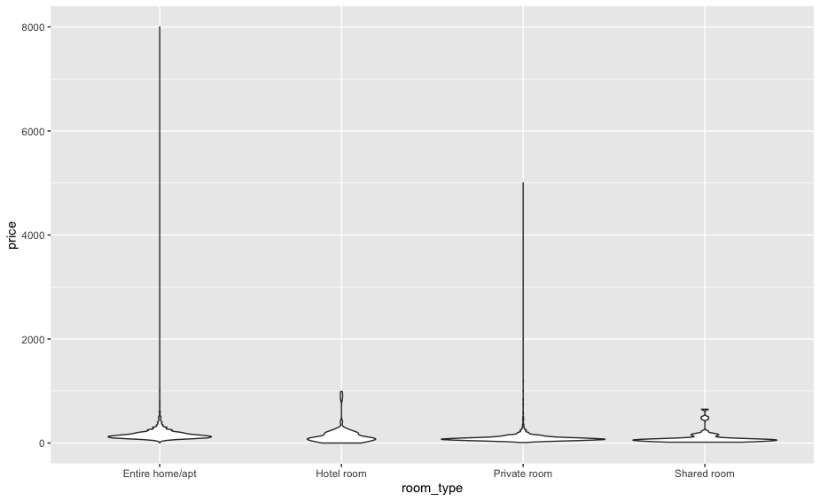
[1] 11.3 12.6 13.9 15.2 16.5 17.8 19.1 20.4 21.7 23.0 24.3 25.6 26.9 28.2 29.5
[16] 30.8 32.1 33.4 34.7 36.0Adding plots to functions can be super useful if you want to make multiple plots with the same formatting specifications. Rather than retyping the same long plot commands multiple times, just write a single function and call the function as many times as you wish.
Let’s add some fancy formatting to our plot. Note that we will modify the name of the function to make it more descriptive and helpful. The lm in plot_my_lm stands for linear model, which is what is being defined with the y=ax+b equation.
plot_my_lm <- function(x,a=1.3,b=10,plot_only=TRUE){
# Process
y <- a*x + b
# Plot
par(mar=c(4.2,4.2,3,.5)) # set plot margins
plot(y ~ x, type="o",axes=FALSE,ann=FALSE,pch=16,col="firebrick",xlim=c(-20,20),ylim=c(-20,20)) # define basic plot
title(main=paste("y =",a,"x +",b)) # print a dynamic main title
title(xlab="x",ylab="y") # print axis labels
axis(1) # print the X axis
axis(2,las=2) # print the Y axis and turn its labels right-side-up
abline(h=0,v=0,col="grey70") # add grey lines indicating x=0 and y=0
# Return
if(plot_only==FALSE){
return(y)
}
}Note that we added a parameter, plot_only. When it is set to TRUE, the function will not return any numbers.
Now let’s call this fancy function a bunch of times:
my_input <- -20:20 # define a common x input value
par(mfrow=c(3,2)) # stage a multi-paned plot
plot_my_lm(x=my_input,a=2,b=15)
plot_my_lm(x=my_input,a=1,b=10)
plot_my_lm(x=my_input,a=.5,b=5)
plot_my_lm(x=my_input,a=0,b=0)
plot_my_lm(x=my_input,a=-1,b=-5)
plot_my_lm(x=my_input,a=-2,b=15)Think about how many lines of code would have been needed to write out all of these fancy plots if you did not use a custom function! Think about how cluttered and dizzying your code would look! And think about how many opportunities for errors and inconsistencies there would have been! That is the advantage of writing your own functions: it makes your work more efficient, more organized, and less prone to errors.
Another major advantage of this approach comes into play when you decide you want to tweak the formatting of your plot. Rather than going through each plot(...) command and modifying the inputs in each one, when you write a custom plotting function you just have to make those changes once. Again, using a custom function saves you time and removes the possibility of inconsistencies or mistakes in the plots you are creating.
Exercise 2
Modify the most recent version of plot_my_lm above such that you can specify the color for the plotted line as an input in the function. Then reproduce the multi-paned plot using a different color in each plot. (Here is a good reference for color options in R).
Sourcing functions
As you advance in your coding, you will likely be writing multiple custom functions within a single R script. It is usually useful to group these functions into the same section of code near the top of your script.
But for even better script organization and simplification, you should source your functions from a separate R script. This means placing your function code in a separate R script and calling that file from the script in which you are carrying out your analyses. In addition to simplifying your analysis script, keeping your functions in a separate file allows them to be shared or sourced from any number of other scripts, which further organizes and simplifies your project’s code and increases the reproducibility of your work.
Here is how sourcing functions can work:
Open a new
Rscript. Save it asfunctions.Rand save it in the same working directory as the script you are using to work through this module.Copy and paste the
plot_my_lm()function into yourfunctions.Rscript. Save that script to ensure your code is safe.Now remove the code defining
plot_my_lm()from your moduleRscript.In its place, type this command:
source("functions.R")This command tells R to run the code in functions.R and store the objects and outputs from it in its active memory. You can now call plot_my_lm() from your module script.
Exercise 3
Carry out the above instructions to ensure that you know how to source a function from a separate R script.
Review assignment: Baby names over time

In this exercise, you will investigate annual trends in the prevalence of six names for babies born in the United States.
Step 1. Decide upon five names of interest to you, in addition to your own. Create a vector of these six names.
Step 2. Install and load the package babynames, which includes the names of each child born in the United States from 1880 to 2017, according to the Social Security Administration.
Step 3. Make an object named bn like this: bn <- babynames::babynames.
Step 4. Before writing any functions, do some basic exploration with this dataset.
- How many different names have been used since 1880?
- What is the most common name (proportionally) ever given to female babies?
- To male babies?
- What was the most common name in 2017?
Step 5. Write a function that takes any name and plots its proportional prevalence from 1880 to 2017. Format the plot beautifully. Provide the name as the title of the plot.
Step 6. Include an input that allows the user to specify the y axis range. If that input is set to NULL, the function should just use the maximum value contained in the data itself, scaled by 1.2 to make the plot prettier. Always use 0 as the lower bound of the y axis.
Step 7. Create a multi-pane plot containing six subplots, one for each of your names of interest.
Step 8. Create a function called first_letter. This should take any vector as an argument and return the first letter only. You will need to use the substr function (look it up).
Step 9. Use your first_letter function to make a new variable in the babynames dataset called fl. This should be the first letter of all names.
Step 10. What was the most popular first letter of boys names in 1900?
Step 11. What was the least popular first letter of girls names in 2017?
Step 12. Make a function called letter_plot. This should take two arguments, letter and m_or_f, and then create a plot showing the popularity of that letter for the letter/sex combination inputted over time.
Step 13. Make a function called letter_compare. This should take two arguments: y (the year) and return_table (logical/boolean, whether or not to return a table). If return_table is FALSE, the function should return a plot. Otherwise, a table. In either case, it should show the popularity of all letters for the year in question.
21 for loops
Learning goals
- What
forloops are, and how to use them yourself - How to use
forloops for plots that are tricky but super cool. - How to use
forloops to summarize subgroups in your data - How to use nested
forloops
Basics
A for loop is a super powerful coding tool. In a for loop, R loops through a chunk of code for a set number of repititions.
A super basic example:
x <- 1:5
for(i in x){
print(i)
}
[1] 1
[1] 2
[1] 3
[1] 4
[1] 5Here’s an example of a pretty useless for loop:
for(i in 1:5){
print("I'm just repeating myself.")
}
[1] "I'm just repeating myself."
[1] "I'm just repeating myself."
[1] "I'm just repeating myself."
[1] "I'm just repeating myself."
[1] "I'm just repeating myself."This code is saying:
- For each iteration of this loop, step to the next value in x (first example) or 1:5 (second example).
- Store that value in an object i,
- and run the code inside the curly brackets.
- Repeat until the end of x.
Look at the basic structure:
- In thefor( ) parenthetical, you tell R what values to step through (x), and how to refer to the value in each iteration (i).
- Within the curly brackets, you place the chunk of code you want to repeat.
Another basic example, demonsrating that you can update a variable repeatedly in a loop.
x <- 2
for(i in 1:5){
x <- x*x
print(x)
}
[1] 4
[1] 16
[1] 256
[1] 65536
[1] 4294967296Another silly example:
professors <- c("Keri","Deb","Ken")
for(x in professors){
print(paste0(x," is pretty cool!"))
}
[1] "Keri is pretty cool!"
[1] "Deb is pretty cool!"
[1] "Ken is pretty cool!"Exercise 1
Use this space to practice the basics of for loop formatting.
A. First, create a vector of names (add at least 3)
# Add your names to this vector
famous.names <- c("Lady Gaga","David Haskell","Tom Cruise")B. Using the examples above as a guide, create a for loop that prints the same silly statement about each of these names.
# Do your coding here
for(i in famous.names){
print(paste0(i," has cooties!"))
}
[1] "Lady Gaga has cooties!"
[1] "David Haskell has cooties!"
[1] "Tom Cruise has cooties!"C. It is usually best practice to write the body of your loop first, test it to make sure it works, then wrap it in a for loop. Use the code chunk below to practice that workflow. Complete each step in the order provided. (This may feel like hand-holding, but this practice will pay off when you dive into more complicated loops)
for loops in plots
These silly examples above do a poor job of demonstrating how powerful a for loop can be. You can use for loops with data to do really cool things with relatively simple code.
Thinking in for loops, however, can take some getting used to. Learning how to design code with for loops is one of the most important milestones on your way to thinking like a data scientist.
Efficient multi-panel plots
For example, a for loop can be a very efficient way of making multi-panel plots.
Let’s use a for loop to get a quick overview of the variables included in the airquality dataset built into R.
data(airquality)
head(airquality)
Ozone Solar.R Wind Temp Month Day
1 41 190 7.4 67 5 1
2 36 118 8.0 72 5 2
3 12 149 12.6 74 5 3
4 18 313 11.5 62 5 4
5 NA NA 14.3 56 5 5
6 28 NA 14.9 66 5 6Looks like the first four columns would be interesting to plot.
par(mfrow=c(2,2)) # Setup a multi-panel plot # format = c(number of rows, number of columns)
par(mar=c(4.5,4.5,1,1)) # Set plot margins
# Loop through the first four columns ...
for(i in 1:4){
y <- airquality[,i] # Select data in column i
var.name <- names(airquality)[i] # Get name of that column
plot(y,xlab="Day",ylab=var.name,pch=16) # Plot data
}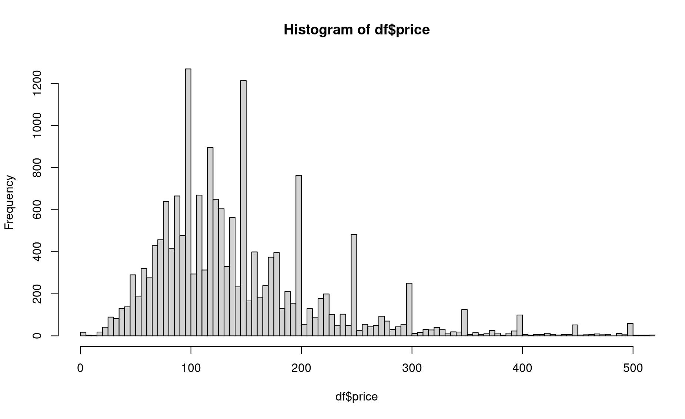
par(mfrow=c(1,1)) # restore the default single-panel plotUsing for loops to plot subgroups of data
for loops are also useful for plotting data in tricky ways. Let’s use a different built-in dataset, that shows the performance of various car make/models.
data(mtcars)
head(mtcars)
mpg cyl disp hp drat wt qsec vs am gear carb
Mazda RX4 21.0 6 160 110 3.90 2.620 16.46 0 1 4 4
Mazda RX4 Wag 21.0 6 160 110 3.90 2.875 17.02 0 1 4 4
Datsun 710 22.8 4 108 93 3.85 2.320 18.61 1 1 4 1
Hornet 4 Drive 21.4 6 258 110 3.08 3.215 19.44 1 0 3 1
Hornet Sportabout 18.7 8 360 175 3.15 3.440 17.02 0 0 3 2
Valiant 18.1 6 225 105 2.76 3.460 20.22 1 0 3 1Let’s say we want to see how gas mileage is affected by the number of cylinders a car has. It would be nice to create a plot that shows the raw data as well as the mean mileage for each cylinder number.
# Let's see how many different cylinder types there are in the data
ucyl <- unique(mtcars$cyl) ; ucyl
[1] 6 4 8
# Let's make an empty plot
plot(1,type="n", # tell R not to draw anything
xlim=c(2,10),ylim=c(0,50),
xlab="Number of cylinders",
ylab="Gas mileage (mpg)")
# Write your for loop here to add the actual data
i=ucyl[1] # It's always good to use a known value of i as you build up your for loop
for(i in ucyl){ # Usually helpful to write this line LAST.
# i.e., write body of loop first, test it, then wrap it in a loop.
# Subset the dataframe according to number of cylinders
cari <- mtcars[mtcars$cyl==i,]
# Plot the raw data
points(x=cari$cyl,y=cari$mpg,col="grey")
# Superimpose the mean on top
points(x=i,y=mean(cari$mpg),col="black",pch="-",cex=5,)
}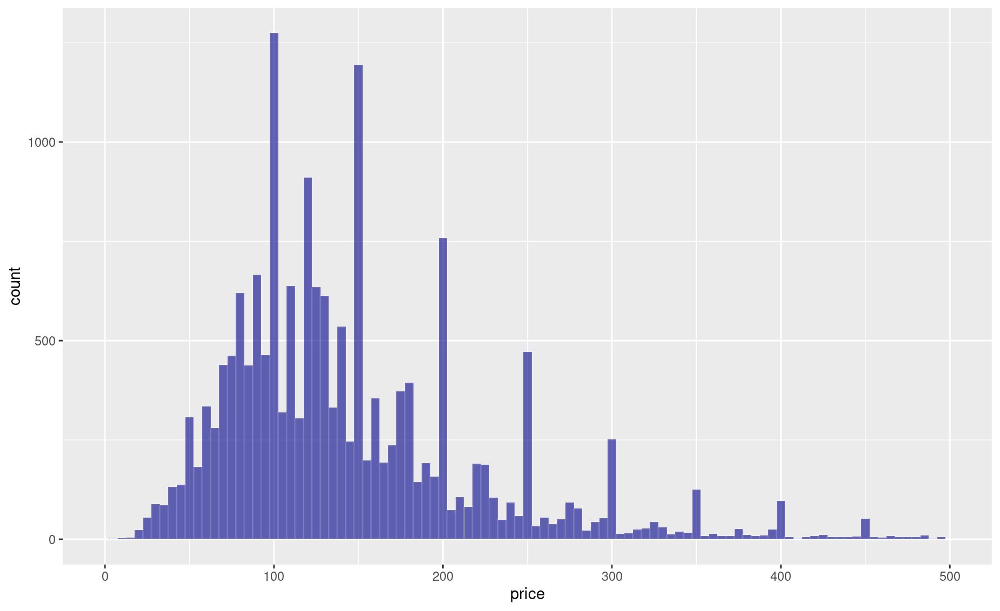
Exercise 3
Now try to do something similar on your own with the airquality dataset. Use for loops to create a plot with Month on the x axis and Temperature on the y axis. On this plot, depict all the temperatures recorded in each month in the color grey, then superimpose the mean temperature for each month.
We will provide the empty plot, you provide the for loop:
plot(1,type="n",
xlim=c(3,10),ylim=c(40,100),
xlab="Month",
ylab="Temperature")
# Write your for loop here to add the actual data
for(i in airquality$Month){
airi <- airquality[airquality$Month==i,]
points(x=airi$Month,y=airi$Temp,pch=1,col="grey")
points(x=i,y=mean(airi$Temp),pch="-",cex=5,col="black")
}Using for loops to layer cyclical or repetitive data
Here’s another good example of the power of a good for loop.
First, read in some cool data (keeling-curve.csv).
kc <- read.csv("./data/keeling-curve.csv") ; head(kc)
year month day_of_month day_of_year year_dec frac_of_year CO2
1 1974 5 26 145.4890 1974.399 0.3986 332.95
2 1974 6 2 152.4970 1974.418 0.4178 332.35
3 1974 6 9 159.5050 1974.437 0.4370 332.20
4 1974 6 16 166.5130 1974.456 0.4562 332.37
5 1974 6 23 173.4845 1974.475 0.4753 331.73
6 1974 6 30 180.4925 1974.495 0.4945 331.68This is the famous Keeling Curve dataset: long-term monitoring of atmospheric CO2 measured at a volcanic observatory in Hawaii.
Try plotting the Keeling Curve:
plot(kc$CO2 ~ kc$year_dec,type="l",xlab="Year",ylab="Atmospheric CO2")There are some erroneous data points! We clearly can’t have negative CO2 values. Let’s remove those and try again:
kc <- kc[kc$CO2 >0,]
plot(kc$CO2 ~ kc$year_dec,type="l",xlab="Year",ylab="Atmospheric CO2")
What’s the deal with those squiggles?
They seem to happen every year, cyclically. Let’s investigate!
Let’s look at the data a different way: by layering years on top of one another.
To begin, let’s plot data for only a single year:
# Stage an empty plot for what you are trying to represent
plot(1, # plot a single point
type="n",
xlim=c(0,365),xlab="Day of year",
ylim=c(-5,5),ylab="CO2 anomaly")
abline(h=0,col="grey") # add nifty horizontal line
# Reduce the dataset to a single year (any year)
kcy <- kc[kc$year=="1990",] ; head(kcy)
year month day_of_month day_of_year year_dec frac_of_year CO2
816 1990 1 7 6.4970 1990.018 0.0178 353.58
817 1990 1 14 13.5050 1990.037 0.0370 353.99
818 1990 1 21 20.5130 1990.056 0.0562 353.92
819 1990 1 28 27.4845 1990.075 0.0753 354.39
820 1990 2 4 34.4925 1990.094 0.0945 355.04
821 1990 2 11 41.5005 1990.114 0.1137 355.09
# Let's convert each CO2 reading to an 'anomaly' compared to the year's average.
CO2.mean <- mean(kcy$CO2,na.rm=TRUE) ; CO2.mean # Take note of how useful that 'na.rm=TRUE' input can be!
[1] 354.4538
y <- kcy$CO2 - CO2.mean ; y # Translate each data point to an anomaly
[1] -0.87384615 -0.46384615 -0.53384615 -0.06384615 0.58615385 0.63615385
[7] 0.96615385 0.72615385 1.13615385 1.33615385 1.08615385 1.67615385
[13] 1.81615385 1.71615385 1.77615385 2.41615385 2.50615385 3.24615385
[19] 2.79615385 2.87615385 2.92615385 2.52615385 1.79615385 1.72615385
[25] 1.33615385 1.76615385 0.53615385 -0.16384615 -0.08384615 -0.46384615
[31] -1.28384615 -0.99384615 -1.37384615 -2.65384615 -3.29384615 -3.59384615
[37] -2.70384615 -2.99384615 -3.05384615 -2.91384615 -2.88384615 -2.72384615
[43] -2.05384615 -1.74384615 -1.30384615 -1.00384615 -0.76384615 -0.55384615
[49] 0.01615385 -0.11384615 0.37615385 0.34615385 NA
# Add points to your plot
points(y~kcy$day_of_year,pch=16,col=adjustcolor("darkblue",alpha.f=.3))But this only shows one year of data! How can we include the seasonal squiggle from other years?
Let’s use a for loop!
OK – let’s redo that graph and add a for loop into the mix:
# First, stage your empty plot:
plot(1,type="n",
xlim=c(0,365),xlab="Day of year",
ylim=c(-5,5),ylab="CO2 anomaly")
abline(h=0,col="grey")
# Now we will loop through each year of data. First, get a vector of the years included in the dataset:
years <- unique(kc$year) ; years
[1] 1974 1975 1976 1977 1978 1979 1980 1981 1982 1983 1984 1985 1986 1987 1988
[16] 1989 1990 1991 1992 1993 1994 1995 1996 1997 1998 1999 2000 2001 2002 2003
[31] 2004 2005 2006 2007 2008 2009 2010 2011 2012 2013 2014 2015 2016 2017 2018
[46] 2019 2020 2021 <NA>
49 Levels: } 1974 1975 1976 1977 1978 1979 1980 1981 1982 1983 1984 ... 2021
# Now build your for loop.
# Notice that the contents of the `for loop` are exactly the same
# as the single plot above -- with one exception.
# Notice the use of the symbol i
for(i in years){
# Reduce the dataset to a single year
kcy <- kc[kc$year==i,] ; head(kcy)
# Let's convert each CO2 reading to an 'anomaly' compared to the year's average.
CO2.mean <- mean(kcy$CO2,na.rm=TRUE) ; CO2.mean # Get average CO2 for year
y <- kcy$CO2 - CO2.mean ; y # Translate each data point to an anomaly
# Add points to your plot
points(y~kcy$day_of_year,pch=16,col=adjustcolor("darkblue",alpha.f=.3))
}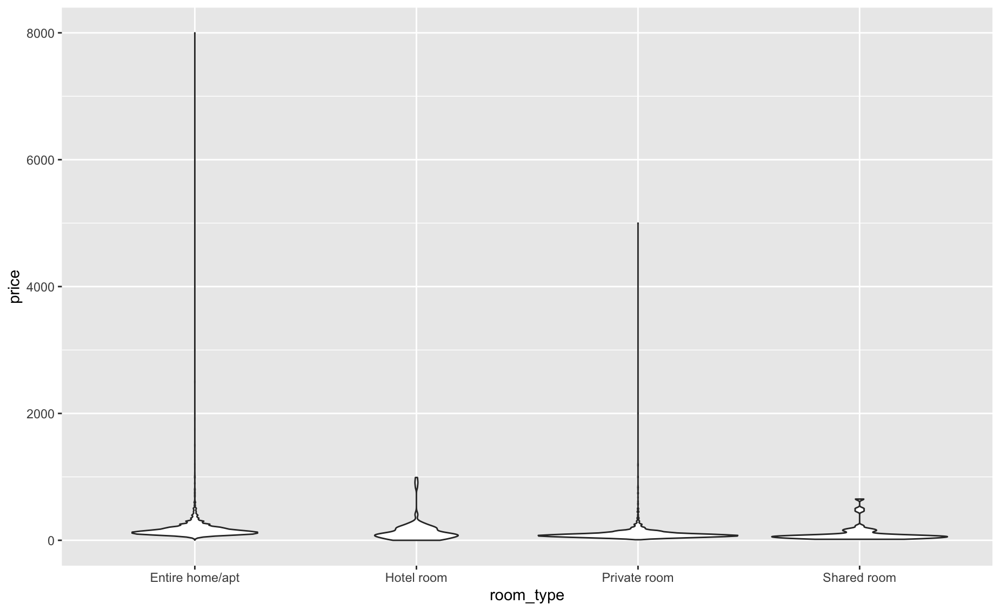
Beautiful! So how do you interpret this graph? Why does the squiggle happen every year?
Using for loops to process & summarize data
Using for loops to summarize data subgroups
This is one of the most common uses of for loops: you want to summarize information about subgroups in your dataset.
Example use cases
You want to summarize sample counts for each day of fieldwork.
You want to summarize details for each user in your database.
You want to summarize weather information for each month of the year.
Workflow
All of these summaries can be achieved with the same basic workflow.
Determine how to define the basic unit of summarization (e.g., each day of fieldwork, each user in your database, or each month of the year).
Stage an empty data object (or multiple objects) in which you will store your summary.
Build a
forloop to iterate through for each unique subgroup value (e.g., each sampling date or each user or each month).In each iteration of the loop, subset your data to only the subgroup value of interest.
At the end of each iteration, update your data objects with the result from that iteration.
Run your
forloop!After the
forloop, combine your data objects into a dataframe.
As you are building for loops, it can be very helpful to first start thinking about what needs to happen in each iteration of the loop. So first think about what needs to happen in Step 4. Then you go through each step of this workflow to build a loop around that core code.
Example
The following scenario provides a concrete example of how to do this:
Scenario: You participate in a survey of flightless birds in the forests of New Zealand. You conduct thirty days of fieldwork on four species of bird: the kiwi, the weka, the kakapo (the world’s heaviest parrot), and the kea (the world’s only alpine parrot).
Your data (nz_birds.csv) look like this:
df <- read.csv("./data/nz_birds.csv")
nrow(df)
[1] 406
head(df)
day species group
1 1 Kiwi 3
2 1 Kea 4
3 1 Kakapo 4
4 1 Weka 2
5 1 Kiwi 1
6 1 Kea 3
tail(df)
day species group
401 30 Weka 3
402 30 Kiwi 3
403 30 Kiwi 3
404 30 Kakapo 3
405 30 Kakapo 1
406 30 Kea 2Each row contains the data for a single bird group detection.
Your supervisor has tasked you with writing a report of your findings, and she wants to see a table with the number of each species seen on each day of the fieldwork.
You can use a for loop to make this table.
But first think about what needs to happen in each iteration of your loop. For each date in the dataset, you want to count the number of sightings for each species.
Let’s build our core code using day 10 as a practice date:
# Subset to day of interest
dayi <- 10
dfi <- df[df$day == dayi,]
# Tally up counts for each species
kiwi <- length(which(dfi$species=="Kiwi"))
weka <- length(which(dfi$species=="Weka"))
kakapo <- length(which(dfi$species=="Kakapo"))
kea <- length(which(dfi$species=="Kea"))Okay! So our for loop needs to contain that basic code, with some minor adjustments in order to save the results from all iterations of the loop instead of just one.
Here is the full code for this for loop problem:
# 1: determine the unique days in the dataset:
udays <- unique(df$day)
# 2: stage empty results vectors
kiwi <- weka <- kakapo <- kea <- c()
# (create a variable named i to help you test your code as you build it)
i=1
# 3: Start for loop. Loop through each unique day
for(i in 1:length(udays)){
# 4. Subset to day of interest
dayi <- udays[i]
dfi <- df[df$day == dayi,]
# 5. Tally up birds, add to each vector
kiwi[i] <- length(which(dfi$species=="Kiwi"))
weka[i] <- length(which(dfi$species=="Weka"))
kakapo[i] <- length(which(dfi$species=="Kakapo"))
kea[i] <- length(which(dfi$species=="Kea"))
}
# 6. Run for loop
# 7. Combine results into a dataframe
results <- data.frame(day=udays, kiwi, weka, kakapo, kea)
# Check it out!
results
day kiwi weka kakapo kea
1 1 5 6 3 3
2 2 1 3 1 2
3 3 2 4 5 3
4 4 2 3 2 0
5 5 6 6 3 2
6 6 6 2 3 6
7 7 3 1 3 7
8 8 2 6 2 2
9 9 4 1 1 1
10 10 2 0 3 3
11 11 2 2 3 5
12 12 2 3 4 4
13 13 3 3 5 1
14 14 7 3 4 6
15 15 3 4 4 5
16 16 4 2 1 4
17 17 3 4 6 2
18 18 3 4 1 1
19 19 4 6 1 6
20 20 2 6 3 1
21 21 4 3 5 6
22 22 4 2 5 5
23 23 4 6 2 4
24 24 1 2 5 2
25 25 4 6 3 1
26 26 4 2 3 5
27 27 8 5 6 7
28 28 8 1 0 2
29 29 6 1 1 3
30 30 4 2 3 4Nested for loops
Sometimes you need to summarize your data in such a specific way that you will need to use nested for loops, i.e., one for loop contained within another.
For example, your supervisor for the New Zealand Flightless Birds Survey has now taken an interest in associations among the four bird species you have been monitoring. For example, are kiwis more abundant on the days when you detect a lot of kakapos?
To answer this question, your supervisor wants to see a table with each species combination (Kiwi - Kakapo, Kiwi - Weka, … Kakapo - Kea, etc.) and the number of dates in which both species were seen more than 5 times.
You can produce this table using a nested for loop. Here is how it’s done:
uspp <- unique(df$species) # get set of unique species
A <- B <- c() # empty vector for names of each species in the pair
X <- c() # empty vector for number of dates in which both species were common
i=1 ; j=2
# For loop 1
for(i in 1:length(uspp)){
spi <- uspp[i] # species i
dfi <- df[df$species == spi,] # subset df to only this species
counti <- table(dfi$day) # get number of sightings on each day
dayi <- names(counti)[which(counti >= 5)] ; # get the dates on which this species was seen 5+ times
# For loop 2
for(j in 1:length(uspp)){
spj <- uspp[j] # species j
dfj <- df[df$species == spj,] # subset df to only this species
countj <- table(dfj$day) # get number of sightings on each day
dayj <- names(countj)[which(countj >= 5)] ; # get the dates on which this species was seen 5+ times
dates_ij <- which(dayi %in% dayj) # get the dates on which both species were seen 5+ times
Xij <- length(dates_ij) # count the number of these dates
# Add results to staged objects
X <- c(X,Xij)
A <- c(A,spi)
B <- c(B,spj)
}
}
# Combine results into a dataframe
results <- data.frame(A, B, X)
# Check it out!
results
A B X
1 3 3 7
2 3 2 3
3 3 1 1
4 3 4 3
5 2 3 3
6 2 2 10
7 2 1 3
8 2 4 2
9 1 3 1
10 1 2 3
11 1 1 7
12 1 4 1
13 4 3 3
14 4 2 2
15 4 1 1
16 4 4 8Note that the code for adding the results to the staged objects X, A, and B is contained within the second for loop. This is necessary for producing our results; if we put that code in the first for loop after the code for the nested loop, our results would not be complete.
Note that each for loop must use a different variable to represent each iteration. In this example, the first loop uses i and the second uses j. If we used i for both loops, R would get very confused indeed.
Also note that we used i and j in the variables specific to each loop (e.g., dayi and dayj), as a simple way to help us keep track of what each variable is representing.
Exercise 2
Your supervisor is happy with your pairwise species association dataframe, and wants to use it in an analysis for a publication. However, the R package she wants to use requires that the data be in the format of a square matrix with four rows – one for each species – and four columns. Like this:
results_matrix <- matrix(data=NA, nrow=4, ncol=4, dimnames=list(uspp,uspp))
results_matrix
Kiwi Kea Kakapo Weka
Kiwi NA NA NA NA
Kea NA NA NA NA
Kakapo NA NA NA NA
Weka NA NA NA NAYou have not yet worked with matrices in this curriculum (you will in a few modules), but for now think of them as simple dataframes with a single type of data (e.g., all numeric values, like this one). You can subset matrices just as you would a dataframe: matrix[row,column].
The values in this matrix should represent the number of dates in which each species pair was seen 5 times or more. For example, result[1,2] would be 3, since the Kiwi and Kea were seen 5+ times on only 3 dates.
She asks you to use the dataframe you just created to create this matrix. Use a nested for loop to do it.
# Stage empty results objects
results_matrix <- matrix(data=NA, nrow=4, ncol=4, dimnames=list(uspp,uspp))
# Get unique species
uspp <- unique(c(results$A,results$B))
# Loop 1: each species (row)
for(i in 1:length(uspp)){
spi <- uspp[i]
resultsi <- results[results$A==spi,] # subset data to rows where column A equals species i
# Loop 2: each species (column)
for(j in 1:length(uspp)){
spj <- uspp[j]
resultsj <- resultsi[resultsi$B==spj,] # subset data from i loop where column B equals species j
Xij <- resultsj$X # Find result
results_matrix[i,j] <- Xij # Add result to staged object
}
}
results_matrix
Kiwi Kea Kakapo Weka
Kiwi 7 3 1 3
Kea 3 10 3 2
Kakapo 1 3 7 1
Weka 3 2 1 8Boom!
Review assignment
First, read in and format some other cool data (renewable-energy.csv). The code for doing so is provided for you here:
df <- read.csv("./data/renewable-energy.csv")This dataset, freely available from World Bank, shows the renewable electricity output for various countries, presented as a percentage of the nation’s total electricity output. They provide this data as a time series.
Summarize columns with a for loop
Task 1: Use a for loop to find the change in renewable energy output for each nation in the dataset between 1990 and 2015. Print the difference for each nation in the console.
# Write your code here
i=2
for(i in 2:ncol(df)){
dfi <- df[,i] ; dfi
diffi <- dfi[length(dfi)] - dfi[1] ; diffi
print(paste0(names(df)[i]," : ",round(diffi),"% change."))
}
[1] "World : 3% change."
[1] "Australia : 4% change."
[1] "Canada : 1% change."
[1] "China : 4% change."
[1] "Denmark : 62% change."
[1] "India : -9% change."
[1] "Japan : 5% change."
[1] "New_Zealand : 0% change."
[1] "Sweden : 12% change."
[1] "Switzerland : 7% change."
[1] "United_Kingdom : 23% change."
[1] "United_States : 2% change."Task 2: Re-do this loop, but instead of printing the differences to the console, save them in a vector.
# Write your code here
diffs <- c()
i=2
for(i in 2:ncol(df)){
dfi <- df[,i] ; dfi
diffi <- dfi[length(dfi)] - dfi[1] ; diffi
diffs <- c(diffs,diffi)
}
diffs
[1] 3.49241703 3.98181045 0.63273122 3.51887728 62.33064943 -9.14624362
[7] 4.73004321 0.07524008 12.26263811 7.21543884 23.01128298 1.69994636Multi-pane plots with for loops
Practice with a single plot
Task 3: First, get your bearings by figuring out how to use the df dataset to plot the time series for the United States, for the years 1990 - 2015. Label the x axis “Year” and the y axis “% Renewable.” Include the full name of the county as the main title for the plot.
# Write code here
dfi <- df[,c(1,13)]
plot(x=dfi[,1],
y=dfi[,2],
type="l",lwd=2,
xlim=c(1990,2015),ylim=c(0,100),
xlab="Year",ylab="% renewable",
main=names(dfi)[2])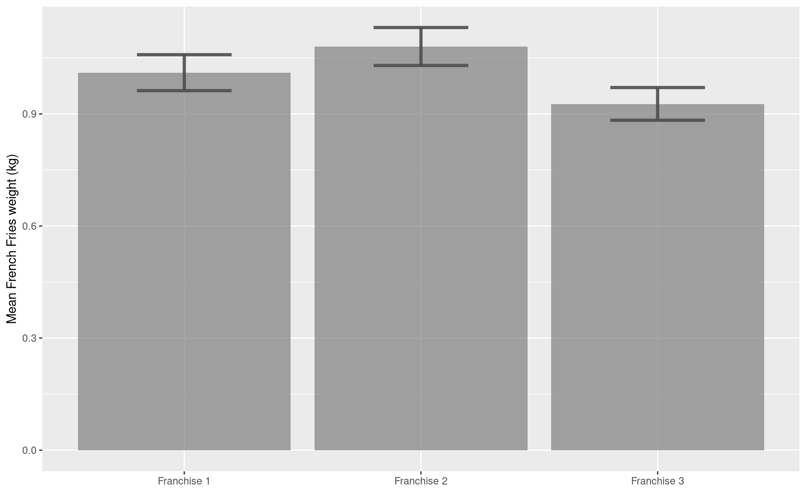
Now loop it!
Task 4: Use that code as the foundation for building up a for loop that displays the same time series for every country in the dataset on a multi-pane graph that with 4 rows and 3 columns.
par(mfrow=c(4,3))
i=3
for(i in 2:ncol(df)){
dfi <- df[,c(1,i)] ; dfi
plot(x=dfi[,1],
y=dfi[,2],
type="l",lwd=2,
xlim=c(1990,2015),ylim=c(0,100),
xlab="Year",ylab="% renewable",
main=names(dfi)[2])
}Now loop it in layers!
Task 5: Now try a different presentation. Instead of producing 12 different plots, superimpose the time series for each country on the same single plot.
To add some flare, highlight the USA curve by coloring it red and making it thicker.
par(mfrow=c(1,1))
plot(1,type="n",lwd=2,
xlim=c(1990,2015),ylim=c(0,100),
xlab="Year",ylab="% Renewable")
for(i in 2:ncol(df)){
dfi <- df[,c(1,i)] ; dfi
lines(dfi[,2]~dfi[,1],lwd=2,col=adjustcolor("black",alpha.f=.4))
}
lines(df$United_States~df$year,lwd=4,col="firebrick")
22 Conditional statements
Learning goals
- Understand what conditional statements are, and why they are so awesome.
- Be able to write your own conditional statements in
R.
First steps
An example of a conditional statement is, “If ______ happens, do _____. Otherwise, do _____.”
In R code, conditional statements work a similar way: they let a variable’s value determine which process to carry out next.
Here is a basic example:
x <- 4
if(x==3){
message("x is equal to 3!")
}else{
message("x does NOT equal 3!")
}Let’s break this if statement down.
- The
ifcommand opens up a conditional statement. - The parenthetical
(x==3)is where the logical test happens. If the result of this test isTRUE, then theifstatement will be processed; if not, theelsestatement will be run instead. - The curly brackets,
{ }serve to contain the code that will be run, depending on the outcome of the logical test. - The
elsecommand indicates the start of the code that will be run if the logical test’s result isFALSE.
This code ran the logical test x==3, determined its outcome to be FALSE, and so it skipped the if code and ran the else code instead.
Here is another example of the same idea:
x <- 4
if(x==3){
y <- 100
}else{
y <- 0
}
y # see what y is
[1] 0Since x==3 returned FALSE, y was defined as 0 instead of 100.
Note that you do not need to define an else statement. If you do not, R will simply do nothing if the logical test is FALSE.
x <- 4
if(x==3){
message("x is equal to 3!")
}(Nothing happened)
You can also feed the if statement a logical object instead of a test.
x <- 4
x_test <- x == 3
x_test # check out the value of x_stest
[1] FALSE
if(x_test){
message("x is equal to 3!")
}Not that, since x_test is a logical value (TRUE or FALSE), you do not need to write out a logical test within the if parenthetical. But you are free to do so if you wish:
x <- 4
x_test <- x == 3
if(x_test == FALSE){
message("x is not equal to 3!")
}This if statement is saying that, if it is TRUE that x_test is FALSE, print a message saying so.
Exercise 1
Write out your own basic if...else statement and ensure that it works.
Next steps
Nested conditions
You can nest conditional statements within others as many times as you wish:
x <- 6
if(x==3){
message("x equals 3")
}else{
if(x < 3){
message("x is less than 3")
}else{
message("x is greater than 3")
}
}Note that every open bracket, {, needs a corresponding closing bracket ,}. Most errors associated with if statements involve missing brackets.
Handling NAs, NaN’s, Infs, and NULLs
if statements can be particularly helpful when your dataset contains missing or broken values. R includes base functions that help you carry out logical tests concerning missing values. These three test below can be very helpful within if statements.
is.finite() tests whether a numeric object is a real, finite number.
x <- 0
is.finite(x)
[1] TRUE
y <- 10/x
y
[1] Inf
is.finite(y)
[1] FALSEHere is an if statement making use of is.finite():
x <- 0
y <- 10/x
if(is.finite(y)){
message("y is indeed a finite number!")
}else{
message("y is not a finite number!")
}is.na() tests whether a variable contains a missing or broken object.
x <- "eric"
is.na(x)
[1] FALSE
y <- as.numeric(x) # try converting `x` to a numeric value
is.na(y)
[1] TRUE
is.finite(y)
[1] FALSENA stands for “Not Available”. NaN is also a common sign of a broken value. It stands for Not a Number.
is.null() tests whether a variable is empty. That is, it has been initiated, but it contains no data.
x <- c(4,7,3,1,5) # make a vector of numbers
is.null(x)
[1] FALSE
y <- c() # make an empty vector
is.null(y)
[1] TRUEJoint conditions
if statements can also accommodate joint logical tests. For example, the follow if statement only returns if a message if two tests are true:
x <- 6
if(is.finite(x) & x==6){
message("x is real and equals 6")
}The next if statement returns a message if either of the logical statements are true:
x <- 6
if(x==3 | x==6){
message("x is equal to either 3 or 6")
}Exercise 2
Write a nested if statement that produces a message reporting the hemisphere for any GPS position you provide it (a pair of latitude and longitude coordinates, in decimal degrees). The four hemisphere options are as follows:
- Northwest (positive latitudes and negative longitudes, e.g., USA)
- Northeast (positive latitudes and longitudes, e.g., Russia)
- Southwest (negative latitudes and longitudes, e.g., Brazil)
- Southeast (negative latitudes and positive longitudes, e.g., New Zealand).
Include the ability to handle missing values (i.e., if an NA is provided, return a message saying that values are missing and the hemisphere cannot be determined.)
Provide five examples that demonstrate the functionality for all the possible message options.
Review assignment
Note: This exercise will combine all the skills you’ve learned for for loops, if statements, and writing functions into a real-world data science scenario. Buckle up!
You are working at the Center for Disease Control. Your supervisor has asked you to take a look at state-level data on infectious diseases within the United States in the last century. Specifically, she wants you to address the following questions and requests:
In the last 90 years, which states have had the highest average prevalence of measles, pertussis (whooping cough), and smallpox in proportion to their population sizes? Which have had the lowest?
Provide beautiful plots showing trends in the prevalence of these diseases over the last century. Produce a single plot for each state, with three lines representing the time series for each disease of interest. Save each plot as a
pdfinto a folder namedstate-level-summaries. Name eachpdfusing the state’s name.
To do this work, your supervisor asks you to use the us_contagious_diseases dataset contained within the R package dslabs, which contains disease data from 1928-2011 for all states. To make sure the numbers reflect actual patterns, she asks you to only use prevalence numbers for years in which counts were made in more than 20 weeks out of the year.
23 Working with text
Learning goals
- Learn to apply the most common
Rtools for working with text.
Basics
If you do not learn how to edit and transform text-based fields within datasets, you will quickly get stuck in R. Think of dates, GPS coordinates, user IDs, group names, plot labels, etc. All of these forms of data can contain non-numeric text. Becoming comfortable working with text in R is an essential part of your R toolbag.
Here we will present the most common functions for working with text. Remember that R has a special object class for text, known to as character class, and that character objects are often referred to as strings.
Most of these functions come pre-installed in R. However, several of the tools we will show here (as well as many other useful tools that we will not detail here) come from the stringr package. Go ahead an install stringr and load it using library().
install.packages("stringr")
library(stringr)Common tools
as.character(): converts a non-character object into a character string.
x <- c(1,2,3)
as.character(x)
[1] "1" "2" "3"
x <- as.factor(c("group1","group2","group3"))
as.character(x)
[1] "group1" "group2" "group3"This can be particularly useful when trying to resolve problems caused by factors. One common issue occurs when R mistakes a set of numbers as a set of factors. Using as.character() can set things right:
x <- as.factor(c(18,19,20))
x
[1] 18 19 20
Levels: 18 19 20
# If you try to convert straight to numeric, it does not work:
as.numeric(x)
[1] 1 2 3
# So convert to character first
as.numeric(as.character(x))
[1] 18 19 20paste() and paste0() combines two ore more strings together into a single object:
i <- 10
n <- 96
file_name <- "this_file.csv"
paste(i,"of",n,": Processing",file_name,". . . ") # paste assumes each object is separated by " ".
[1] "10 of 96 : Processing this_file.csv . . . "
paste0(i,"of",n,": Processing",file_name,". . . ") # paste0 assumes no space between objects.
[1] "10of96: Processingthis_file.csv. . . "
paste0(i," of ",n,": Processing ",file_name," . . . ") # this paste0 version matches the initial format
[1] "10 of 96: Processing this_file.csv . . . "You can also use paste() to collapse multiple objects into a single string.
x <- 1:10
paste(x,collapse="-")
[1] "1-2-3-4-5-6-7-8-9-10"tolower() and toupper() forces all text in a string to lower case or upper case, respectively:
x <- "That Tree Is Far Away."
tolower(x)
[1] "that tree is far away."
toupper(x)
[1] "THAT TREE IS FAR AWAY."nchar() returns the number of characters within a string:
x <- "That Tree Is Far Away."
nchar(x)
[1] 22substr() trims a string according to a start and end character position:
dates <- c("2021-03-01","2021-03-02","2021-03-03")
substr(dates,1,4) # years
[1] "2021" "2021" "2021"
substr(dates,6,7) # months
[1] "03" "03" "03"
substr(dates,9,10) # days
[1] "01" "02" "03"grep() returns the elements in a character vector that contain a given pattern:
years <- 1900:1999
# Which elements correspodn to the 1980s?
eighties <- grep("198",years)
years[eighties]
[1] 1980 1981 1982 1983 1984 1985 1986 1987 1988 1989gsub() replaces a given pattern with another in a character vector.
dates <- c("2021-03-01","2021-03-02","2021-03-03")
gsub("-","/",dates)
[1] "2021/03/01" "2021/03/02" "2021/03/03"stringr::str_pad(): standardize the lengths of strings by “padding” it (e.g., with zeroes) :
days <- as.character(1:15)
days
[1] "1" "2" "3" "4" "5" "6" "7" "8" "9" "10" "11" "12" "13" "14" "15"
stringr::str_pad(days,width=2,side="left",pad="0")
[1] "01" "02" "03" "04" "05" "06" "07" "08" "09" "10" "11" "12" "13" "14" "15"stringr::str_split(): split a string into several strings at the occurrence of a specified character.
dates <- c("2021-03-01","2021-03-02","2021-03-03")
splits <- stringr::str_split(dates,"-")
splits
[[1]]
[1] "2021" "03" "01"
[[2]]
[1] "2021" "03" "02"
[[3]]
[1] "2021" "03" "03" This function returns a list for every element in the original vector. A common need is to retrieve one item from each of the element in this list. For example, let’s say you are trying to retrieve the months of each element in the dates vector. The list structure makes this tricky to retrieve. Here’s the way to do it by drawing upon the apply() family of functions:
sapply(splits, "[[", 2) # Months
[1] "03" "03" "03"
# now get years and days
sapply(splits, "[[", 1) # years
[1] "2021" "2021" "2021"
sapply(splits, "[[", 3) # days
[1] "01" "02" "03"Exercises
Let’ start by reading in some data
library(dplyr)
library(readr)
shake <- read_csv('https://raw.githubusercontent.com/databrew/intro-to-data-science/main/data/Shakespeare_data.csv')All good? Great. Let’s go.
How may rows in the data? Whhhaaatttt?
Create a dataframe named
spoken. This should be those lines which are spoken by an actor/actress (figure it out).How many lines are spoken?
Create a column called
first_word. This should be the first word of each spoken line.What is the most common first word spoken?
Create a boolean column named “King.” This should indicate whether or not the word “King” was spoken in any given line.
Improve the above by making sure that it includes both lower and uppercase variations of “king.”
Figure out which play has the word “king” mentioned most?
What percentage of lines in Hamlet mention the word "king?
How many times does the word “woman” appear in each play?
How many words are there in all Shakespeare plays?
How many letters are there in each Shakespeare play?
Which character says the most words?
Which character says the least words?
What is the lines(s) of the character who says the least words?
Make a table of plays with one row per play and variables being: (a) number of lines, (b) number of words, (c) number of characters, (d) number of letters, (e) number of mentions of “Brew.”
24 Working with dates & times
25 Working with factors
26 Matrices & lists
Learning goals
- What
Rlists are, how to work with them, and when they are useful
- What
Rmatrices are, how to work with them, and when they are useful
As a data scientist, you will almost always be working exclusively with dataframes. But there are occasions when you will need other complex data structures – lists and matrices – to get a job done.
Here we show you what these data structures are like, how to work with them, and when to use them.
Lists
Think of lists as complicated vectors. Instead of being a set of single values, which is what a vector is, a list is a set of complex data structures. In fact, a better analogy may be that lists are like shopping carts. You can put a lot of different things in there.
To see what we mean, stage an empty list:
x <- list()Now add a simple vector to it:
x$vector <- 1:10Now add a dataframe to it.
x$dataframe <- data.frame(name=c("Ben","Joe","Eric"),
height.inches=c(75,73,80))Now add a new list to it.
x$list <- list()Now add a vector to that new list:
x$list$vector <- 10:20Okay! Nice shopping spree. Let’s see what we have:
$vector
[1] 1 2 3 4 5 6 7 8 9 10
$dataframe
name height.inches
1 Ben 75
2 Joe 73
3 Eric 80
$list
$list$vector
[1] 10 11 12 13 14 15 16 17 18 19 20This is a list: a lot of complicated data structures, all contained in a single variable.
As you saw above, you can access the items in your list using the same dollar sign, $, that we use to access columns in a dataframe:
x$vector
[1] 1 2 3 4 5 6 7 8 9 10You can do the same with lists within your list:
x$list$vector
[1] 10 11 12 13 14 15 16 17 18 19 20Alternatively, you can subset lists using double brackets, [[ ]].
x[[1]]
[1] 1 2 3 4 5 6 7 8 9 10
x[[3]]
$vector
[1] 10 11 12 13 14 15 16 17 18 19 20Finally, you can create a list from scratch like so:
y <- list("vector1"=1:10,
"vector2"=11:20)
y
$vector1
[1] 1 2 3 4 5 6 7 8 9 10
$vector2
[1] 11 12 13 14 15 16 17 18 19 20Use cases for lists
Common use cases for lists include:
Keeping track of a bunch of related dataframes (i.e., by storing each dataframe as an element in a list).
Several
Rfunctions return lists as outputs. For example, when you split up a vector of strings usingstringr::str_split(), the output is a list that is the same length as your original vector.Returning complex outputs from your own custom functions. Since functions can return only a single object, you can stuff a bunch of different objects into a list and return the list.
Matrices
Matrices are like dataframes, except that they can only contain a single data type. Dataframes can have a column with text and another with numbers, but a matrix will only handle one type.
Here’s a simple dataframe containing two classes of data:
df <- data.frame(name=c("Ben","Joe","Eric"),
height.inches=c(75,73,80))
df
name height.inches
1 Ben 75
2 Joe 73
3 Eric 80When you coerce this dataframe into a matrix (using the function as.matrix()), the numeric data get coerced into text:
mdf <- as.matrix(df)
mdf
name height.inches
[1,] "Ben" "75"
[2,] "Joe" "73"
[3,] "Eric" "80" Other than that, you can treat a variable of class matrix similarly to a dataframe.
Subsetting is the same: matrix[rows,columns]
mdf[2,]
name height.inches
"Joe" "73"
mdf[,2]
[1] "75" "73" "80"
mdf[2,2]
height.inches
"73" To build a matrix from scratch, use the matrix() function.
mx <- matrix(data=1:12,
nrow=4,
ncol=3)
mx
[,1] [,2] [,3]
[1,] 1 5 9
[2,] 2 6 10
[3,] 3 7 11
[4,] 4 8 12The data input takes a vector of data and sorts it into a matrix with rows and columns. It starts “laying down” your data in the first column, then wraps to the second column, etc.
You can also define names for the rows and columns in a matrix:
mx <- matrix(data=1:12,
nrow=4,
ncol=3,
dimnames=list(c("row1","row2","row3","row4"),
c("col1","col2","col3")))
mx
col1 col2 col3
row1 1 5 9
row2 2 6 10
row3 3 7 11
row4 4 8 12The dimnames input takes a list with two vectors: the first contains row names, the second contains column names.
Note, however, that you cannot subset a matrix according to their column names. mx$col1, for example, will not work.
One more tool worth knowing for matrices is the function diag(), which returns the values that fall along the matrix’s diagonal ([1,1], [2,2], [3,3], etc.).
mx
col1 col2 col3
row1 1 5 9
row2 2 6 10
row3 3 7 11
row4 4 8 12
diag(mx)
[1] 1 6 11The diag() function comes in handy in most use cases for matrices in R (see next section).
Use cases for matrices
Common use cases for matrices include:
Matrix algebra applications (duh), such as life history tables in biology.
Using certain packages whose inputs require matrix objects. Matrices are particularly common in analyses of social networks.
Producing images (after all, an image is just a matrix in which each value is a pixel color.)
To practice the latter use case, let’s build up a simple matrix using a random number generator:
mx <- matrix(data=round(rnorm(100,50,10)),
nrow=10,
ncol=10)
mx
[,1] [,2] [,3] [,4] [,5] [,6] [,7] [,8] [,9] [,10]
[1,] 57 50 49 56 45 42 26 54 52 57
[2,] 62 52 45 52 50 54 64 38 51 62
[3,] 54 41 55 31 52 43 41 44 40 39
[4,] 40 54 59 43 52 33 37 69 37 57
[5,] 48 41 48 55 49 62 41 54 75 62
[6,] 67 41 56 45 35 57 38 37 43 52
[7,] 46 40 46 47 54 51 30 76 59 46
[8,] 57 43 61 46 55 65 40 55 60 52
[9,] 62 61 56 66 45 34 48 59 66 44
[10,] 58 46 60 43 57 51 59 61 68 45
heatmap(mx,Rowv=NA,Colv=NA)To see a real-world example of a matrix in action, here is a dataset containing rates of social associations, scaled between 0 and 0.5, among humpback whales in the fjords of British Columbia, Canada: humpback-sociality.rds.
sociality <- readRDS("./data/humpback-sociality.rds")Let’s look at the first 5 rows and columns of this dataset:
sociality[1:5,1:5]
id1 id2 id3 id4 id5
id1 0.50000000 0.02758621 0.00000000 0.00000000 0.00000000
id2 0.02758621 0.50000000 0.02424242 0.00000000 0.02439024
id3 0.00000000 0.02424242 0.50000000 0.00000000 0.00000000
id4 0.00000000 0.00000000 0.00000000 0.50000000 0.02631579
id5 0.00000000 0.02439024 0.00000000 0.02631579 0.50000000Notice that this matrix is symmetrical. That is, the number of rows equals the number of columns. It is an N x N matrix.
Also note that the row names and column names are the same. Each element in the matrix is the rate of association between the row’s whale ID and the column’s whale ID. This means that all of the values along this matrix’s diagonal will be 0.5, which is the max association rate in this example:
diag(sociality)[1:10]
id1 id2 id3 id4 id5 id6 id7 id8 id9 id10
0.5 0.5 0.5 0.5 0.5 0.5 0.5 0.5 0.5 0.5 The fact that this matrix is symmetrical with identical rows and columns also means that all the data in the bottom half of the matrix (i.e., below the diagonal) are the mirror image o the data in the top half.
Look again at the first few rows and columns:
sociality[1:3,1:3]
id1 id2 id3
id1 0.50000000 0.02758621 0.00000000
id2 0.02758621 0.50000000 0.02424242
id3 0.00000000 0.02424242 0.50000000If we don’t like the fact that the diagonal has large values (after all, it doesn’t make much sense to quantify how much an individual associates with itself), we can use the diag() function to replace those diagonal values with NA:
diag(sociality) <- NA
sociality[1:5,1:5]
id1 id2 id3 id4 id5
id1 NA 0.02758621 0.00000000 0.00000000 0.00000000
id2 0.02758621 NA 0.02424242 0.00000000 0.02439024
id3 0.00000000 0.02424242 NA 0.00000000 0.00000000
id4 0.00000000 0.00000000 0.00000000 NA 0.02631579
id5 0.00000000 0.02439024 0.00000000 0.02631579 NANow that we’ve cancelled out the diagnoal, a heatmap of this dataset will show us which whales are involved in the strongest social associations:
heatmap(sociality,Rowv=NA,Colv=NA)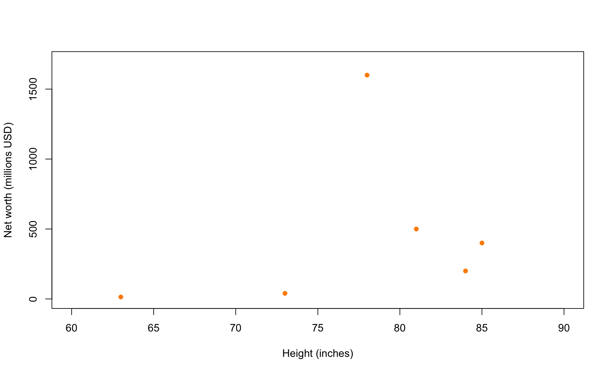
Review exercise
Task 1
Write a function that uses for loop techniques to convert any matrix, such as the sociality matrix above, into a dataframe. This dataframe must have a row for each value in the matrix, with three columns: row_name, col_name, and data.
The output of your function must be a list with two elements, raw_matrix and df (which contains your new dataframe).
Demonstrate that your function works using the sociality dataset above.
Task 2
Then, write a function that reverses your work: this new function will take the dataframe output of your first function and revert your dataframe back into a matrix. The output of this function will also be a list with two elements, raw_df and matrix (which contains your new dataframe).
In this function, include an input option giving you the choice of setting the diagonal in your matrix to NA.
Demonstrate that the matrix output of your second function is the same as the original sociality dataset, and demonstrate that the diagonal input works as well.
27 Cleaning messy data
Learning goals
- This is a review exercise: learn the skills introduced in the previous modules by applying them to a universal data science scenario: cleaning up messy data.
Your mission
In the module on joining datasets, we introduced a dataset of whale diving behaviour:
dives <- read.csv("./data/whales-dives.csv")head(dives)
id species behavior prey.volume prey.depth dive.time surface.time
1 20140811106 HW FEED 6.914610 120.76 351.00 237
2 20140812104 HW FEED 7.854762 79.02 281.00 87
3 20140812107 HW FEED 7.385667 96.92 300.25 80
4 20140812109 FW FEED 6.626298 105.87 366.00 189
5 20140812131 HW OTHER 6.356474 123.95 357.00 112
6 20140812140 FW FEED 3.820782 125.51 408.00 182
blow.interval blow.number
1 26.833 10.000
2 14.412 6.667
3 16.000 6.000
4 16.273 12.000
5 25.250 6.000
6 18.789 11.000This dataframe is nice and tidy. Here are a few of its many tidy features:
Each row is a single observation.
There is not a single missing value anywhere in the dataset.
The rows are organized from earliest to most recent, based on the data embedded in the
sitcolumn.Categorical columns have standardized formatting. In the
speciescolumn, there are two levels:HW(humpback whale) andFW(fin whale). In thebehaviorcolumn, there are also two levels:FEEDandOTHER.
But this dataset was not always so pretty. Here is the link to the original data file:
Your task in this review exercise is to write a script that carries out the necessary data cleaning steps to get this dataset from its original form to its tidy form.
Test your work along the way, then demonstrate its completion, using the identical() function. If your my_dives version of the dataset is identical to the dives data above, the following logical test will be TRUE:
identical(dives,my_dives)Enjoy!
28 Excel files & GoogleSheets
Learning goals
(PART) Interactive dashboards
29 Intro to Shiny apps
30 Shiny dashboards
31 Data entry apps
(PART) Databases
32 Introduction
32.1 What
32.2 Why
32.3 When
32.4 When not
33 Platforms
33.1 PostgreSQL
33.2 mySQL
33.3 SQLite
34 Alternatives
34.1 NoSQL
35 Practices
Spinning up a local DB
(PART) Documenting your work
36 R Markdown
37 Reproducible research
38 Automated reporting
39 Formatting standards
39.1 Tables
39.2 Figures
39.3 Captions
40 Git
Perhaps the below is familiar to you…

Or this…

There is a better way
Version control systems (VCS) are software tools meant to help programmers collaborate, maintain source code, document changes, and generally keep track of their files. Instead of reading, sit back and watch this video.
Having a working knowledge of a version control system will allow you to better organize and track your own files, as well as collaborate on teams. Though there are lots of different systems out there, the most popular version control system is “git.” Let’s dive in (next chapter).
What is git?
Git is a software for “version control”: ie, tracking changes to sets of files. It is a very commonly used tool in programming, computer science, data science, and software development in general. For anyone working in data science, knowing git is a must.
But what is it, exactly? Git is a system for tracking, organizing, sharing, and reviewing changes to software. It’s very flexible, and very powerful. And learning it can sometimes feel a bit overwhelming, because it has so many features and capabilities. But the Pareto principle (ie, the 80/20 rule) applies here: most of what you need to know to competently handle git, you can do in very little time.
Why?
Why use git? Why not just save files with meaningful names, make changes to them, overwrite the old changes, etc.? Why not just treat code the same way we treat a MS Word document, or write code collaboratively using interactive, auto-saving tools like Google Docs?
There are a number reasons:
- First, writing code is not like writing a paper. If you make a mistake in the introduction of a term paper, it doesn’t “break” your conclusion. But with code, minor changes to one line of code can have a very large impact on how other parts of that code work. Therefore, tracking minor changes is essential to recovering from errors and managing complex, interdependent software components.
- Second, collaborating on code is more complex than collaborating on a term paper. To combine (merge) one person’s work with another often requires very careful review. Git optimizes for this.
- Third, code is rarely “done.” It’s usually a work in progress. Git takes this into account, and is set up for very structured checkpoints (commits), change suggestions (pull requests), etc.
- Finally, git is the “lingua franca” of version control. Employers often request to see a prospective employee’s github profile, and expect that programmers and developers of all types (including data scientists) be proficient in git.
Get ready for git
It’s time to “git” started. Rather than diving into too much theory, let’s skip right to the practice. Like this:

Installation
We’ll start by installing git. Go here and follow the instructions for your operating system.
Windows
On windows, once you’ve downloaded, you’ll want to select the below parameters:

The program will prompt you to pick a text editor. Select notepad.

For all other options, leave settings as default and click “next.” The program will now install.
After installation, there is an option to “Launch Git Bash.” Click it.

This will open a “terminal” window:

Mac
To get Git on your Mac, you will be typing commands into your computer’s Terminal. “Terminal” is the Mac word for the “Git Bash” window you will be using in the next section.
- To open Terminal, open the Mac Search (
Command+Spacebar) and search “Terminal.” PressEnter. A Terminal “shell” window will appear:

- Next we need to download and install a software management tool called Homebrew. Copy and paste the following command into your Terminal, and press
Enter:
/bin/bash -c "$(curl -fsSL https://raw.githubusercontent.com/Homebrew/install/HEAD/install.sh)"You will likely be asked for your computer password. Press Enter when instructed to do so. Downloading Homebrew might take a few minutes.
- Now that Homebrew is installed, copy and paste the following command into your Terminal, and press
Enter:
brew install gitAfter a minute or two, Git should be downloaded, installed and ready to go.
Getting to know git bash
The strange little black box you’re looking at is called “Git Bash.” Bash is a command line language/interface. In other words, it’s a way to interact with your computer without pointing and clicking. You type code, and the computer does things. It’ll feel a bit unfamiliar at first, but don’t worry - there are just a few commands you need to know to work with git. We’ll use the terms “bash,” “command line,” and “terminal” interchangeably (though in reality these are a bit different).
pwd
Let’s start with pwd. This stands for “path to working directory.” Type it, press enter, and see what happens.
If everything went to plan, you’ll see a path (ie, a location within your computer’s file structure). “Working directory” means the folder you are “in” right now. Just like with a point-and-click program for exploring folders, you can navigate between folders using bash / terminal.
When you typed pwd you were asking your computer which directory (folder) you’re in. It responded. Great! Now let’s see what else is in the folder where you are.
ls
Type ls. This stands for “list” as in "list all the files in this directory. ls is commonly used to quickly see contents of a folder.
cd
You now know how to (a) see where you are and (b) see what else is there. But what about navigation? Let’s say you want to “move around” (ie, go to other folders). You do this using the cd command, which stands for “change directory.”
After typing cd, you should type a space and then the name of the directory you want to navigate to. This directory can be either (a) relative or (b) full. “Relative” means relative to where you are. So, for example, if you are currently in the following folder:
/home/abc/folder1And within that folder you have the following sub-folders:
foldera
folderb
foldercYou could navigate to one of them by typing the full path:
cd /home/abc/folder1/folderaOr by typing the relative path:
cd folderaBoth of the last two commands have the same result: changing your working directory to /home/abc/folder1/foldera.
What about if you want to navigate “up” to the /home/abc folder. Again, you can do this using relative or full paths. To navigate there with the full path, simply type:
cd /home/abcTo go “up” one level using a relative path, use ... So:
cd ..So far so good. Now you can (a) see where you are with pwd, (b) list folder contents with ls and (c) navigate with cd. Those 3 command will cover 80% of what you’ll need to do to use git from the command line.
Configuration
Once you’ve installed git, you’ll likely want to configure some options and preferences. Go here and walk through the steps.
Github
Now you’ve got git. Great! Git is often used in conjunction with a third party, web-based platform. The most popular is github. Go to www.github.com and create a user account.
Creating a repository
Once you’ve created an account and logged in, let’s create a repository. What is a repository? Basically, it’s a project in the form of a folder. Having logged into git, click the “plus” icon in the upper right and then click “New repository” (or go directly here).
You can fill in the “Repository name” field with whatever you’d like. For the following examples, we’ll use the word “testrepo.”
Fill in the “Description” field with the word “My first git repository.”
Set the repo as “Public” (unless you plan on putting any secrets here!), and then click the “Add a README file” checkbox. Finally, click “Create repository.”
Cool! You’ve now created your first git repository. It’s public url is https://github.com/
Cloning a repository
“testrepo” exists on the internet, but does not yet exist on your local machine. In order to get “testrepo” on your computer, you’ll need to do something that you’ll only do once: “clone” the repo. “Cloning” in git-speak means creating a copy of the repository locally.
To clone, you’ll first open your terminal window and cd into a directory where you’d like to clone your repo. For example, if you want to put your testrepo directory into ~/Documents, you’ll type the below into terminal:
cd ~/DocumentsYou can confirm that you are in ~/Documents by typing: pwd. There? Good.
Now, we’ll write the code to “clone” testrepo:
git clone https://github.com/<USERNAME>/testrepoNow, you’ve got a folder on your machine named testrepo. You can confirm this by writing ls in the terminal.
See testrepo there? Great!
Writing some code
In your local testrepo folder, you have a “cloned” copy of the repository at https://github.com/README.md. A “README” file is generally an explanation of a repository’s content, purpose, etc. Like all files, a README can be tracked in git.
Let’s open the README file and make a change to it. We’ll add the below line of “code”:
This is my first git repository.The save and close the README file.
Now, let’s ask “git” if it noticed if we had made any changes. Type the below into terminal:
git statusIf everything has gone well until now, git will reply by telling us that we’ve made a change to the file. We can ask git what change we made by typing:
git diff README.mddiff stands for “difference,” as in "what is the difference between the code I had and the code I have. Git will spit back some color-coded lines showing the change you’ve made.
Satisfied with your change? Great, now it’s time to confirm it by doing the following:
git add README.mdThis tells git that we want it to notice and track the change we made to README.md. Then:
git commit -m 'my first change'This tells git that we are “committing” our change, it marking a checkpoint (to which we can revert later). The -m flag is followed by a message in quotations which will help us to navigate this checkpoint in the future.
Almost there. Now that we’ve added and committed, we need to “push” our change to the remote repository (github), by running:
git pushYou did it! Go to https://github.com/README.md file. You’ll notice that your most recent changes are there. Now, if someone else wants to get your code, they can “clone” your repository, and they’ll have the code you’ve “pushed” there.
A bit more practice
Creating another repo
Let’s face it: testrepo is a pretty lame name for a repository. How about we make a repo that’s actually real and useful? We’ll make one for storing all the code we’re writing in this course.
Go to https://github.com/
Click the “plus” icon in the upper right and then click “New repository” (or go directly here).
Now, for “Repository name,” write “datascience.”
Fill in the “Description” field with the words “Code I wrote during my intro to data science course.”
Set the repo as “Public” (unless you plan on putting any secrets here!), and then click the “Add a README file” checkbox. Finally, click “Create repository.”
Cool! You’ve now created your first git repository. It’s public url is https://github.com/
git clone https://github.com/<USERNAME>/datascienceNow, you’ve got a folder on your machine named datascience. You can confirm this by writing ls in the terminal.
See datascience there? Great!
Now, let’s move everything you have written for this course so far into datascience. Do this in an organized fashion. Remember to not put anything secret there.
The .gitignore
If you cd into datascience, and then type git status, you might note that it’s a bit “busy.” That is, there are a lot of documents there! You’re going to want to (i) add, (ii) commit, and (iii) push these documents, but perhaps there are some kinds of documents you don’t want to push.
For example, maybe you want to push R code files (.R), but not data files (.csv). In this case, you can explicitly tell git that you don’t want it to pay any attention to .csv files by creating a .gitignore file. A .gitignore file is simply a text file in a git repository that indicates to git that the contents of that file should be ignored.
Let’s do it. First, create an empty .gitignore file:
touch .gitignoreThen, open the .gitignore file in RStudio.
Finally, add the following line to it:
*.csvThe star is a “wildcard,” meaning that it stands in place of anything (such as ducks.csv or data.csv or xyz.csv).
With this in your repo, git now knows to ignore anything that ends with the extension .csv.
Good? Great. Push everything to your repo. Now you can share your code with others, and your future self.
Advanced git
Branching, pull requests, blaming, and more - in a break-out session.
(PART) Sharing research
41 Sections of a report
Learning goals
- Understand the over-arching structure and narrative flow of a research paper
- How to write each section of a paper
Overall structure
Data reports, research papers, and scientific publications follow the same basic narrative flow:
- Abstract: Concise summary. This section can also be referred to as an Overview or Executive Summary.
- Introduction: A background section that provides context and justifies the ways that the report is important and adds value.
- Methods: Detailed description of what was done and how data were analyzed.
- Results: A concise report of what was found, drawing upon narrative prose, data tables, and figures.
- Discussion: Considerations and interpretations of the results’ significance, limitations, and consequences for the field of study.
- Other stuff: Acknowledgments, literature cited (i.e., references), tables, and figures.
These sections map onto a high-level conceptual flow: a research paper is like an hourglass.
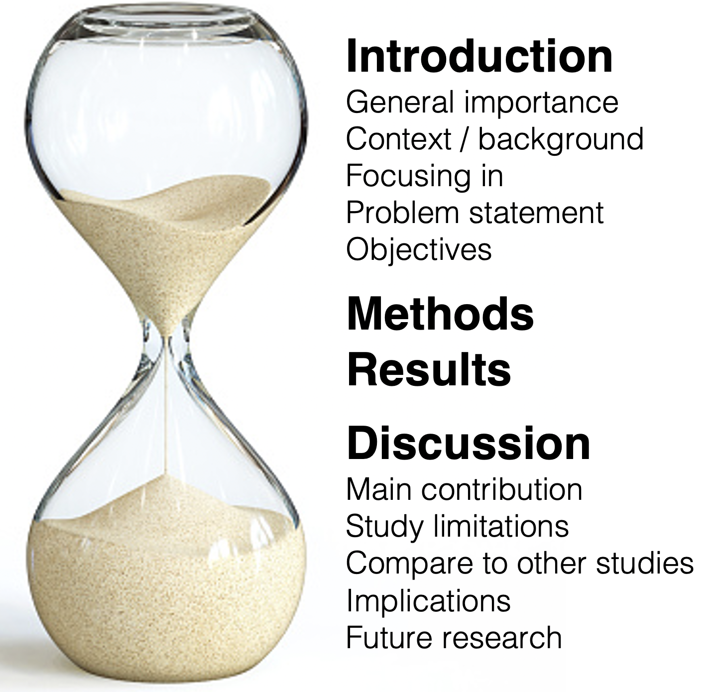
Your Intro narrows from a point of common and general interest to an articulation of a specific knowledge gap and a focused purpose. Your focus remains narrow as you cover your study’s Methods and Results. Only in the Discussion does your paper begin expanding out again to place your findings in the context of other studies and consider your findings’ implications on broader issues. Your paper ends as broadly as it began: a point of common interest and importance, this time focused on future concerns and priorities.
In this module, we will cover how to adhere to this narrative arc while meeting the standards and expectations of each individual section.
Abstract
An Abstract is a concise and sharp distillation of your paper.
Standards
A strong Abstract section will answer “Hell yes!” to all of the following questions:
1. Is your abstract actually a helpful overview? That is, is your abstract a specific summary of your paper’s content, rather than a vague overview of its organization? As a good example of what NOT to do, in 1951 a geologist published an opinion article, “A Scrutiny of the Abstract”, about how abstracts should and should not be written. He decided to make his article’s abstract sarcastic:

Avoid this style! There is a way to summarize that avoids any helpful information, and there is a way to summarize the provides an executive summary of your work. Aim for the latter.
At the end of the above paper, the author provided a good version of his abstract:
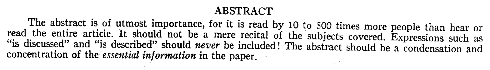
2. Does your abstract adhere to the Abstract Recipe detailed below?
3. Does your abstract fit within the word limits provided by the assignment or instructions? Most Abstract word limits range between 250 and 300 words.
Strategies
There are hundreds of approaches to writing an Abstract. (For proof, just type “how to write an abstract” into GoogleScholar!) In your first few tries at writing your own abstract, we recommend the following approach.
Every single sentence serves a specific purpose, outlined in the following Abstract Recipe:
- Sentence 1: establishes broad interest and the relevance of your topic.
- Sentence 2: articulates your problem statement.
- Sentence 3: articulates your research question and study objectives.
- Sentence 4: summarizes your data collection methods.
- Sentence 5: summarizes your statistical approach.
- Results sentences: The next few sentences (2 - 4) summarize your most important results. This is the most important part of your Abstract, since it tells the reader what your study is contributing to the world, and as such it should be the longest portion of the paragraph.
- Discussion sentences: Use one to two sentences to explain the importance and implications of your findings.
- Final sentence: summarizes recommendations for future research (“Future research on this topic should focus on…”) and/or emphasizes the implications and importance of the findings.
Like a professional chef, professional academics may adjust this recipe as they see fit, but nearly all good abstracts conform to this general formula.
Good example
Below is the abstract from a publication whose first author is an undergraduate student (Zeitler et al. 2021, Journal of Environmental Management). This a strong abstract that maps almost perfectly to the recipe above.

Introduction
An Introduction is an information-rich and persuasive argument for the importance of the contribution your paper will be making to the field of study.
Standards
An Introduction has to do many things at once. Here are the necessary elements of a quality Intro:
Engage & Justify. The entire Introduction is a carefully crafted, convincing argument for the importance of your topic and the urgent need for your research.
Establish context & convince readers to care. Early into the Intro, place your topic in a broad context. Make it clear who should be interested in your topic.
Invite readers in. A good Intro is an accessible one; it should not send the message that only experts will get something out of the paper.
Get everyone on the same page. Mention and explain any concepts that will be crucial to understanding your methodology, interpreting your results, or intuiting the impact of your work.
Demonstrate authoritative knowledge. Demonstrate exhaustive knowledge of the topic, and sharp awareness of the ‘state of the science.’
Demonstrate basis in previous research. Aim for a 1:1 ratio of citations to sentences. Each sentence should end with a citation. Your Introduction is an assemblage of previous findings strategically arranged to identify a knowledge gap and set the stage for your own study. (See Literature Review details below.)
Provide more than a history lesson or a list of facts. Your Introduction is a tightly organized and persuasive argument, not a brain dump or an aimless encyclopedia entry. Your deep knowledge of the field ought to be sprinkled throughout, interspersed within your narrowing arc.
Narrow in on a problem statement. The entire Intro should narrow to a problem statement (a knowledge gap, an urgent need). Along the way, you are garnering reader buy-in (yes, this is important) which causes them to care about the gap you have identified.
Follow with a motivation/objectives statement. Your study is a response to the problem statement. “To address this knowledge gap, I developed a study based upon the following objectives…”
Examples of problem statements & hypotheses / aims:
In the examples below, the problem statement is in boldface & the objectives/aims statement is italicized.
“Although there have been several modern investigations of cladogenesis and tree shape [2], [3], the manufactory hypothesis has not, to our knowledge, been tested since Darwin… This paper follows Darwin by examining autocorrelation among ancestral and descendent branches of the tree at the level of subspecies through genera and we also extend the comparison to the level of families.” (from Haskell & Adhikari 2009)
“Few efforts explicitly quantify the consequences of including demand into conservation efforts to safeguard [Ecosystem Services] and biodiversity (Wolff et al. 2015; Verhagen et al. 2016). We aimed to quantify differences between supply and benefit within the context of conservation planning. We addressed 3 questions: How does incorporating demand shift the spatial distribution of benefits relative to supply? How much benefit is captured by conservation efforts that target supply? How do efforts targeting supply and benefit compare in terms of their biodiversity outcomes?” (from Watson et al. 2019)
There are plenty of good and bad examples of Introductions in scientific publications. Here are a few recommendations for excellent introductions that follow the rules above. Note how each example demonstrates how to achieve the necessary conceptual arc while maintaining a large ratio of citations to sentences (nearly every sentence has at least one citation).
See Watson et al. 2019 for a sharp and concise Intro.
See Pitman et al. 2019 for an extensive introduction with excellent writing.
Strategies
With so much to cover in an Introduction, it can be difficult to know where to begin. There are two main steps to preparing an Introduction: (1) revieweing literature, and (2) writing. Begin with the literature.
1. Conducting a literature review
Carrying out a literature review can be daunting, especially if you are new to a field of study.
But regardless of your level of experience, you can follow a common basic workflow. The overall goal is to dive into the literature, follow rabbit holes, and take notes until you begin to feel familiar with the canon of knowledge on your topic. That feeling of familiarity will come once you stop finding new studies in the literature cited sections of the papers you are reading, and once you start to recognize the names of the most prolific and influential scientists in your topic of interest.
a. Find your first paper to review. Begin your search on GoogleScholar scholar.google.com. You may need to search other search engines eventually (e.g., JStor, PubMed, etc.), but this is a good place to start.
The most productive starting point is looking for recent review articles on your topic. Reviews try to be definitive and exhaustive in their list of references. They also point to the studies that were foundationally important in the early days of your topic, as well as to the “cutting edge”: the most recent and exciting developments in the literature.
b. Open up a scratchpad for taking notes in Word or GoogleDocs. Type (or screenshot) the citation for your first article to the top of your scratchpad (e.g., Keen EM and Brew JR. 2021. Ping pong: the Sport of Kings? Table Tennis Weekly 56(1): 343-356.)
c. Begin reading & taking notes. Don’t sit down to read it word for word. Read it selectively for the topics and details that are most relevant to your work. If your first paper is a research article (i.e., with sections on Methods and Results) instead of a review, focus on its Introduction and Discussion. Your notes should be brief. If you are copying language from the paper word for word, place it in quotes so that you can remember what needs to be paraphrased at a later time. In each note that involves a reference to a separate article, include that reference in your note (e.g., Puckette et al. 2021) so you can track it later.
d. Copy down all references that are included in your notes using the literature cited section. This can be tedious but it will pay off in the long run.
e. Clean up your notes for this first paper. Make sure every single note has a parenthetical citation attached to it, so you don’t lose track of where it came from. If the note is a direct contribution from the paper you have reviewed, add the reference for that paper to your note (e.g., Keen & Brew 2021).
f. Select one of these references as your second paper to review.
g. Repeat. Until you begin to feel familiar with the current literature and stop being suprised by new studies.
Once you reach a familiarity plateau (shoot for 80% expertise), pause your literature review! For a peer-reviewed article submitted for publication, anything less than 30 reviewed papers is highly unlikely to provide a sufficient grasp of the state of your field of study (most studies cite many times this number).
2. Organizing and writing your Introduction
You now know enough about the literature now to have a basic sense of what is currently known and not know about your topic.
a. Write your problem statement, the gap in knowledge the justifies and motivates your study.
b. Articulate your hypotheses and/or objectives Frame these as a way of addressing or ameliorating the problem statement.
c. Determine your starting point. Choose your audience, your hook, and the initial direction of your conceptual flow. This is arguably the most difficult part of the writing process.
d. Outline the narrative path from your starting point to your problem statement, with the key step in your argumentative arc must be, and therefore what the purpose of each paragraph must be.
e. For each paragraph, articulate the main point or key idea. This sentence can typically serve as the first sentence of the paragraph (or in some cases the last).
f. Sort your notes into each paragraph. Some notes may be useful in multiple paragraphs, in which case you can copy them rather than just moving them. This is why it is critical that you add a parenthetical citation for the source of each reference. Otherwise you will lose track of which content comes from which source!
g. Sort your notes within each paragraph. Each paragraph has its own narrative flow, taking the reader from concept A to concept B using a sequence or chain of evidence-based claims. How do your notes need to be organized in order to build that chain?
h. Determine the holes in your literature review. As you organize your notes into an argumentative sequence, you will find “holes” in your argument that require substantiation with an as-yet undiscovered reference. This will guide your second stage of literature review (see next steps).
i. Now begins an iterative process of writing, seeking new references, and reorganizing your writing. Iterate until satisfied. Once you are satisfied, ask a colleague to review your writing, not only for grammatical errors and typos, but also with an eye toward the overall arc. Where is your argument weakest? How can it be reorganized? Incorporate their feedback and repeat.
Methods
Your Methods section provides all the detail necessary to (1) understand how you collected data, (2) understand how you analyzed the data, (3) how to interpret the results, and (4) reproduce your study (at least in principle).
Standards
A strong Methods section will answer “Hell yes!” to all of the following questions:
1. Do your methods make sense based upon the research question and the objectives stated in your Introduction? For example, if your goal is to understand the risks of a new drug, it would not make sense if you were measuring seismic activity near a volcano. That’s a dumb example, but you get the idea: what you do should actually answer your research question.
2. Is your research and analysis fully reproducible, based upon the level of detail and quality of explanation in your Methods section?
3. Is your analytical approach appropriate given your objectives and the limitations of your data? For example, if you are interested in the correlation between two variables, it would not make sense to use a t-test.
4. Is your analytical approach properly thorough? Are you doing everything you can with the data you have, within the confines of a your project’s scope and objectives? Data are valuable and difficult to come by. Are you learning everything you can regarding your research question from the data you have collected? (Note that it is possible to go too far here, i.e., to include analyses that have nothing to do with your research question. The key is to be thorough but focused.)
5. Is your Methods section written clearly, concisely, and with precision? See the Module on Style for guidance.
Use the papers you found during your literature review for examples of what is included in Methods sections within publications related to your topic, and the style in which that material is written.
Strategies
Your Methods section will likely be the thing you write second, immediately after you develop your research question, objectives, and hypotheses. Writing your Methods in full and with detail will help you uncover mistakes with your sampling design and/or analyses before it is too late.
Most Methods sections have a few distinct subsections: Study area, Data collection, Data analysis.
Most Methods sections are written in the past tense.
Do not hesitate to use tables or diagrams to present details of data collection.
Results
The Results section is a concise narrative of your findings, without interpretation or commentary on the importance and consequences of your findings.
Standards
A strong Results section will answer “Hell yes!” to all of the following questions:
1. Are your results complete based on the analyses you described in your Methods section?
2. Is your Results section organized as a coherent narrative that is directly related to your research question, and not just a list of seemingly random findings?
3. Are your findings and conclusion appropriate, given the limitations of the data and the methods you employed?
4. Are tables and figures included where appropriate?
5. Are tables and figures referenced correctly within the text of your results? See the next Module on Style for guidance.
6. Does your Results section contain results only, and not any methodological details that should have been in the Methods, nor interpretation commentary that would be more appropriate in the Discussion?
7. Is your Results section written clearly and with precision? This is especially important with respect to the inclusion of statistical results. Again, for guidance see the next Module on Style.
Again, use the papers you found during your literature review for examples of what is included in Results sections within publications related to your topic, and the style in which that material is written.
Strategies
It is usually best to produce your tables and figures first, then write your Results narrative around those assets.
You want your tables, figures, and narrative to be strategically redundant. Your tables and figures represent the detailed version of your Results; they are the raw numbers that answer your research question. Your narrative should refer constantly to the raw results presented in your tables and figures, but they should not repeat them. Your narrative summarizes the tables and figures and frames your findings with respect to how they address your research question. Minimize the numbers you include in your results, but be sure to include the most important ones.
Aim for a parallel structure in your Methods and Results. Present your results in the same order in which you explain your methodological process. This makes it easy for readers to go back and forth between the two sections as they make sense of what you found.
Most Results sections begin with a brief paragraph summarizing the data that were collected: dates of collection, sample size, and any other context that a reader might need to understand the analytical results that will come in the proceeding paragraphs.
Usually, the most difficult thing about writing a Results section, other than writing an intelligible story instead of a list of facts, is to keep your Discussion out of your Results. The results section is a straightforward report of what you found, without commentary on the importance or implications of those findings.
That said, you will still have to make some editorial decisions in your Results section. Which findings will you emphasize with narrative prose, and which will you simply refer to using a table or figure? Which findings are misleading if the reader fails to keep certain aspects of your methodology in mind, and how can you frame those findings to avoid misinterpretation?
Discussion
The Discussion is where you interpret your results, discuss the limitations of your study, place your findings within the context of the literature, highlight the contributions and implications of your findings, and identify future directions of research.
Standards
The Discussion is probably the most variable and unstructured section of a report, and can therefore be the most difficult to write. For your first few attempts at writing a Discussion, we recommend adhering to the recipe we outline below. A strong Discussion section will have the following components or subsections:
The opening paragraph is a brief summary of your most important results that highlights the findings that make your study important. Think of this paragraph as a ‘hook’ that convinces readers they should read the rest of your Discussion.
Subsection on Study Limitations. This subsection allows you to (1) place boundaries on how you are able to interpret your results given the limitations or unexpected issues that arose from your methods, and (2) identity areas in which your study could be improved if it were reproduced in the future.
Subsection on Interpretation of Results. Use this subsection as an area to highlight and explore your findings, what they mean, and what the important takeaways are.
Subsection on Comparison to Previous Studies. Use this subsection to place your findings within the context of other research. Are your results in line with previous findings? Are they surprising? If so, why might that be? If it is difficult to compare your study to others, explain why. This is a chance for you to control the conversation in the event that others try to compare your study to other literature.
Subsection on Study Implications. Use this subsection to articulate how your findings relate to your study objectives, address your research question, and are important in a broad sense. Why do your results matter? What implications do they have for the issues, places, and people you are focused on in this project? How might your findings influence future policies, technological innovations, or other changes?
Subsection on Suggestions for Future Research with a concluding statement that reinforces the importance and contribution of your project.
Usually, strong Discussions refer regularly to the concepts introduced in the Introduction. This makes sense, since your Discussion is exploring the ways in which your new findings have contributed to the body of knowledge and gaps in knowledge articulated in your Intro. If your Discussion is not addressing the same issues raised in your Intro, you many need to restructure and reframe one or both of those sections.
Most of the papers you collect for your literature review will have their own variation on this recipe. Some sections will be more relevant and extensive than others, depending on your topic and findings. Use your literature collection to get a sense of writing style for Discussions.
Other elements of a report
Acknowledgments
A brief statement of whom you thank for their contributions and support of your project. Be sure to include any sources of funding, equipment, analytical assistance, or other resources.
Literature Cited
Be sure that every reference mentioned in the body of your report has a full citation in this section.
Conversely, make sure that every full citation in this section has a corresponding reference within your report. Remove all un-referenced citations!
See the Module on Style for details on how to format your references and citations.
Tables
Present and enumerate tables in the order they are referenced in your report.
Ensure that each table has its own caption placed above the table.
See the Module on Style for details on how to create and format tables.
Figures
Present and enumerate figures in the order they are referenced in your report.
Ensure that each figure has its own caption placed below the figure.
See the Module on Style for details on how to create and format tables.
Other resources
“How to Write a First-class Paper”, by the editors at Nature
42 Formatting, structure & style
Learning goals
- Understand the principles of good research writing
- Gain practical skills in formatting the elements of a research report
There are thousands of resources available in print and online to support students who are trying to improve their scientific writing. The recommendations offered below are by no means exhaustive, and by no means are they the only way. Our aim here is to get students started on the right track. Our underlying premise is that good writing in research is the same as good writing anywhere else. The same basic standards apply.
The best single resource we know of is a 1990 article in the American Scientist, “The Science of Science Writing”, by George Opan and Judith Swan. Most of the concepts and examples below are distillations from that article.
Core principles
Opan and Swan (1990) offer many fundamental principles for strong scientific writing, but they all stem from the same core idea: Write with the reader in mind. It is not enough to have all the correct information on the page; that information must organized and presented in ways that helps the reader understand.
To illustrate this point in a brief example, they show three different ways to present the same information:
Option 1:
“Our results were t(time)=15’, T(temperature)=32º, t=0’, T=25º; t=6’, T=29º; t=3’, T=27º; t=12’, T=32º; t=9’; T=31º”
Option 2:

Option 3:

Which of these is easiest to interpret? Why?
In short, place information where readers expect to find it. This applies broad organization, such as keep all methodological details within the Methods sections, or deciding which information to place in tables and which to write out in the narrative of your Results section, but it also applies to writing at the sentence-level. In every sentence readers take in, they have subconscious expectations about how coherent ideas will be structured. Shape your sentences to meet those expectations.
Opan and Swan (1990) provide a good example of really bad writing:
“The smallest of the URF’s (URFA6L), a 207-nucleotide (nt) reading frame overlapping out of phase the NH2-terminal portion of the adenosinetriphosphatase (ATPase) subunit 6 gene has been identified as the animal equivalent of the recently discovered yeast H+-ATPase subunit 8 gene. The functional significance of the other URF’s has been, on the contrary, elusive. Recently, however, immunoprecipitation experiments with antibodies to purified, rotenone-sensitive NADH-ubiquinone oxido-reductase [hereafter referred to as respiratory chain NADH dehydrogenase or complex I] from bovine heart, as well as enzyme fractionation studies, have indicated that six human URF’s (that is, URF1, URF2, URF3, URF4, URF4L, and URF5, hereafter referred to as ND1, ND2, ND3, ND4, ND4L, and ND5) encode subunits of complex I. This is a large complex that also contains many subunits synthesized in the cytoplasm.”
If you are like most readers, this paragraph is difficult to make sense of and the authors’ intended meaning is completely lost.
To fix this paragraph and others like it, Opan and Swan recommend the following steps:
Principle 1. Keep language as straightforward and clear as possible. The more complex a sentence or paragraph becomes, the more likely that a reader will get confused or just give up. Note, however, that long sentences are not necessarily bad. If a sentence is shaped well and written clearly, there is no limit to its length.
Principle 2. Minimize jargon, so that people other than the world expert can understand what you are saying.
Principle 3. Keep the subject and the verb as close together as possible.
Bad example: The smallest of the URF’s is URFA6L, a 207-nucleotide (nt) reading frame overlapping out of phase the NH2-terminal portion of the adenosinetriphosphatase (ATPase) subunit 6 gene; it has been identified as the animal equivalent of the recently discovered yeast H+-ATPase subunit 8 gene.
Good example: The smallest of the URF’s (URFA6L) has been identified as the animal equivalent of the recently discovered yeast H+-ATPase subunit 8 gene.
Principle 4. In each ‘unit of discourse,’ make only a single point. A unit of discourse is any part of your writing with a beginning and an end: a report section, a paragraph, a sentence, or a clause. Do not jam multiple main ideas into a single unit.
Building on this principle, each paragraph should have a sentence that clearly encapsulates the paragraph’s main point. This usually comes at either the beginning or end of the paragraph. As an example of this, checkout this white paper from a company that studies respiratory illnesses by tracking coughs. In this paper, the main point of each paragraph is in boldface to help readers more easily understand the purpose of each paragraph.
Principle 5. Make use of the ‘Stress Position.’ Readers naturally emphasize the material at the sentence’s end. Arrange the emphatic information in your sentence to arrive last. In other words, save the best for last.
Bad example: The end of a sentence is usually where readers naturally place emphasis on material. Place the emphatic information near the end of your sentence in order to re-arrange. The last is the place for which the best should be saved.
Good example: See Principle 5.
Principle 6. The ‘Topic Position’ keeps things clear. The ‘topic position,’ i.e., the material at the beginning of a sentence, establishes context and expectations for the remainder of the sentence. The first pieces of information help the reader understand what the sentence will be about. As Oppan & Swan (1990) put it, “‘Bees disperse pollen’ and ‘Pollen is dispersed by bees’ are two different but equally respectable sentences about the same facts. The first tells us something about bees; the second tells us something about pollen.” If you are writing a paragraph about pollen, then the second is superior. Even though it utilizes passive voice, it correctly reinforces who the main character is.
Principle 7. Use Topic Positions and Stress Positions to link ideas in a paragraph. In a clear-flowing paragraph, the Topic Position of each sentence is linked to the Stress Position of the previous. In other words, the topic position provides both context (looking ahead) and linkage (looking back). Try to get into the pattern of placing ‘old information,’ i.e., material you have already introduced, in the Topic Position and ‘new information’ in the Stress Position. Maintaining this pattern consistently is an enormous aid to reader comprehension.
This stress-topic linkage is particularly important in persuasive writing, such as a report’s Introduction. Those sections are really evidence-based arguments that build on top of one another, connecting ideas in a chain. They are not lists of facts. In a strong argument, sentences are connected in a chain.
Bad example: “A is something interesting. B is something interesting. C is …”
Good: “A is related to B. B is related to C. C is related D…”
Oppan and Swan (1990) provide the following examples:
Bad example:
Large earthquakes along a given fault segment do not occur at random intervals because it takes time to accumulate the strain energy for the rupture. The rates at which tectonic plates move and accumulate strain at their boundaries are approximately uniform. Therefore, in first approximation, one may expect that large ruptures of the same fault segment will occur at approximately constant time intervals. If subsequent main shocks have different amounts of slip across the fault, then the recurrence time may vary, and the basic idea of periodic mainshocks must be modified. For great plate boundary ruptures the length and slip often vary by a factor of 2. Along the southern segment of the San Andreas fault the recurrence interval is 145 years with variations of several decades. The smaller the standard deviation of the average recurrence interval, the more specific could be the long term prediction of a future mainshock.
Good example:
Large earthquakes along a given fault segment do not occur at random intervals because it takes time to accumulate the strain energy for the rupture. The rates at which tectonic plates move and accumulate strain at their boundaries are roughly uniform. Therefore, nearly constant time intervals (at first approximation) would be expected between large ruptures of the same fault segment. However, the recurrence time may vary; the basic idea of periodic mainshocks may need to be modified if subsequent mainshocks have different amounts of slip across the fault. Indeed, the length and slip of great plate boundary ruptures often vary by a factor of 2. For example, the recurrence intervals along the southern segment of the San Andreas fault is 145 years with variations of several decades. The smaller the standard deviation of the average recurrence interval, the more specific could be the long term prediction of a future mainshock.
Oppan and Swan (1990) conclude this recommendation by stating that, “In our experience, the misplacement of old and new information turns out to be the No. 1 problem in American professional writing today.”
Principle 8. Anticipate and avoid logical gaps. When a new sentence contains no reference whatsoever to ‘old information’ in previous sentences, the readers will make their own logical leaps, and those leaps will almost always be wrong.
Opan & Swan (199) conclude that writers who do not take the trouble to adhere to these principles “are attending more to their own need for unburdening themselves of their information than to the reader’s need for receiving the material.”
So, in short, be kind to your reader, and do your share of the work.
Further considerations
Use of passive voice and first-person
Most beginners are told that the use of first-person language within a research report is inappropriate, but that is simply not true. It certain is true that it is possible to misuse first-person structure, but it is also true that first person structure can occasionally improve the flow of a paragraph and, counterintuitively, it can help keep the reader’s focus on your objectives and methods.
Examples of appropriate use of first-person:
“We aimed to quantify differences between supply and benefit within the context of conservation planning. We addressed 3 questions…” (from Watson et al. 2019)
“Because wetland invasion by common duckweed often accompanies eutrophication, we also assessed whether the presence of Lemna minor could impact anuran development. We tracked population- and individual-level responses to development in the three water treatments with and without duckweed…” (from Zeitler et al. 2021)
Examples of inappropriate use:
- “In this part of the Introduction, I will …”
- “No Discussion would be complete without …”
- “In this complicated analysis, I was able to …”
- “I really did not enjoy that day of fieldwork.”
In general, avoid self-aware commentary about what is happening in your report, and avoid self-centered commentary about how difficult or impressive something was. Always avoid “I was able to…” statements.
Logistics of scientific writing
Writing about results
In general, a results statement needs to address the following elements of content and design:
- Describe the pattern in your data
- Include units with all numbers / metrics you provide
- Round numbers to an appropriate number of significant digits (usually two decimal places is best)
- Refer to the figure number that portrays the data, typically using a parenthetical at the end of a sentence (e.g., “(Fig. 1).”)
- Name the statistical test you used
- Report all necessary statistical metrics in parentheses: sample size, p-value, and any other details (e.g., regressions also need to have their regression coefficients reported.)
- State whether or not the pattern you see supported by your significance test?
- State whether or not the results support your hypothesis, if applicable.
Results needs to be written as concisely as possible in order to be intelligible to a reader. Treat this like a puzzle: how can you report all the necessary information in as few words as possible while maximizing the logical flow of your sentences?
Bad example:
“The sample size was 25 clams for both non-predated and predated clams. We did a t-test comparing the lengths of these two clams. With a p-value of 0.023, this t-test indicated that the results were statistically significant, since the p-value was below 0.05. This therefore proves our hypothesis that predated clams are different than non-predated clams. These findings are also presented in Figure 1.”
Good example:
“The length of predated clams (mean= 27.1 cm; n=25) was significantly different from that of non-predated clams (mean= 36.3 cm; n=25) (t-test, p = 0.02), supporting our hypothesis that predation state determines clam length (Fig. 1).”
Note that the Bad example above is bad due to more than just its writing. You should never say that a statistical test proves a hypothesis correct or incorrect. A test can only fail to reject the null hypothesis.
Captions for tables and figures
In general, a caption must provide all the information necessary to interpret the table or graph with which it is associated.
The following details must be included:
- Brief statement of what is shown or what was measured. Summarize the content.
- Explain any metrics that are provided. Do the bars on your graph represent Standard Error or 95% confidence intervals?
- Include sample sizes if not included in the asset, e.g., “(n=15).”
- Units for all measurements, if not displayed.
- Sampling location, date, and time.
- Any other details required to interpret the data.
Bad examples:
- “Figure 1: Clam length.” [missing tons of information!]
- “Figure 1. This figure is comparing two categories of data: predated clams and non-predated clams…” [way too wordy!]
- “Figure 1. Showing mean lengths of predated and non-predated clams…” [too wordy! Never say “showing…” or “this figure…“]
Good examples:
“Figure 1: Mean and standard error of the heights of white oak and chestnut oak (n=8 trees per species) measured at Green’s View, Sewanee, 23rd July 2006).”
“Figure 2: Height (cm) and width (kg) of students (n=15, with linear trendline) in Biology 130 class. Data collected 27 August, 2017.”
Referencing tables & figures
Tables and figures (collectively known as report assets) should be referenced throughout the Results and Discussion using parenthetical references, e.g., “(Table 1, Fig 4).” These asset references typically come at the end of a sentence, but can sometimes be used in the middle of a complex sentence.
Try to avoid sentences that explain what tables or figures contain (e.g., “Measurements can be found in Table 1.”). Instead, summarize a pattern then reference the asset (e.g., “The mean measurement was 32 (standard deviation = 4.3; Table 1)”).
Citing references
Literature should be cited within the body of your report using parenthetical citaitons, e.g., “(Keen & Brew 2021).”
Like in-line references to tables and figures, these parentheticals typically come at the end of a sentence, but can sometimes be used in the middle of a complex sentence to make it clear which concept is connected to the reference.
The exact formatting of that parenthetical depends on the citation style you use. See the next section.
Formatting Literature Cited
All in-line references and full citations within your Literature Cited section need to have consistent formatting. The precise formatting of your references depends on the style system you are using. Many styles are in widespread use.
If you have your choice of the kind of style you are allowed to use, we recommend the Scientific Style maintained by the Council of Science Editors.
Common use cases are provided below:
In-line citations
For a single author:
“We don’t know ANYTHING about what’s down there! (Ezell 2021)”
Two authors: (Hofman and Rick 2018).
Three or more authors: (Smart et al. 2003).
Bibliographic entry
This is how full references are to be written in the Literature Cited section.
Basic layout: Author(s). Date. Article title. Journal title. Volume(issue):location.
For a single author:
Laskowski DA. 2002. Physical and chemical properties of pyrethroids. Rev Environ Contam Toxicol. 174(1):49–170.
Two authors: Mazan MR, Hoffman AM. 2001. Effects of aerosolized albuterol on physiologic responses to exercise in standardbreds. Am J Vet Res. 62(11):1812–1817.
Three or more authors: Smart N, Fang ZY, Marwick TH. 2003. A practical guide to exercise training for heart failure patients. J Card Fail. 9(1):49–58.
Ten or more authors:
Pizzi C, Caraglia M, Cianciulli M, Fabbrocini A, Libroia A, Matano E, Contegiacomo A, Del Prete S, Abbruzzese A, Martignetti A, et al. 2002. Low-dose recombinant IL-2 induces psychological changes: monitoring by Minnesota Multiphasic Personality Inventory (MMPI). Anticancer Res. 22(2A):727–732.
Formatting tables
Tables need to be tightly organized, with as few horizontal lines as possible, and with no vertical lines whatsoever. Make strategic use of lines of different thickness and boldface type to visually organize the table’s content.
Microsoft Word and Google Docs will automatically generate tables that are poorly formatted:

Adjust the table formatting to turn the default into something digestible:

For more tips on table styles, refer to the Module on Summarizing Datasets
Formatting figures
Plots
Refer to the Module on Visualizing Data for the theory of effective data visualizations.
In addition to the principles outlined there, make sure that each plot meets the following standards:
- The figure has a good caption (see above), including a figure number.
- All text on the figure is clear and legible.
- Each axis has a label, and the label is helpful to the reader.
- The axis labels include units of measure, if applicable.
- Red and green colors are avoided, since some people are color-blind to them.
Maps
Maps should also adhere to the fundamental principles of good data visualization..
In addition to those principles, be sure that your map meets the following standards:
- The map has a scale
- The map has some reference to a coordinate system.
- The map has a north arrow.
- The map has includes some form of context (e.g., an inset map showing where the main map is located in the world.)
- The map’s caption includes information on the source of the spatial data used to build up the map.
Diagrams
Diagrams, such as schematics that demonstrate a sampling design, should also adhere to the fundamental principles of good data visualization..
43 Presentations
Just as good writing in science is no different from good writing anywhere else, good research talks should be a good talk by any standard. The only difference should be the target audience. Far too often, data scientists are given a pass for poor presentations and boring delivery. We believe that should change.
Research talks are typically given to colleagues who share some level of familiarity with your study topic; but those colleagues are still humans and they deserve to listen to an enjoyable talk that allows them to connect to the speaker.
As a data scientist, you will have to be adept at preparing two types of presentations: (1) talks for colleagues and (2) talks for the public.
Below we first provide standards that should apply to any talk for any audience. Second, we specify which additional standards to consider, depending on your audience.
Standards for all presentations
Content & substance
First moments
- The first seconds of your talk are an excellent, engaging, and relevant attention getter,
- the tone of which matches and sets the stage for the remainder of the talk.
Early audience orientation
- Sound orientation to topic and clear thesis delivered early in talk.
- Introductory moments includes preview of main points.
- Credibility is firmly established, but only after the audience is invested in the topic.
Research & evidence
- Reason & evidence are used as part of case being made.
- Facts, numbers, and statistics are used effectively.
- Includes only the absolutely essential details regarding research sources, methods, and analyses.
- Evidence is not oversold as truth. The uncertainty and ignorance inherent to science is not ignored.
Story & narrative
- The organization of the talk takes the form of a story, taking the audience on a shared journey.
- Within this framework, anecdotes and stories are used as a medium for connecting the audience to facts, evidence, and emotional components of your case.
Relevance & Importance
- A compelling case for the importance of the topic to the audience’s lives and/or their shared interests.
- The connection between the audience’s shared interests and the topic is pointed to clearly and consistently.
Pre- & Misconceptions
- Content & delivery demonstrate anticipation of preconceptions regarding the topic and the presenter.
- Content demonstrates understanding of common misconceptions regarding the topic.
- These pre- and misconceptions are addressed and moved beyond deftly and thoroughly.
- No elephants in the room go unmentioned.
Final moments
- Provides a clear and memorable summary of points and refers back to thesis/big picture.
- Ends with strong call to action, or at least a vision for next steps, solidly grounded in data presented.
Organization overall
- Organization of the content amounts to a strategic and persuasive case, in which rational, emotional,
and narrative components are woven together with deliberate care.
- This organization is made clear to the audience: throughout the talk, the audience is given transitions
and signposts and reminders that allow them to readily reconstruct the case being made.
- The communication of this order is obvious without being condescending or ineffectually repetitive.
- The talk is delivered within the allocated time window, reflecting appropriate organization and respect for others’ time.
Delivery & style
Preparation
- The speaker is clearly well-prepared, and this is evident in the timing of the talk, familiarity with visual aids and what will be said next, and little to no reliance upon notes.
Speech
- Vocal expression (projection and volume) is natural and authentic;
- Excellent use of variation in vocal intensity, tone, and expression.
- Pace of speech is always easy to follow.
- Tone is conversational and sincere.
- Each thought is brought to completion without trailing off or rambling.
- Lack of vocal fillers (e.g., ummm, so…..).
- Impactful use of pauses and silence.
Language
- Speaker is able to articulate what she means clearly through eloquent word choice and
premeditated sentences.
- Language level is considerate of audience’s current knowledge, particularly in science.
- Jargon, abbreviations, and acronyms are avoided; any that must be used is explained.
- Comparisons and analogies are used effectively without further complicating a concept.
Explanation
- Any word that may not be universally understood is explained, either explicitly or within
abundant context.
- Any concept that may not be universally understood is explained carefully.
- These explanations occur at a level appropriate to audience.
Non-verbal delivery: The “Second Conversation”
- Attire & composure reflects the utmost sincerity and professionalism, without sacrificing
authenticity.
- The speaker is expressive and compelling through eye contact and facial expressions.
- Body language (posture, gestures, and movements) exude poise and earnest engagement.
- Body language effectively augments the spoken word, in both timing and affect.
- Eyes, movements and gestures are not distracting and do not disclose anxiety or discomfort.
Mistakes
- Any mistakes are handled in a graceful and self-forgiving manner, and recovery is quick.
- The speaker demonstrates resilience and endurance; multiple mistakes do not lead to a decline in composure or energy level.
Attentive, responsive, & adaptive
- The speaker actively maintains audience attention throughout, rather than just assuming
attention is there or not responding accordingly if it clearly isn’t.
- The speaker establishes an active dialogue between themselves and the audience, either directly
(through responses or questions), or indirectly (through sharing moments of laughter, joy, pain,
anger, disgust, etc.).
- Speaker reiterates, clarifies, and changes course adaptively in response to their read of the
audience.
- Speaker knowledgeably and concisely answers appropriate questions, if any.
- Evidence that the speaker researched and anticipated common questions, as appropriate.
Rapport & Relating
Energetic & credible
- Professional but enjoyable
- Enthusiastic but genuine and believable
- Excited but not overbearing
Human & relatable
- Poise without intimidation
- Confidence without arrogance
- Comfort & ease without apathy or indifference
- Vulnerability without fragility or volatility
Inclusive & welcoming
- When appropriate, uses inclusive language (“we” and “our” instead of “I” and “my”; non-gendered
pronouns, politically tolerant language, etc.)
- Creates common ground by strongly emphasizing common goals, values and/or experiences.
Visual aids
Strategic use
- Visual aids complement the spoken word. Redundancy (if any) between what is spoken and what is
displayed is strategic, not used as a crutch for presenting.
- Visual aids are not over-used, and do not obstruct the audience’s ability to listen to and follow the
narrative thread of the talk.
- Visual aids are not under-used if spoken concepts are too complicated. For instance, if a list of numbers absolutely must be shared, it is best to provide them visually in addition to saying them.
Design & display
- Visual aids are of professional quality, not sloppy or thrown together.
- Visual aids prioritize simplicity, clarity, and good principles of design.
- Color palettes are sensitive to color-blind audiences.
Visualizing information
- Use of text is minimized.
- Text is an appropriate size and font.
- Complicated figures are avoided.
- Any data visualization has been reduced to the simplest possible form.
Talking to the public
When speaking as a researcher to the public, some of these standards need to be prioritized above others. The public is a much more diverse audience than your colleagues are. They do not necessarily know you, nor do they necessarily trust you or agree with you. To help them engage with you successfully and actually listen to what you have to say, we recommend the following adjustments:
A public-facing talk must have a clear and simple message – a single idea worth spreading.
To convince the public of that idea, you must dial down the research and replace it with stories, emotion, and empathy. Your case needs to rely heavily upon appeals to the heart and gut of the audience. By end of talk, you want the audience to be emotionally invested in seeing the call to action come to fruition.
That said, make sure that those emotional appeals are made with nuance and discretion, without exploiting victims or the voiceless. Do not be condescending toward your audience or anyone unlikely to be in your audience.
- Minimize the number of facts, numbers, and statistics. If you must use them, never use them in isolation from the emotional aspects of your talk. Do not simply hurl facts at your audience. Within an empathic storytelling framework, anecdotes and stories are used as the primary medium for connecting the audience to facts, evidence, and emotional components of your case. Don’t shy away from your data, but use it very carefully. Ultimately, the talk is a persuasive case for elevating the importance of research in our lives.
- End with strong call to action, solidly grounded in the data and stories you have presented. Make sure that call to action is related to your talk in obvious and intuitive ways. Make sure it is a meaningful action by which audience members are actually able to make a difference. Finally, make sure that this call to action is expressed succinctly and memorably, as an effective and simple slogan.
This is a pretty good example of a scientifically oriented talk to the public:
Creating websites
(PART) Advanced skills
44 Mapping
45 Geographic computing & GIS
46 Statistical modeling
47 Apply family
48 Randomization statistics
Learning goals
- Understand what randomization analyses are, and why they are awesome.
- Use randomization to determine if an outcome is significantly unexpected.
- Use randomization to compare two distributions.
- Use randomization to ask whether two variables are correlated
- Use randomization to determine the chances that a correlation is declining or increasing.
Basic idea
Classic significance statistics (i.e., p-values) are based on the frequentist framework in which you estimate the probability of an observed outcome based upon what would be expected if a null hypothesis were true. In a t-test, for example, you are asking, “What are the chances of observing what I have if these two sample sets were not meaningfully different?”
The key word in that first sentence is estimate. When frequentist theory was originally developed, statisticians did not have computers capable of generating vast amounts of random numbers. So they had to estimate p-values by developing strict rules and expectations about the way data are distributed. These rules had the result of (1) placing a lot of constraints on the way statistsics could be done, (2) forcing the development of increasingly specific tests for each novel sampling scenario, (3) confusing students trying to learn statistics, and (4) requiring the use of simplistic conventions, such as the 0.05 significance threshold, in order to make statistical results somewhat intelligible.
But in the age of R, null distributions no longer need to be theoretical, nor do p-values need to be hypothetical. We can actually calculate p-values based on real null distributions, thanks to the random number generators built into coding languages such as R. The practice of generating real null distributions based on your own specific dataset is known as randomization.
In a randomization routine, you shuffle the variables in your dataset to generate a distribution of outcomes that would be possible according to a null hypothesis. Most null hypotheses reduce to an expectation of no meaningful difference between two (or more) samples, which is to say that any differences between those samples are merely the product of random chance. Such randomly generated variability can be simulated easily in R.
Randomization may seem daunting at first, and it does indeed draw upon some of the higher-order skills in your R toolbag (such as custom functions, for loops, and sometimes even the apply() functions), but once you become oriented you will see how intuitive and simple these analyses can be.
The real advantages of randomization, however, are not for the programmer but for the reader. Randomization results are much easier to interpret and more information-rich than frequentist p-values. The advantages are many:
Rather than trusting a black box statistical test with obscure requirements about data distributions, you are performing the test yourself and building the test using your own data. You have more control and accountability, and no more risk of choosing the wrong statistical test. Because you are using your own data to produce the null distribution, you are able to retain the quirks of your own particular dataset; the limitations and inconsistencies in your sampling will be safely propagated into the statistic and properly reflected in the ucertainty of your results.
The interpretation of your p-value will be more intuitive. Rather than saying that some result is or is not significant based upon an arbitrary threshold such as 0.05, you can speak about the chances of meaningful results: “There is a 89% chance that these two sample sets are meaningfully different.” “There is a 92% chance that this trend is increasing.” These kinds of results are easier to interpret, and it avoids the need to make sense of p-values.
Finally, your statistical test returns much more than a p-value; it returns the null distribution too, which can be of enormous value in more complicated statistical analyses.
Generalized randomization workflow
Define your research question.
Define the null model that you wish to compare your observations against. This involves determining which variable you will need to shuffle.
Create a function that calculates the value of interest.
Use that function to determine the observed value of interest.
Use a
forloop to build a null distribution by shuffling your observations withR’s random number generators.Visualize your results to sanity-check what you are finding.
Calculate your p-value, by asking what proportion of the null distribution falls below the observed value.
The examples below will show you how to appy this generalized workflow. Note that we are purposefully applying randomization to scenarios in which classic statistical tests, such as t-tests and linear models, could also be used. We do so because those scenarios are relatively simple, they demonstrate the comparability of randomization to approaches you may already be familiar with, and they hint at the advantages of randomization over those other approaches. But the true value of randomization lies in its ability to carry out statistics when all other conventional tests fail; we hint at that value in the final use case.
Common use cases
1. Is outcome X significantly unexpected?
To practice this use case, let’s use the dataset humpback-whales.csv: 15 years of sightings of humpback whales within a fjord system in northern British Columbia, Canada (www.bcwhales.org).
# Use dataset
hw <- read.csv("./data/humpback-whales.csv")Each individual whale in this dataset was identified using unique patterns on its tail, so each whale has an ID number.
nrow(hw)
[1] 4436
head(hw)
year sit bhvr id
1 2004 2004070701 BNF 42
2 2004 2004071401 BNF 42
3 2004 2004071401 BNF 59
4 2004 2004080301 BNF 30
5 2004 2004080401 MI-FE 106
6 2004 2004080401 MI-FE 114Each row shows a whale (column id) identified during a single sighting (column sit). Some sightings were of a single solo individual, but others were of groups of two or more individuals.
Our interest here is in these whales’ social behavior: do they have “friendships,” i.e., certain individuals that they prefer to associate with over others, or are they just randomly swimming around and bumping into one another?
Let’s tackle this one step at a time.
Step 1: Our research question is, Do any pairs of whales occur together an unexpectedly persistent social bonds? Since in science we are always limited by how well we sample the population of interest, a more precise version of our research question would be this: Based on this dataset, can we conclude whether or not any pairs of whales occur together an unexpectedly large number of times?
Step 2: The null model for this question is simple random mixing: there is no pattern to which whales occur in which group. So the variable that we will need to shuffle is the id column. With this approach, we be able to preserve the number of times each individual is seen and the total number of observations. So the limitations and inconsistencies in our sampling of each individual will be safely propagated into our statistics and properly reflected in the uncertainty of our results.
Step 3: So we need a function that returns the number of times two whales are associated. We will call this function association_tally().
association_tally <- function(hw,A,B){
siti <- hw$sit[hw$id==A]
sitj <- hw$sit[hw$id==B]
common_sits <- which(siti %in% sitj)
X <- length(common_sits)
return(X)
}Step 4: For our observed association tally, we will focus in on a single pair of humpback whales: IDs 59 and 11.
obs <- association_tally(hw,A="59",B="11")
obs
[1] 71That’s alot of associations! Let’s see if that observation is statistically significant:
Step 5: The for loop for our null distribution will look like this:
nulls <- c()
for(i in 1:1000){
hw_null <- hw # save a safe copy of the data
hw_null$id <- sample(hw_null$id,size=nrow(hw_null),replace=FALSE) # shuffle the null variable
nulli <- association_tally(hw_null,A="59",B="11") # determine null rate for this iteration
nulls[i] <- nulli # save result
}Note! Here we only iterate our for loop 1,000 times, but most published randomizations are run for 5,000 to 10,000 iterations, just to ensure that the null distribution is adequately unbiased.
Step 6: To visualize these results, use a histogram:
par(mar=c(4.2,4.2,1,1))
hist(nulls,breaks=seq(0,25,by=1),xlim=c(0,(obs+10)),main=NULL,xlab="Null distribution")
abline(v=obs,lwd=2,lty=3,col="blue")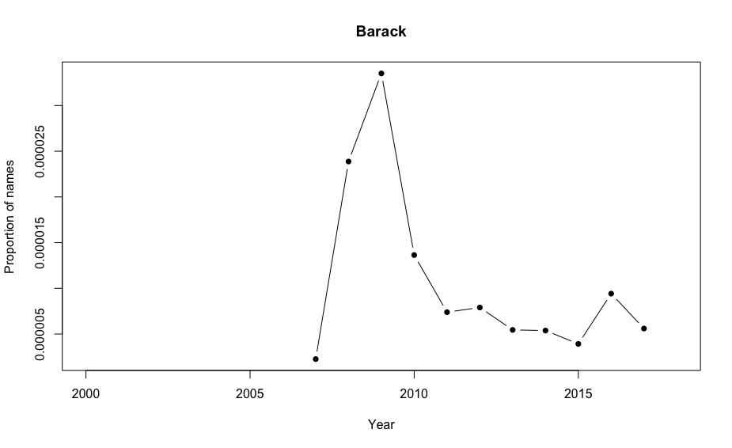
Step 7: Finally, we calculate our p-value:
p_value <- length(which(nulls >= obs)) / length(nulls)
p_value
[1] 0Let’s do this again with a different humpback pair, IDs 16 and 118, who were seen together only 13 times. Is their association rate statistically significant?
# Individual IDs
A <- "58"
B <- "133"
# Observed association rate
obs <- association_tally(hw,A=A,B=B)
obs
[1] 9
# Generate null model
nulls <- c()
for(i in 1:1000){
hw_null <- hw
hw_null$id <- sample(hw_null$id,size=nrow(hw_null),replace=FALSE)
nulli <- association_tally(hw_null,A=A,B=B)
nulls[i] <- nulli
}
# Visualize
hist(nulls,breaks=seq(0,20,by=1),xlim=c(0,(obs+7)),main=NULL,xlab="Null distribution")
abline(v=obs,lwd=2,lty=3,col="blue")
# Calculate p-value
p_value <- length(which(nulls >= obs)) / length(nulls)
p_value
[1] 0.02In this case, the observed association rate is still statistically significant at the conventional 0.05 level, but there is still an off chance that this is merely the result of random mixing.
2. Are two sample sets significantly different?
Building off of the whale scenario: Some of these whales have learned how to practice bubble-net feeding, a remarkable feeding strategy that requires group cooperation and special techniques for catching schooling fish such as herring. Other individuals have never been seen bubble net feeding. Are there any differences how often these two populations – the bubble netters and the “others” – use the study area?
First, let’s see how many of these individuals are known to bubble net feed:
[1] 108So, out of 132 individuals, 108 are known to practice bubble netting.
Let’s go through the steps:
1. Research question: Is there any difference in the number of years in which bubble-netters are seen compared to other whales?
2. Null model: In this case, the null model will be a distribution of average differences in the number of years in which individuals from the two populations are seen. This null distribution will be centered around zero. The variable we will shuffle is which individuals are known bubble netters, keeping the size of the two populations constant in each iteration.
3. Function:
annual_difference <- function(hw,bnf_ids){
bnf <- hw[hw$id %in% bnf_ids,] # Sightings of known BNFers
other <- hw[! hw$id %in% bnf_ids,] # Sightings of other whales
# Get distribution of years seen for individuals within each population
counts <- table(bnf$id,bnf$year) # sightings of each whale (rows) in each year (columns)
n_bnf <- apply(counts,1,function(x){length(which(x>0))}) # years seen for each individual
counts <- table(other$id,other$year) # sightings of each whale (rows) in each year (columns)
n_other <- apply(counts,1,function(x){length(which(x>0))}) # years seen for each individual
# Now get average difference between two distributions
mean_diff <- mean(n_bnf,na.rm=TRUE) - mean(n_other,na.rm=TRUE)
return(mean_diff)
}4. Observed value:
obs <- annual_difference(hw,bnf_ids=bnf_ids)
obs
[1] 2.3518525. Build null distribution:
nulls <- c()
for(i in 1:1000){
bnf_null <- sample(unique(hw$id),size=length(bnf_ids),replace=FALSE)
nulli <- annual_difference(hw, bnf_ids=bnf_null)
nulls[i] <- nulli
}6. Visualize:
hist(nulls,breaks=seq(-5,5,by=.1),xlim=c(-5,5),main=NULL,xlab="Null distribution")
abline(v=obs,lwd=2,lty=3,col="blue")
7. p-value:
p_value <- length(which(nulls >= obs)) / length(nulls)
p_value
[1] 0.001So there is indeed a significant difference in the annual site fidelity in the two populations! Bubble net feeders practice higher annual return rates than other whales (p = 0.001).
3. Are two variables correlated?
To perform a correlation analysis with randomization, let’s use a classic scenario from marine conversation: We have abundance estimates for a critically endangered porpoise from four years across two decades of research. This species only has a handful of individuals left in the wild. (porpoise-survey.csv)
df <- read.csv("./data/porpoise-survey.csv")
head(df)
year N
1 2000 12.547943
2 2000 5.932797
3 2000 17.291144
4 2000 2.707317
5 2000 12.279161
6 2000 8.945810Each row of this dataset is an abundance estimate from a survey that occurred within the vaquita’s range during a certain year.
plot(df$N ~ df$year,ylim=c(0,20),
xlab="Year",
ylab="Total Abundance",
col=adjustcolor("black",alpha.f=.6))Performing a simple linear regression with this dataset yields the following results:

The slope appears to be negative, but the regression has a non-significant p-value (p=0.22) and a very small correlation coefficient:
summary(df_lm)
Call:
lm(formula = df$N ~ df$year)
Residuals:
Min 1Q Median 3Q Max
-7.6841 -3.3981 -0.3879 3.0338 8.6945
Coefficients:
Estimate Std. Error t value Pr(>|t|)
(Intercept) 173.63645 133.70824 1.299 0.198
df$year -0.08216 0.06657 -1.234 0.221
Residual standard error: 4.221 on 82 degrees of freedom
Multiple R-squared: 0.01824, Adjusted R-squared: 0.006268
F-statistic: 1.523 on 1 and 82 DF, p-value: 0.2206These results may compel some conservation skeptics to stop worrying about the porpoise. “Yes, the population is small, but it appears stable, and there is no evidence that it is decreasing.” This is a situation in which using a randomization regression analysis could give us more information and help us speak more precisely about the risks to which this population is exposed.
Let’s go through the steps:
1. Research question: Is there a trend in porpoise abundance over time?
2. Null model: There is no trend; the abundance estimates might as well come from any given year and the trendline would look the same.
3. Function: Get the slope estimate for the time series.
df_lm <- function(df){
lmi <- lm(df$N ~ df$year)
slopi <- summary(lmi)$coefficients[2,1]
rsqu <- summary(lmi)$r.squared
return(c("slope"=slopi,"r"=rsqu))
}4. Observed value:
obs <- df_lm(df)
obs
slope r
-0.08216195 0.01824031 5. Build null distribution:
nulls <- data.frame()
for(i in 1:1000){
df_null <- df
df_null$year <- sample(df_null$year,size=nrow(df_null),replace=FALSE)
nulli <- df_lm(df_null)
nulli <- data.frame(slope=nulli[1],r=nulli[2])
nulls <- rbind(nulls,nulli)
}6. Visualize:
par(mfrow=c(1,2))
hist(nulls$slope,breaks=seq(-1,1,by=.01),xlim=c(-.5,.5),main=NULL,xlab="Null distribution",border="grey70")
text(-.48,20,"Slope \nestimate",pos=4)
abline(v=obs[1],lwd=2,lty=3,col="blue")
hist(nulls$r,breaks=seq(0,1,by=.001),xlim=c(0,.1),main=NULL,xlab="Null distribution",border="grey70")
text(.06,20,"Correlation \ncoefficient",pos=4)
abline(v=obs[2],lwd=2,lty=3,col="blue")
7. p-value:
Significance of slope:
p_value <- length(which(nulls$slope >= obs[1])) / nrow(nulls)
p_value
[1] 0.879This indicates that the chance that the slope is lower than the null expectation is 87.9%.
Significance of correlation coefficient:
p_value <- length(which(nulls$r >= obs[2])) / nrow(nulls)
p_value
[1] 0.221This indicates that the observed regression is better than 77.9% of scenarios that might be expected under the null expectation.
4. Is the slope of a regression line negative?
Sometimes we have even less data about an endagered species. Let’s say we go out in 2021 for another porpoise survey and come up with these estimates from the species’ range:
library(truncnorm) ; set.seed(1234)
n2021 <- rtruncnorm(n=25,a=0,mean=3.6,sd=3)
n2021
[1] 4.4322877 6.8533235 4.8873741 5.1181677 1.8757801 1.9601044
[7] 1.9066440 0.9298865 2.1684219 0.6048407 1.2712383 3.7933765
[13] 6.4784822 3.2691435 2.0669715 0.8664138 1.0884850 10.8475055
[19] 4.0022647 2.1279423 2.2783564 4.9787683 1.5188393 5.3242672
[25] 0.5290328We want to know what the chances are that the population has declined between 2017 and 2021.
n2017 <- df$N[df$year==2017]
plot(1,type="n",ylim=c(0,15),xlim=c(2015,2023),
xlab="Year",
ylab="Total Abundance",
col=adjustcolor("black",alpha.f=.6))
points(n2017 ~ rep(2017,times=length(n2017)))
points(n2021 ~ rep(2021,times=length(n2021)))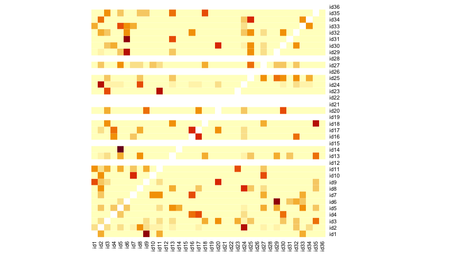
If this is all we have, what can we say about the status of this endangered species? With such a low sample size and so much variability, it can be really hard to produce significant or even compelling results. Well, what are the chances that this population is in decline? That is a question that a simple linear model cannot tell us.
In this case, our null model will be the distribution of differences of values drawn randomly from the two years’ datasets.
And in this randomization application, the workflow is a bit more simplified. We don’t need a core function, and we don’t even need a for loop.
# Randomly draw from the 2017 dataset 5,000 times
r2017 <- sample(n2017,size=10000,replace=TRUE)
# Do the same for the 2017 dataset
r2021 <- sample(n2021,size=10000,replace=TRUE)
# Get the difference of these two datasets
diffs <- r2021 - r2017
# Visualize
hist(diffs,breaks=seq(-20,20,by=1),xlim=c(-20,20),main=NULL,xlab="Null distribution",border="grey70")
abline(v=0,lwd=2,lty=3,col="blue")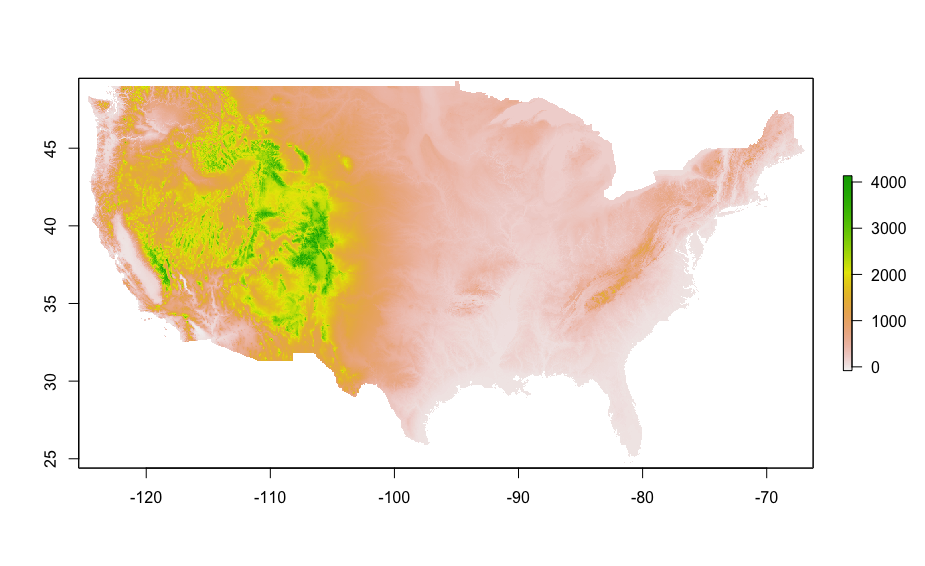
# Get p_value
p_value <- length(which(diffs >= 0)) / length(diffs)
# Convert to chances of decline
chances_of_decline <- 100*(1 - p_value)
chances_of_decline
[1] 84.43The chances that this population is in decline is 84.43%.
Review assignment
Let’s return to the humpback whale scenario